- Baseline data set
- ../iscsi-fuse-virt-2/samples/fuse_virt.1.iozone
- ../iscsi-fuse-virt-2/samples/fuse_virt.2.iozone
- ../iscsi-fuse-virt-2/samples/fuse_virt.3.iozone
- ../iscsi-fuse-virt-2/samples/fuse_virt.4.iozone
- ../iscsi-fuse-virt-2/samples/fuse_virt.5.iozone
- Investigated data set
- ./samples/iscsi_virt_mpath_aa.1.iozone
- ./samples/iscsi_virt_mpath_aa.2.iozone
- ./samples/iscsi_virt_mpath_aa.3.iozone
- ./samples/iscsi_virt_mpath_aa.4.iozone
- ./samples/iscsi_virt_mpath_aa.5.iozone
Overall summary
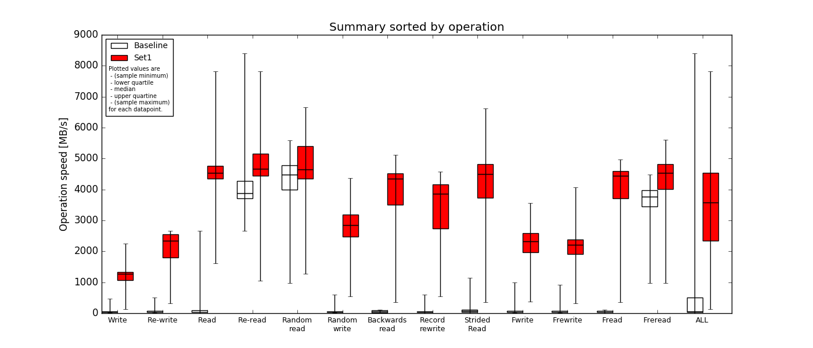
| Operation |
Write |
Re-write |
Read |
Re-read |
Random read |
Random write |
Backwards read |
Record rewrite |
Strided Read |
Fwrite |
Frewrite |
Fread |
Freread |
ALL |
| baeline | first quartile |
37.34 |
37.37 |
39.61 |
3707.18 |
3995.4 |
37.28 |
12.97 |
34.3 |
31.42 |
37.66 |
37.67 |
39.27 |
3455.69 |
37.79 |
| median |
38.75 |
38.86 |
46.5 |
3877.22 |
4481.92 |
37.81 |
51.64 |
37.7 |
70.7 |
41.08 |
41.32 |
41.55 |
3760.95 |
53.72 |
| third quartile |
63.71 |
65.8 |
95.4 |
4282.51 |
4778.74 |
49.5 |
86.78 |
56.6 |
108.58 |
75.6 |
75.19 |
78.59 |
3965.83 |
501.78 |
| minimum |
10.5 |
10.58 |
4.58 |
2671.54 |
974.91 |
10.79 |
1.54 |
5.3 |
4.05 |
10.73 |
10.53 |
3.72 |
974.91 |
1.54 |
| maximum |
468.12 |
514.4 |
2653.91 |
8395.92 |
5586.4 |
606.83 |
110.84 |
608.33 |
1142.39 |
994.0 |
919.52 |
110.88 |
4486.82 |
8395.92 |
| mean val. |
73.44 |
75.78 |
143.75 |
4034.02 |
4359.09 |
75.79 |
51.14 |
84.21 |
135.34 |
102.35 |
99.94 |
54.96 |
3644.7 |
994.96 |
| standard dev. |
87.21 |
91.17 |
397.64 |
663.67 |
743.0 |
105.38 |
37.28 |
123.01 |
214.02 |
158.25 |
152.04 |
28.41 |
533.62 |
1695.11 |
| ci. min. 90% |
68.11 |
70.2 |
119.43 |
3993.42 |
4313.64 |
69.34 |
48.86 |
76.69 |
122.25 |
92.67 |
90.64 |
53.22 |
3612.06 |
966.24 |
| ci. max. 90% |
78.78 |
81.36 |
168.07 |
4074.61 |
4404.53 |
82.23 |
53.42 |
91.74 |
148.43 |
112.03 |
109.24 |
56.7 |
3677.34 |
1023.68 |
| geom. mean |
52.38 |
53.61 |
63.4 |
3986.77 |
4274.39 |
49.2 |
30.03 |
48.77 |
63.34 |
61.54 |
61.03 |
46.84 |
3594.84 |
141.06 |
| set1 | first quartile |
1059.58 |
1798.89 |
4341.94 |
4443.58 |
4349.89 |
2475.29 |
3502.83 |
2735.03 |
3732.88 |
1960.31 |
1907.17 |
3706.49 |
4008.31 |
2342.0 |
| median |
1266.75 |
2352.64 |
4536.28 |
4673.06 |
4652.03 |
2855.42 |
4347.3 |
3857.81 |
4505.53 |
2321.16 |
2217.21 |
4444.03 |
4529.39 |
3587.19 |
| third quartile |
1325.43 |
2552.1 |
4760.52 |
5159.74 |
5401.72 |
3194.56 |
4525.55 |
4153.42 |
4812.13 |
2590.71 |
2382.38 |
4584.91 |
4818.57 |
4532.89 |
| minimum |
125.25 |
322.48 |
1617.79 |
1043.47 |
1279.43 |
549.69 |
350.04 |
549.69 |
356.93 |
373.19 |
322.48 |
357.68 |
974.91 |
125.25 |
| maximum |
2244.88 |
2669.45 |
7812.5 |
7812.5 |
6651.3 |
4367.65 |
5121.55 |
4579.65 |
6621.86 |
3571.43 |
4065.01 |
4978.1 |
5615.59 |
7812.5 |
| mean val. |
1142.83 |
2107.05 |
4485.81 |
4717.51 |
4686.51 |
2721.15 |
3901.77 |
3425.38 |
4271.04 |
2250.97 |
2127.38 |
4072.28 |
4397.13 |
3408.22 |
| standard dev. |
301.29 |
584.9 |
565.85 |
678.03 |
809.42 |
680.77 |
953.68 |
958.31 |
994.56 |
559.63 |
579.2 |
843.05 |
765.64 |
1366.65 |
| ci. min. 90% |
1124.4 |
2071.28 |
4451.2 |
4676.03 |
4637.0 |
2679.51 |
3843.44 |
3366.76 |
4210.21 |
2216.74 |
2091.95 |
4020.71 |
4350.3 |
3385.06 |
| ci. max. 90% |
1161.26 |
2142.83 |
4520.42 |
4758.98 |
4736.02 |
2762.79 |
3960.11 |
3483.99 |
4331.87 |
2285.2 |
2162.8 |
4123.84 |
4443.96 |
3431.37 |
| geom. mean |
1078.53 |
1986.32 |
4446.86 |
4665.28 |
4605.54 |
2606.74 |
3694.82 |
3237.36 |
4084.34 |
2164.49 |
2024.84 |
3919.0 |
4308.7 |
3044.31 |
| linear regression slope 90% |
15.9 - 16.17 |
29.28 - 29.56 |
30.8 - 31.07 |
1.11 - 1.23 |
1.02 - 1.13 |
33.45 - 33.71 |
75.57 - 75.83 |
41.78 - 42.05 |
30.7 - 30.97 |
19.94 - 20.2 |
18.77 - 19.02 |
74.96 - 75.23 |
1.17 - 1.25 |
3.35 - 3.55 |
| ttest equality |
DIFF |
DIFF |
DIFF |
DIFF |
DIFF |
DIFF |
DIFF |
DIFF |
DIFF |
DIFF |
DIFF |
DIFF |
DIFF |
DIFF |
| baseline set1 difference |
1456.04 % |
2680.45 % |
3020.5 % |
16.94 % |
7.51 % |
3490.55 % |
7529.0 % |
3967.51 % |
3055.87 % |
2099.32 % |
2028.67 % |
7309.9 % |
20.64 % |
242.55 % |
| ttest p-value |
0.0 |
0.0 |
0.0 |
0.0 |
0.0 |
0.0 |
0.0 |
0.0 |
0.0 |
0.0 |
0.0 |
0.0 |
0.0 |
0.0 |
Write
| Write |
File size [kB] |
4 |
8 |
16 |
32 |
64 |
128 |
256 |
512 |
1024 |
2048 |
4096 |
8192 |
16384 |
32768 |
65536 |
131072 |
262144 |
524288 |
1048576 |
|---|
| baseline | first quartile |
10.73 |
13.32 |
16.37 |
25.8 |
35.7 |
62.16 |
72.47 |
85.24 |
86.88 |
67.37 |
47.12 |
39.56 |
38.35 |
37.74 |
37.5 |
37.38 |
37.31 |
37.28 |
37.27 |
| median |
10.73 |
18.13 |
24.3 |
35.59 |
65.8 |
96.93 |
120.83 |
168.79 |
208.41 |
70.41 |
48.19 |
40.11 |
38.55 |
37.8 |
37.53 |
37.39 |
37.32 |
37.29 |
37.27 |
| third quartile |
11.99 |
21.4 |
41.83 |
61.29 |
93.26 |
161.33 |
289.24 |
369.3 |
374.23 |
72.53 |
48.81 |
40.73 |
39.02 |
37.89 |
37.59 |
37.42 |
37.33 |
37.29 |
37.27 |
| mean val. |
11.53 |
17.41 |
27.3 |
44.72 |
77.66 |
126.07 |
172.04 |
210.32 |
233.93 |
67.93 |
47.96 |
40.18 |
38.67 |
37.83 |
37.39 |
37.36 |
37.1 |
37.06 |
37.01 |
| standard dev. |
1.35 |
4.58 |
11.89 |
27.48 |
53.33 |
94.48 |
118.81 |
142.54 |
144.66 |
7.51 |
1.2 |
0.74 |
0.41 |
0.12 |
0.82 |
0.27 |
0.95 |
0.9 |
1.5 |
| ci. min. 90% |
10.24 |
14.75 |
21.9 |
34.1 |
59.41 |
96.76 |
138.09 |
172.34 |
197.69 |
66.15 |
47.69 |
40.02 |
38.58 |
37.8 |
37.18 |
37.29 |
36.87 |
36.84 |
36.63 |
| ci. max. 90% |
12.82 |
20.06 |
32.71 |
55.35 |
95.91 |
155.37 |
206.0 |
248.29 |
270.16 |
69.71 |
48.24 |
40.34 |
38.75 |
37.86 |
37.59 |
37.43 |
37.34 |
37.29 |
37.39 |
| geom. mean |
11.47 |
16.84 |
24.92 |
37.28 |
62.61 |
98.97 |
133.32 |
159.57 |
180.77 |
67.46 |
47.95 |
40.17 |
38.67 |
37.83 |
37.38 |
37.36 |
37.09 |
37.05 |
36.97 |
| minimum |
10.5 |
11.55 |
13.55 |
14.21 |
24.25 |
33.94 |
42.66 |
37.12 |
36.39 |
47.77 |
45.07 |
38.78 |
38.04 |
37.65 |
33.63 |
35.59 |
31.19 |
32.39 |
27.2 |
| maximum |
13.71 |
22.77 |
44.62 |
98.56 |
182.7 |
382.19 |
389.98 |
458.31 |
468.12 |
75.51 |
50.19 |
42.02 |
39.7 |
38.17 |
37.81 |
37.54 |
37.39 |
37.32 |
37.28 |
| set1 | first quartile |
126.22 |
236.5 |
306.52 |
436.0 |
589.34 |
734.23 |
879.09 |
992.91 |
1103.82 |
1171.59 |
1166.36 |
1205.69 |
1202.93 |
1252.84 |
1250.05 |
1251.96 |
1255.51 |
1258.57 |
1359.17 |
| median |
130.23 |
264.13 |
390.55 |
524.73 |
679.47 |
886.66 |
1045.64 |
1178.0 |
1264.18 |
1304.24 |
1325.34 |
1308.81 |
1261.33 |
1299.69 |
1305.67 |
1304.98 |
1304.16 |
1321.01 |
1404.62 |
| third quartile |
130.23 |
301.16 |
458.92 |
582.1 |
780.64 |
980.37 |
1138.81 |
1278.9 |
1327.81 |
1358.52 |
1354.12 |
1337.35 |
1315.35 |
1315.73 |
1319.48 |
1319.08 |
1322.38 |
1331.94 |
1482.21 |
| mean val. |
128.43 |
260.6 |
382.46 |
509.51 |
654.45 |
848.61 |
990.2 |
1113.28 |
1180.78 |
1222.74 |
1227.13 |
1221.05 |
1199.69 |
1283.51 |
1288.36 |
1288.44 |
1289.67 |
1301.56 |
1445.44 |
| standard dev. |
2.49 |
46.2 |
69.55 |
106.59 |
134.7 |
206.4 |
208.48 |
202.66 |
205.27 |
204.16 |
191.88 |
181.66 |
170.77 |
40.2 |
38.95 |
39.01 |
39.75 |
43.76 |
165.48 |
| ci. min. 90% |
126.06 |
233.82 |
350.83 |
468.3 |
608.36 |
784.58 |
930.61 |
1059.29 |
1129.37 |
1174.34 |
1183.84 |
1181.86 |
1164.33 |
1273.44 |
1278.6 |
1278.67 |
1279.72 |
1290.6 |
1403.99 |
| ci. max. 90% |
130.8 |
287.38 |
414.09 |
550.72 |
700.54 |
912.64 |
1049.79 |
1167.27 |
1232.2 |
1271.15 |
1270.43 |
1260.24 |
1235.04 |
1293.58 |
1298.11 |
1298.21 |
1299.63 |
1312.52 |
1486.88 |
| geom. mean |
128.41 |
256.41 |
376.39 |
498.23 |
638.95 |
820.6 |
964.97 |
1091.99 |
1159.94 |
1202.33 |
1209.14 |
1204.83 |
1185.13 |
1282.89 |
1287.77 |
1287.86 |
1289.07 |
1300.83 |
1437.67 |
| minimum |
125.25 |
163.18 |
283.94 |
346.93 |
381.13 |
412.56 |
489.12 |
666.65 |
709.24 |
721.24 |
732.48 |
739.38 |
733.47 |
1203.1 |
1219.28 |
1219.0 |
1219.78 |
1222.2 |
1268.67 |
| maximum |
130.23 |
301.16 |
475.57 |
652.73 |
802.14 |
1157.87 |
1294.85 |
1336.78 |
1424.31 |
1413.46 |
1378.93 |
1362.9 |
1333.43 |
1331.24 |
1331.84 |
1332.71 |
1334.19 |
1382.23 |
2244.88 |
| ttest equality |
DIFF |
DIFF |
DIFF |
DIFF |
DIFF |
DIFF |
DIFF |
DIFF |
DIFF |
DIFF |
DIFF |
DIFF |
DIFF |
DIFF |
DIFF |
DIFF |
DIFF |
DIFF |
DIFF |
| baseline set1 difference |
1113.67 % |
1356.69 % |
1507.14 % |
1374.44 % |
932.6 % |
814.73 % |
765.35 % |
597.89 % |
506.57 % |
1752.26 % |
2650.49 % |
3163.15 % |
3172.2 % |
3338.71 % |
3378.71 % |
3390.39 % |
3394.41 % |
3442.7 % |
3668.71 % |
| ttest p-value |
0.0 |
0.0 |
0.0 |
0.0 |
0.0 |
0.0 |
0.0 |
0.0 |
0.0 |
0.0 |
0.0 |
0.0 |
0.0 |
0.0 |
0.0 |
0.0 |
0.0 |
0.0 |
0.0 |
| Write |
Block size [kB] |
4 |
8 |
16 |
32 |
64 |
128 |
256 |
512 |
1024 |
2048 |
4096 |
8192 |
16384 |
|---|
| baseline | first quartile |
16.67 |
31.03 |
42.6 |
48.28 |
37.45 |
37.39 |
37.39 |
37.32 |
37.33 |
37.32 |
37.32 |
37.31 |
37.3 |
| median |
38.04 |
45.14 |
60.27 |
83.92 |
40.05 |
39.47 |
38.66 |
38.23 |
37.79 |
37.68 |
37.55 |
37.47 |
37.39 |
| third quartile |
45.81 |
63.59 |
84.93 |
110.88 |
172.71 |
283.22 |
74.73 |
54.83 |
48.28 |
39.63 |
39.02 |
38.21 |
37.75 |
| mean val. |
32.86 |
47.96 |
65.47 |
88.02 |
90.53 |
120.03 |
119.59 |
106.45 |
76.24 |
42.02 |
38.96 |
37.91 |
37.6 |
| standard dev. |
13.74 |
18.55 |
24.66 |
40.07 |
70.63 |
124.72 |
142.38 |
145.52 |
108.05 |
10.67 |
3.12 |
0.91 |
0.48 |
| ci. min. 90% |
30.02 |
43.95 |
59.91 |
78.52 |
76.94 |
95.18 |
90.12 |
75.06 |
51.86 |
39.48 |
38.18 |
37.67 |
37.47 |
| ci. max. 90% |
35.71 |
51.96 |
71.04 |
97.52 |
104.11 |
144.89 |
149.07 |
137.84 |
100.63 |
44.55 |
39.74 |
38.15 |
37.74 |
| geom. mean |
29.24 |
44.18 |
61.21 |
79.02 |
67.94 |
73.88 |
68.98 |
60.81 |
51.21 |
41.0 |
38.85 |
37.9 |
37.6 |
| minimum |
10.5 |
20.89 |
38.28 |
38.23 |
32.39 |
37.03 |
35.59 |
31.19 |
37.27 |
27.2 |
36.33 |
37.08 |
36.8 |
| maximum |
49.36 |
76.86 |
118.4 |
184.06 |
212.22 |
382.19 |
399.02 |
468.12 |
434.43 |
74.72 |
49.92 |
40.27 |
39.03 |
| set1 | first quartile |
346.93 |
574.24 |
714.69 |
918.8 |
1246.36 |
1282.21 |
1301.82 |
1318.61 |
1327.09 |
1328.21 |
1313.62 |
1234.39 |
1219.28 |
| median |
613.99 |
889.08 |
1067.03 |
1201.69 |
1259.2 |
1288.27 |
1306.55 |
1326.25 |
1332.11 |
1332.03 |
1318.21 |
1239.79 |
1221.85 |
| third quartile |
732.48 |
967.01 |
1130.13 |
1236.57 |
1295.49 |
1323.76 |
1331.54 |
1361.72 |
1358.64 |
1346.74 |
1324.85 |
1254.43 |
1223.57 |
| mean val. |
530.77 |
767.55 |
930.42 |
1075.49 |
1219.4 |
1287.11 |
1310.66 |
1342.63 |
1362.57 |
1345.99 |
1335.31 |
1251.92 |
1238.38 |
| standard dev. |
216.82 |
245.33 |
255.42 |
221.63 |
158.88 |
110.37 |
65.18 |
47.52 |
130.3 |
41.96 |
60.23 |
39.97 |
48.62 |
| ci. min. 90% |
485.88 |
714.62 |
872.79 |
1022.94 |
1188.84 |
1265.12 |
1297.17 |
1332.38 |
1333.16 |
1336.05 |
1320.22 |
1241.27 |
1224.48 |
| ci. max. 90% |
575.66 |
820.48 |
988.06 |
1128.04 |
1249.96 |
1309.11 |
1324.16 |
1352.89 |
1391.97 |
1355.94 |
1350.39 |
1262.57 |
1252.27 |
| geom. mean |
471.09 |
717.65 |
888.13 |
1049.01 |
1207.31 |
1282.8 |
1309.08 |
1341.84 |
1358.01 |
1345.39 |
1334.09 |
1251.33 |
1237.5 |
| minimum |
125.25 |
290.48 |
447.64 |
624.73 |
771.45 |
1041.49 |
1111.01 |
1225.83 |
1261.48 |
1282.9 |
1302.61 |
1211.66 |
1202.93 |
| maximum |
753.3 |
1015.84 |
1190.61 |
1292.78 |
1476.23 |
1904.98 |
1543.82 |
1570.18 |
2244.88 |
1525.94 |
1563.31 |
1412.4 |
1404.62 |
| ttest equality |
DIFF |
DIFF |
DIFF |
DIFF |
DIFF |
DIFF |
DIFF |
DIFF |
DIFF |
DIFF |
DIFF |
DIFF |
DIFF |
| baseline set1 difference |
1514.06 % |
1869.45 % |
1670.55 % |
1331.94 % |
3043.77 % |
3164.19 % |
3280.0 % |
3369.55 % |
3424.76 % |
3435.36 % |
3410.65 % |
3208.39 % |
3167.97 % |
| ttest p-value |
0.0 |
0.0 |
0.0 |
0.0 |
0.0 |
0.0 |
0.0 |
0.0 |
0.0 |
0.0 |
0.0 |
0.0 |
0.0 |
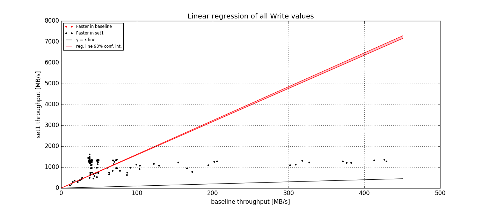
| Regression line |
|---|
| slope | 16.03345 |
| std. error | 0.08332 |
| ci. max 90% | 15.89551 |
| ci. min. 90% | 16.17139 |
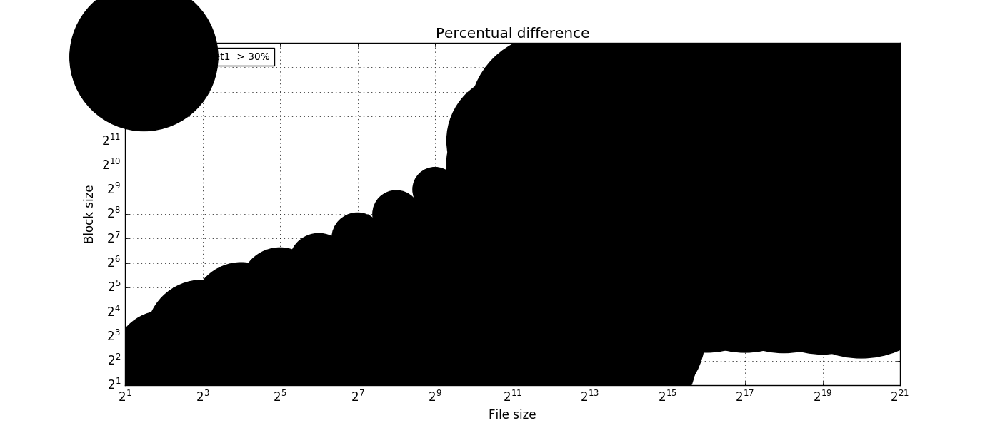
Back on top
Re-write
| Re-write |
File size [kB] |
4 |
8 |
16 |
32 |
64 |
128 |
256 |
512 |
1024 |
2048 |
4096 |
8192 |
16384 |
32768 |
65536 |
131072 |
262144 |
524288 |
1048576 |
|---|
| baseline | first quartile |
10.79 |
15.06 |
20.67 |
28.17 |
45.39 |
62.45 |
75.68 |
92.82 |
86.24 |
66.44 |
47.09 |
39.63 |
38.4 |
37.77 |
37.51 |
37.38 |
37.31 |
37.28 |
37.26 |
| median |
10.97 |
20.28 |
26.49 |
44.25 |
71.51 |
108.77 |
129.94 |
157.63 |
201.94 |
70.4 |
48.21 |
40.06 |
38.55 |
37.8 |
37.53 |
37.39 |
37.32 |
37.29 |
37.27 |
| third quartile |
11.36 |
24.64 |
46.43 |
58.46 |
127.58 |
200.55 |
308.56 |
379.07 |
369.0 |
73.42 |
48.99 |
40.7 |
38.8 |
37.87 |
37.61 |
37.42 |
37.33 |
37.29 |
37.27 |
| mean val. |
11.77 |
19.9 |
32.83 |
47.87 |
91.58 |
133.91 |
183.93 |
219.68 |
236.74 |
68.37 |
48.04 |
40.26 |
38.62 |
37.85 |
37.56 |
37.31 |
37.1 |
36.78 |
36.98 |
| standard dev. |
1.91 |
5.5 |
16.59 |
25.09 |
57.86 |
90.8 |
134.72 |
152.05 |
146.37 |
7.6 |
1.41 |
0.79 |
0.29 |
0.13 |
0.08 |
0.4 |
1.19 |
1.88 |
0.96 |
| ci. min. 90% |
9.95 |
16.72 |
25.29 |
38.17 |
71.78 |
105.74 |
145.43 |
179.18 |
200.08 |
66.57 |
47.72 |
40.09 |
38.56 |
37.82 |
37.54 |
37.21 |
36.8 |
36.31 |
36.74 |
| ci. max. 90% |
13.59 |
23.09 |
40.37 |
57.57 |
111.38 |
162.08 |
222.44 |
260.19 |
273.4 |
70.17 |
48.36 |
40.44 |
38.68 |
37.88 |
37.58 |
37.42 |
37.4 |
37.25 |
37.22 |
| geom. mean |
11.66 |
19.19 |
29.28 |
42.03 |
74.86 |
106.96 |
138.3 |
166.28 |
183.83 |
67.9 |
48.02 |
40.26 |
38.62 |
37.85 |
37.56 |
37.31 |
37.08 |
36.73 |
36.97 |
| minimum |
10.58 |
12.83 |
12.7 |
17.71 |
26.29 |
38.62 |
40.7 |
43.32 |
44.38 |
46.6 |
43.93 |
39.27 |
38.18 |
37.71 |
37.47 |
35.41 |
29.45 |
28.12 |
32.59 |
| maximum |
15.14 |
27.82 |
68.21 |
103.47 |
204.35 |
327.92 |
480.82 |
496.51 |
514.4 |
77.65 |
50.15 |
42.74 |
39.54 |
38.26 |
37.81 |
37.52 |
37.39 |
37.33 |
37.29 |
| set1 | first quartile |
322.48 |
457.95 |
625.31 |
915.61 |
1116.43 |
1216.3 |
1436.83 |
1575.55 |
1615.8 |
1889.09 |
1979.79 |
2188.42 |
2146.81 |
2295.23 |
2412.99 |
2416.87 |
2425.21 |
2427.44 |
2430.31 |
| median |
322.48 |
530.34 |
782.0 |
1085.84 |
1331.99 |
1559.03 |
1824.23 |
1999.59 |
2237.19 |
2354.5 |
2458.63 |
2467.19 |
2421.32 |
2507.86 |
2534.73 |
2537.62 |
2538.7 |
2546.44 |
2551.75 |
| third quartile |
322.48 |
597.89 |
966.53 |
1228.54 |
1525.82 |
1797.53 |
2129.98 |
2222.02 |
2410.79 |
2561.38 |
2594.76 |
2579.86 |
2566.91 |
2546.54 |
2568.22 |
2571.42 |
2575.97 |
2579.85 |
2590.59 |
| mean val. |
323.78 |
527.11 |
789.38 |
1067.47 |
1296.02 |
1485.33 |
1721.83 |
1882.99 |
2025.36 |
2165.11 |
2255.84 |
2285.01 |
2260.44 |
2435.26 |
2471.45 |
2473.38 |
2478.26 |
2484.38 |
2490.41 |
| standard dev. |
2.9 |
77.49 |
151.81 |
232.47 |
333.68 |
371.56 |
436.06 |
456.27 |
475.63 |
480.85 |
460.16 |
435.43 |
414.77 |
149.56 |
135.87 |
137.83 |
136.66 |
138.83 |
138.55 |
| ci. min. 90% |
321.02 |
482.19 |
720.34 |
977.59 |
1181.84 |
1370.07 |
1597.2 |
1761.44 |
1906.23 |
2051.1 |
2152.0 |
2191.07 |
2174.58 |
2397.8 |
2437.42 |
2438.86 |
2444.03 |
2449.6 |
2455.71 |
| ci. max. 90% |
326.54 |
572.03 |
858.42 |
1157.35 |
1410.2 |
1600.6 |
1846.47 |
2004.54 |
2144.5 |
2279.12 |
2359.68 |
2378.94 |
2346.31 |
2472.72 |
2505.48 |
2507.9 |
2512.49 |
2519.15 |
2525.11 |
| geom. mean |
323.77 |
521.94 |
775.63 |
1042.01 |
1249.7 |
1434.66 |
1660.53 |
1822.02 |
1962.14 |
2101.01 |
2198.05 |
2232.76 |
2213.25 |
2430.61 |
2467.67 |
2469.48 |
2474.44 |
2480.44 |
2486.49 |
| minimum |
322.48 |
432.26 |
596.84 |
741.33 |
686.59 |
850.0 |
853.33 |
1052.89 |
1086.94 |
1091.73 |
1171.28 |
1172.83 |
1179.32 |
2139.04 |
2202.8 |
2192.3 |
2216.91 |
2219.42 |
2222.15 |
| maximum |
328.96 |
609.01 |
980.99 |
1368.1 |
1738.29 |
2010.26 |
2270.6 |
2551.88 |
2616.85 |
2659.84 |
2664.82 |
2669.45 |
2645.43 |
2603.7 |
2603.75 |
2603.0 |
2608.25 |
2614.18 |
2619.16 |
| ttest equality |
DIFF |
DIFF |
DIFF |
DIFF |
DIFF |
DIFF |
DIFF |
DIFF |
DIFF |
DIFF |
DIFF |
DIFF |
DIFF |
DIFF |
DIFF |
DIFF |
DIFF |
DIFF |
DIFF |
| baseline set1 difference |
2838.45 % |
2515.62 % |
2851.92 % |
2353.85 % |
1762.67 % |
1333.29 % |
1303.93 % |
1168.51 % |
1007.84 % |
3244.65 % |
5000.04 % |
6059.33 % |
6180.7 % |
6533.9 % |
6654.19 % |
6686.78 % |
6702.11 % |
6729.45 % |
6746.93 % |
| ttest p-value |
0.0 |
0.0 |
0.0 |
0.0 |
0.0 |
0.0 |
0.0 |
0.0 |
0.0 |
0.0 |
0.0 |
0.0 |
0.0 |
0.0 |
0.0 |
0.0 |
0.0 |
0.0 |
0.0 |
| Re-write |
Block size [kB] |
4 |
8 |
16 |
32 |
64 |
128 |
256 |
512 |
1024 |
2048 |
4096 |
8192 |
16384 |
|---|
| baseline | first quartile |
21.23 |
38.4 |
48.62 |
48.26 |
37.41 |
37.41 |
37.39 |
37.36 |
37.33 |
37.32 |
37.3 |
37.31 |
37.28 |
| median |
40.12 |
48.01 |
65.8 |
104.14 |
40.37 |
39.25 |
38.54 |
38.26 |
37.79 |
37.73 |
37.52 |
37.46 |
37.39 |
| third quartile |
45.74 |
66.85 |
85.67 |
128.15 |
187.61 |
287.15 |
74.77 |
55.69 |
46.55 |
40.23 |
38.66 |
37.96 |
37.78 |
| mean val. |
34.72 |
50.7 |
67.61 |
94.79 |
94.78 |
121.6 |
123.93 |
107.36 |
79.99 |
42.03 |
38.76 |
37.85 |
37.37 |
| standard dev. |
13.19 |
18.2 |
24.57 |
43.46 |
77.2 |
127.21 |
150.95 |
146.64 |
120.84 |
10.55 |
3.05 |
0.89 |
1.21 |
| ci. min. 90% |
31.99 |
46.77 |
62.07 |
84.49 |
79.93 |
96.25 |
92.68 |
75.73 |
52.72 |
39.53 |
38.0 |
37.62 |
37.02 |
| ci. max. 90% |
37.45 |
54.63 |
73.16 |
105.1 |
109.63 |
146.94 |
155.18 |
139.0 |
107.25 |
44.53 |
39.52 |
38.09 |
37.71 |
| geom. mean |
31.43 |
47.29 |
63.45 |
84.09 |
69.35 |
74.06 |
69.75 |
61.58 |
51.52 |
41.05 |
38.65 |
37.84 |
37.35 |
| minimum |
10.58 |
20.83 |
38.26 |
38.24 |
29.45 |
29.2 |
32.59 |
37.0 |
36.81 |
28.12 |
35.55 |
36.75 |
33.04 |
| maximum |
50.12 |
83.81 |
122.99 |
193.72 |
260.98 |
377.13 |
480.82 |
496.51 |
514.4 |
74.53 |
49.57 |
40.07 |
39.25 |
| set1 | first quartile |
741.33 |
1075.74 |
1374.03 |
1674.77 |
2110.25 |
2259.19 |
2430.21 |
2561.53 |
2592.21 |
2594.04 |
2546.73 |
2265.23 |
2203.93 |
| median |
1012.33 |
1327.43 |
1607.75 |
1953.32 |
2411.75 |
2503.7 |
2534.95 |
2573.58 |
2601.14 |
2603.72 |
2558.32 |
2271.03 |
2215.38 |
| third quartile |
1179.32 |
1579.37 |
1921.22 |
2221.27 |
2427.58 |
2521.76 |
2546.44 |
2584.26 |
2611.85 |
2612.07 |
2578.17 |
2283.49 |
2221.96 |
| mean val. |
900.07 |
1278.24 |
1603.48 |
1918.96 |
2268.25 |
2392.27 |
2472.9 |
2561.59 |
2580.56 |
2603.62 |
2564.11 |
2286.0 |
2209.33 |
| standard dev. |
290.47 |
340.14 |
331.9 |
310.74 |
241.48 |
200.68 |
113.13 |
51.36 |
93.9 |
21.26 |
25.4 |
49.24 |
22.98 |
| ci. min. 90% |
839.93 |
1204.86 |
1528.58 |
1845.28 |
2221.8 |
2352.28 |
2449.48 |
2550.51 |
2559.37 |
2598.58 |
2557.75 |
2272.89 |
2202.77 |
| ci. max. 90% |
960.2 |
1351.62 |
1678.38 |
1992.64 |
2314.69 |
2432.26 |
2496.32 |
2572.67 |
2601.75 |
2608.66 |
2570.47 |
2299.12 |
2215.9 |
| geom. mean |
840.83 |
1224.91 |
1566.5 |
1892.52 |
2254.28 |
2382.91 |
2470.24 |
2561.06 |
2578.71 |
2603.53 |
2563.99 |
2285.5 |
2209.22 |
| minimum |
322.48 |
597.89 |
966.53 |
1300.24 |
1693.37 |
1644.54 |
2176.35 |
2284.96 |
2139.04 |
2547.56 |
2510.39 |
2199.61 |
2146.81 |
| maximum |
1215.24 |
1685.65 |
2038.69 |
2287.78 |
2471.43 |
2579.2 |
2568.11 |
2635.11 |
2665.84 |
2669.45 |
2642.16 |
2460.76 |
2261.25 |
| ttest equality |
DIFF |
DIFF |
DIFF |
DIFF |
DIFF |
DIFF |
DIFF |
DIFF |
DIFF |
DIFF |
DIFF |
DIFF |
DIFF |
| baseline set1 difference |
2423.49 % |
2664.93 % |
2343.39 % |
1775.64 % |
5873.81 % |
6279.56 % |
6477.61 % |
6625.75 % |
6782.6 % |
6800.23 % |
6718.28 % |
5962.78 % |
5824.97 % |
| ttest p-value |
0.0 |
0.0 |
0.0 |
0.0 |
0.0 |
0.0 |
0.0 |
0.0 |
0.0 |
0.0 |
0.0 |
0.0 |
0.0 |
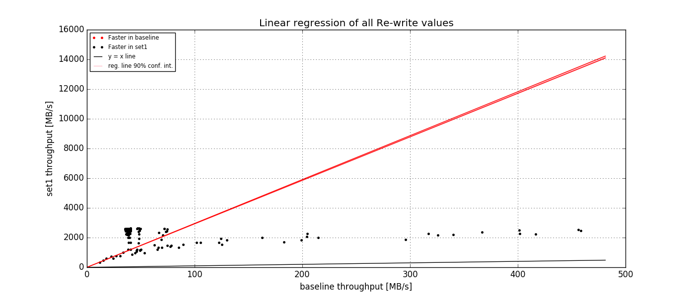
| Regression line |
|---|
| slope | 29.42297 |
| std. error | 0.0845 |
| ci. max 90% | 29.28308 |
| ci. min. 90% | 29.56285 |
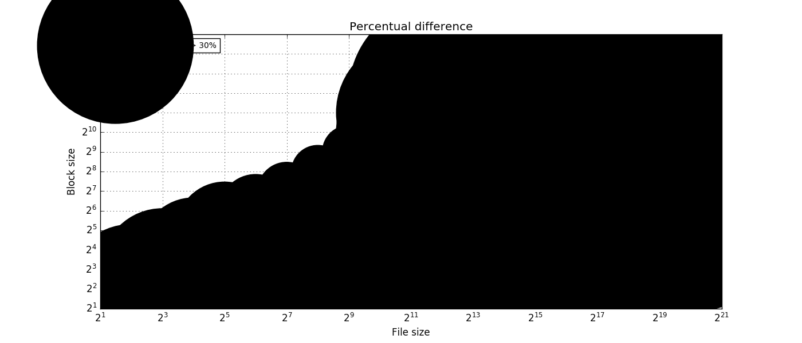
Back on top
Read
| Read |
File size [kB] |
4 |
8 |
16 |
32 |
64 |
128 |
256 |
512 |
1024 |
2048 |
4096 |
8192 |
16384 |
32768 |
65536 |
131072 |
262144 |
524288 |
1048576 |
|---|
| baseline | first quartile |
6.24 |
13.07 |
25.67 |
14.84 |
25.08 |
24.28 |
40.82 |
48.15 |
43.86 |
40.91 |
39.92 |
39.58 |
39.6 |
39.77 |
39.75 |
39.73 |
39.68 |
39.61 |
39.61 |
| median |
6.31 |
13.32 |
26.84 |
15.58 |
26.19 |
41.88 |
61.51 |
65.93 |
47.92 |
42.76 |
41.06 |
40.41 |
40.26 |
67.4 |
66.5 |
66.03 |
65.65 |
65.61 |
65.58 |
| third quartile |
6.35 |
13.86 |
27.85 |
50.03 |
95.57 |
197.71 |
216.03 |
88.51 |
56.05 |
63.4 |
84.45 |
82.36 |
93.6 |
107.94 |
101.07 |
97.97 |
96.51 |
95.78 |
95.34 |
| mean val. |
6.28 |
12.5 |
26.1 |
30.09 |
52.84 |
92.55 |
130.91 |
152.87 |
183.71 |
237.0 |
280.17 |
268.17 |
260.03 |
85.01 |
74.7 |
71.09 |
70.02 |
69.31 |
68.95 |
| standard dev. |
0.17 |
2.95 |
5.44 |
19.02 |
37.92 |
86.64 |
134.17 |
231.12 |
367.47 |
558.11 |
710.74 |
687.87 |
673.92 |
54.48 |
36.49 |
30.69 |
29.09 |
28.2 |
27.77 |
| ci. min. 90% |
6.12 |
10.79 |
23.63 |
22.73 |
39.87 |
65.67 |
92.56 |
91.3 |
91.67 |
104.67 |
119.78 |
119.77 |
120.52 |
71.36 |
65.56 |
63.4 |
62.73 |
62.25 |
61.99 |
| ci. max. 90% |
6.44 |
14.21 |
28.57 |
37.44 |
65.82 |
119.43 |
169.25 |
214.44 |
275.76 |
369.33 |
440.56 |
416.57 |
399.54 |
98.66 |
83.84 |
78.78 |
77.3 |
76.37 |
75.9 |
| geom. mean |
6.28 |
11.99 |
25.14 |
24.83 |
41.69 |
59.51 |
85.1 |
85.01 |
74.13 |
71.11 |
72.99 |
74.36 |
76.39 |
71.33 |
66.52 |
64.69 |
64.09 |
63.64 |
63.4 |
| minimum |
6.02 |
4.58 |
7.74 |
13.89 |
23.12 |
21.18 |
27.67 |
38.66 |
36.94 |
37.92 |
38.69 |
38.68 |
38.95 |
39.3 |
39.22 |
39.17 |
39.3 |
39.19 |
39.16 |
| maximum |
6.48 |
14.54 |
33.04 |
61.51 |
123.78 |
241.29 |
443.41 |
836.25 |
1253.23 |
1980.4 |
2564.22 |
2562.42 |
2653.91 |
207.52 |
142.33 |
121.82 |
113.97 |
110.42 |
108.74 |
| set1 | first quartile |
1860.61 |
3721.23 |
3899.63 |
4267.46 |
4108.47 |
4201.66 |
4354.75 |
4352.69 |
4444.03 |
4551.48 |
4576.71 |
4565.2 |
4399.19 |
3771.77 |
4341.94 |
4305.69 |
4324.11 |
4355.48 |
4369.74 |
| median |
2098.98 |
5508.27 |
5117.72 |
4473.88 |
4457.8 |
4606.87 |
4623.23 |
4673.11 |
4719.03 |
4671.22 |
4694.5 |
4704.57 |
4608.24 |
4395.13 |
4472.75 |
4466.34 |
4478.11 |
4504.5 |
4501.16 |
| third quartile |
3409.29 |
6818.58 |
5117.72 |
5079.19 |
4872.05 |
4742.94 |
4904.34 |
4902.11 |
4901.0 |
4866.33 |
4880.92 |
4768.09 |
4732.37 |
4545.47 |
4539.38 |
4520.11 |
4532.64 |
4537.8 |
4536.75 |
| mean val. |
2527.76 |
5416.97 |
4528.2 |
4461.4 |
4501.18 |
4553.39 |
4639.99 |
4662.11 |
4687.75 |
4693.8 |
4715.8 |
4605.04 |
4453.36 |
4185.81 |
4313.21 |
4300.56 |
4311.41 |
4324.46 |
4330.25 |
| standard dev. |
810.59 |
1718.68 |
744.01 |
641.47 |
483.95 |
580.28 |
550.86 |
488.16 |
441.73 |
432.82 |
299.81 |
296.02 |
450.45 |
643.69 |
445.11 |
444.75 |
449.9 |
454.2 |
455.71 |
| ci. min. 90% |
1754.95 |
4420.68 |
4189.85 |
4213.37 |
4335.58 |
4373.38 |
4482.54 |
4532.07 |
4577.1 |
4591.18 |
4648.14 |
4541.18 |
4360.11 |
4024.58 |
4201.72 |
4189.16 |
4198.73 |
4210.7 |
4216.11 |
| ci. max. 90% |
3300.56 |
6413.25 |
4866.55 |
4709.42 |
4666.78 |
4733.4 |
4797.44 |
4792.16 |
4798.39 |
4796.43 |
4783.45 |
4668.91 |
4546.61 |
4347.04 |
4424.7 |
4411.96 |
4424.1 |
4438.23 |
4444.39 |
| geom. mean |
2428.45 |
5168.15 |
4468.46 |
4415.67 |
4476.35 |
4517.37 |
4608.08 |
4637.82 |
4667.58 |
4673.76 |
4706.23 |
4595.1 |
4428.69 |
4119.84 |
4288.78 |
4276.16 |
4286.47 |
4299.06 |
4304.7 |
| minimum |
1860.61 |
3721.23 |
3149.91 |
3466.99 |
3702.3 |
3301.44 |
3521.01 |
3877.83 |
3803.3 |
3371.89 |
4003.34 |
3848.07 |
3362.71 |
1617.79 |
3422.1 |
3433.67 |
3434.81 |
3441.42 |
3450.18 |
| maximum |
3409.29 |
7812.5 |
5551.22 |
5283.95 |
5263.33 |
5710.84 |
5673.94 |
5748.68 |
5684.83 |
5699.53 |
5442.19 |
5066.5 |
5023.57 |
4867.58 |
4817.42 |
4809.69 |
4808.67 |
4822.64 |
4830.05 |
| ttest equality |
DIFF |
DIFF |
DIFF |
DIFF |
DIFF |
DIFF |
DIFF |
DIFF |
DIFF |
DIFF |
DIFF |
DIFF |
DIFF |
DIFF |
DIFF |
DIFF |
DIFF |
DIFF |
DIFF |
| baseline set1 difference |
33171.75 % |
41258.45 % |
18968.32 % |
28624.39 % |
16918.81 % |
10901.48 % |
7415.66 % |
6987.5 % |
9748.75 % |
10825.46 % |
11333.1 % |
11542.89 % |
11346.26 % |
6421.31 % |
6626.13 % |
6663.98 % |
6721.45 % |
6765.84 % |
6763.3 % |
| ttest p-value |
0.0001 |
0.0 |
0.0 |
0.0 |
0.0 |
0.0 |
0.0 |
0.0 |
0.0 |
0.0 |
0.0 |
0.0 |
0.0 |
0.0 |
0.0 |
0.0 |
0.0 |
0.0 |
0.0 |
| Read |
Block size [kB] |
4 |
8 |
16 |
32 |
64 |
128 |
256 |
512 |
1024 |
2048 |
4096 |
8192 |
16384 |
|---|
| baseline | first quartile |
23.35 |
24.54 |
38.83 |
39.95 |
39.49 |
39.61 |
39.69 |
46.5 |
65.69 |
83.09 |
96.45 |
104.32 |
110.42 |
| median |
37.83 |
38.56 |
40.52 |
43.67 |
39.77 |
39.99 |
40.21 |
47.49 |
67.4 |
85.1 |
101.05 |
113.01 |
121.8 |
| third quartile |
39.54 |
39.59 |
43.68 |
52.87 |
66.81 |
52.57 |
47.12 |
56.51 |
84.45 |
107.69 |
124.97 |
149.57 |
207.17 |
| mean val. |
30.21 |
31.87 |
39.11 |
50.66 |
61.17 |
70.23 |
77.04 |
113.16 |
177.26 |
274.78 |
378.43 |
424.35 |
481.93 |
| standard dev. |
12.44 |
11.01 |
9.86 |
18.5 |
46.61 |
67.12 |
98.35 |
194.95 |
329.88 |
545.34 |
760.69 |
805.18 |
866.02 |
| ci. min. 90% |
27.64 |
29.49 |
36.88 |
46.27 |
52.21 |
56.85 |
56.68 |
71.1 |
102.82 |
145.48 |
187.9 |
209.85 |
234.41 |
| ci. max. 90% |
32.79 |
34.24 |
41.34 |
55.05 |
70.14 |
83.6 |
97.4 |
155.22 |
251.7 |
404.08 |
568.96 |
638.85 |
729.46 |
| geom. mean |
26.41 |
29.4 |
37.7 |
48.31 |
52.32 |
54.74 |
54.58 |
66.22 |
93.7 |
125.46 |
155.63 |
176.66 |
199.31 |
| minimum |
4.58 |
7.74 |
14.67 |
24.44 |
39.17 |
39.27 |
39.16 |
46.09 |
46.16 |
56.04 |
95.3 |
92.47 |
108.69 |
| maximum |
52.43 |
53.09 |
66.3 |
123.78 |
241.29 |
360.24 |
443.41 |
836.25 |
1253.23 |
1980.4 |
2564.22 |
2562.42 |
2653.91 |
| set1 | first quartile |
3721.23 |
4499.01 |
4457.8 |
4457.8 |
4687.32 |
4654.39 |
4470.69 |
4494.45 |
4508.55 |
4500.09 |
4341.94 |
3572.36 |
3433.92 |
| median |
3959.79 |
4750.75 |
4550.21 |
4612.56 |
4779.73 |
4689.91 |
4535.36 |
4527.59 |
4543.22 |
4529.08 |
4384.14 |
3585.2 |
3446.7 |
| third quartile |
4046.65 |
4874.66 |
4725.97 |
4771.18 |
4818.57 |
4766.74 |
4719.03 |
4787.12 |
4804.13 |
4771.65 |
4442.0 |
3636.76 |
3454.62 |
| mean val. |
3813.42 |
4847.71 |
4607.13 |
4597.71 |
4752.26 |
4755.61 |
4661.65 |
4673.47 |
4670.87 |
4700.69 |
4500.27 |
3635.27 |
3360.43 |
| standard dev. |
474.11 |
722.05 |
269.51 |
333.56 |
263.4 |
265.57 |
317.82 |
376.41 |
384.72 |
331.48 |
286.04 |
116.29 |
354.65 |
| ci. min. 90% |
3715.27 |
4691.93 |
4546.31 |
4518.62 |
4701.6 |
4702.69 |
4595.86 |
4592.27 |
4584.05 |
4622.09 |
4428.62 |
3604.29 |
3259.06 |
| ci. max. 90% |
3911.57 |
5003.48 |
4667.95 |
4676.8 |
4802.92 |
4808.54 |
4727.45 |
4754.68 |
4757.68 |
4779.28 |
4571.91 |
3666.25 |
3461.79 |
| geom. mean |
3773.13 |
4803.83 |
4599.62 |
4585.57 |
4744.21 |
4748.69 |
4651.83 |
4658.84 |
4655.63 |
4690.05 |
4492.02 |
3633.53 |
3333.8 |
| minimum |
1860.61 |
3899.63 |
4008.14 |
3521.01 |
3301.44 |
4036.0 |
4349.7 |
3371.89 |
3769.55 |
4461.92 |
4291.27 |
3525.01 |
1617.79 |
| maximum |
4197.96 |
7812.5 |
5551.22 |
5283.95 |
5263.33 |
5710.84 |
5673.94 |
5748.68 |
5684.83 |
5699.53 |
5442.19 |
4042.31 |
3481.43 |
| ttest equality |
DIFF |
DIFF |
DIFF |
DIFF |
DIFF |
DIFF |
DIFF |
DIFF |
DIFF |
DIFF |
DIFF |
DIFF |
DIFF |
| baseline set1 difference |
10366.51 % |
12221.65 % |
11129.13 % |
10462.92 % |
11917.09 % |
11628.65 % |
11179.75 % |
9433.73 % |
6640.65 % |
5221.79 % |
4238.76 % |
3072.5 % |
2729.81 % |
| ttest p-value |
0.0 |
0.0 |
0.0 |
0.0 |
0.0 |
0.0 |
0.0 |
0.0 |
0.0 |
0.0 |
0.0 |
0.0 |
0.0 |
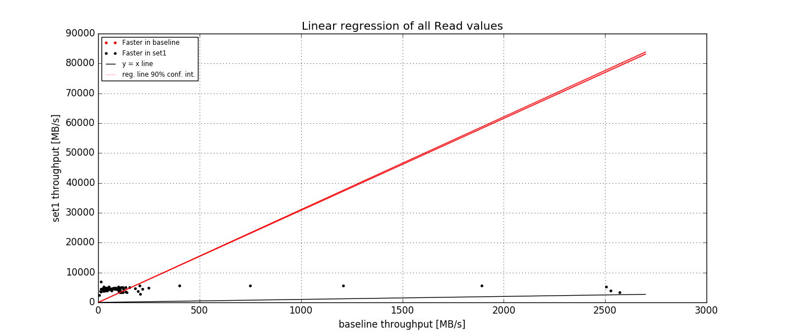
| Regression line |
|---|
| slope | 30.93398 |
| std. error | 0.0832 |
| ci. max 90% | 30.79625 |
| ci. min. 90% | 31.07172 |
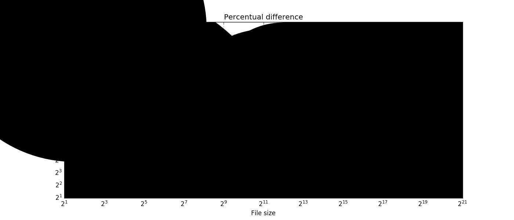
Back on top
Re-read
| Re-read |
File size [kB] |
4 |
8 |
16 |
32 |
64 |
128 |
256 |
512 |
1024 |
2048 |
4096 |
8192 |
16384 |
32768 |
65536 |
131072 |
262144 |
524288 |
1048576 |
|---|
| baseline | first quartile |
3409.29 |
4853.11 |
4508.68 |
3774.66 |
4173.89 |
3889.21 |
3872.27 |
3870.71 |
4014.43 |
4168.22 |
4248.14 |
3935.17 |
3542.9 |
3622.04 |
3626.49 |
3664.68 |
3579.98 |
3675.39 |
3690.85 |
| median |
3409.29 |
6818.58 |
5117.72 |
3936.31 |
4457.8 |
4103.23 |
4099.11 |
4200.14 |
4467.7 |
4406.25 |
4395.62 |
4014.02 |
3683.29 |
3707.18 |
3717.9 |
3757.87 |
3769.18 |
3780.52 |
3795.45 |
| third quartile |
3906.25 |
7812.5 |
5117.72 |
4435.71 |
4872.05 |
4807.6 |
4814.27 |
4693.94 |
4671.73 |
4574.43 |
4550.61 |
4099.37 |
3750.61 |
3761.62 |
3777.12 |
3797.77 |
3808.06 |
3807.6 |
3815.95 |
| mean val. |
3608.07 |
6334.61 |
5040.34 |
4089.57 |
4508.57 |
4306.95 |
4296.26 |
4308.84 |
4443.02 |
4455.63 |
4422.17 |
3991.15 |
3635.35 |
3598.78 |
3604.31 |
3627.42 |
3631.13 |
3646.72 |
3658.97 |
| standard dev. |
272.2 |
1753.22 |
1094.78 |
504.04 |
549.76 |
636.87 |
622.76 |
587.42 |
537.55 |
483.0 |
381.58 |
188.88 |
186.27 |
270.59 |
288.18 |
307.04 |
327.03 |
319.3 |
334.99 |
| ci. min. 90% |
3348.56 |
5318.3 |
4542.47 |
3894.69 |
4320.45 |
4109.38 |
4118.27 |
4152.35 |
4308.38 |
4341.11 |
4336.06 |
3950.41 |
3596.79 |
3531.01 |
3532.12 |
3550.52 |
3549.22 |
3566.75 |
3575.06 |
| ci. max. 90% |
3867.58 |
7350.92 |
5538.22 |
4284.46 |
4696.68 |
4504.51 |
4474.26 |
4465.33 |
4577.67 |
4570.15 |
4508.28 |
4031.9 |
3673.91 |
3666.56 |
3676.49 |
3704.33 |
3713.04 |
3726.7 |
3742.88 |
| geom. mean |
3600.0 |
6076.66 |
4946.33 |
4060.62 |
4475.83 |
4263.13 |
4253.23 |
4272.34 |
4412.26 |
4431.1 |
4406.31 |
3986.57 |
3630.5 |
3587.94 |
3592.28 |
3613.78 |
3615.67 |
3632.03 |
3642.8 |
| minimum |
3409.29 |
3721.23 |
3899.63 |
3466.99 |
3702.3 |
3365.01 |
3041.06 |
3598.37 |
3558.1 |
3697.37 |
3676.95 |
3445.44 |
3170.18 |
2671.54 |
3008.09 |
2988.0 |
2954.75 |
3016.18 |
3004.82 |
| maximum |
3906.25 |
7812.5 |
8395.92 |
5283.95 |
5263.33 |
5472.41 |
5553.73 |
5625.32 |
5654.18 |
5649.63 |
5346.8 |
4321.9 |
3930.29 |
3900.45 |
3927.32 |
3953.54 |
3986.35 |
3988.0 |
3999.72 |
| set1 | first quartile |
3906.25 |
6818.58 |
4508.68 |
4397.55 |
4783.15 |
4450.45 |
4543.11 |
4608.9 |
4855.61 |
4894.73 |
4950.16 |
4920.55 |
4398.04 |
3695.54 |
4393.46 |
4357.44 |
4361.83 |
4386.04 |
4403.71 |
| median |
3906.25 |
6818.58 |
5117.72 |
4814.7 |
4783.15 |
4818.57 |
4904.34 |
4879.41 |
5211.57 |
5391.81 |
5412.34 |
5083.03 |
4588.39 |
4406.53 |
4490.63 |
4507.17 |
4520.98 |
4526.09 |
4527.25 |
| third quartile |
3906.25 |
6818.58 |
5117.72 |
5283.95 |
5159.74 |
5415.88 |
5553.73 |
5576.77 |
5556.8 |
5556.08 |
5517.36 |
5245.7 |
4694.63 |
4544.24 |
4569.13 |
4577.3 |
4563.04 |
4578.42 |
4592.24 |
| mean val. |
3806.86 |
6397.89 |
4786.37 |
4832.93 |
4739.47 |
4841.49 |
4986.17 |
4993.84 |
5132.17 |
5186.68 |
5212.12 |
4984.35 |
4423.43 |
4220.76 |
4329.91 |
4326.23 |
4340.82 |
4350.43 |
4369.42 |
| standard dev. |
222.25 |
1467.92 |
1336.2 |
408.63 |
661.06 |
585.45 |
616.7 |
586.2 |
510.73 |
494.02 |
431.35 |
422.29 |
435.39 |
516.96 |
447.32 |
470.48 |
453.45 |
457.73 |
479.07 |
| ci. min. 90% |
3594.97 |
5546.96 |
4178.71 |
4674.94 |
4513.27 |
4659.88 |
4809.91 |
4837.67 |
5004.24 |
5069.55 |
5114.78 |
4893.25 |
4333.3 |
4091.28 |
4217.87 |
4208.39 |
4227.24 |
4235.78 |
4249.42 |
| ci. max. 90% |
4018.75 |
7248.82 |
5394.03 |
4990.93 |
4965.67 |
5023.11 |
5162.43 |
5150.0 |
5260.09 |
5303.81 |
5309.46 |
5075.45 |
4513.56 |
4350.25 |
4441.96 |
4444.07 |
4454.4 |
4465.08 |
4489.41 |
| geom. mean |
3801.38 |
6207.42 |
4493.9 |
4816.52 |
4680.57 |
4805.45 |
4947.59 |
4958.88 |
5105.95 |
5162.0 |
5193.54 |
4965.42 |
4400.45 |
4184.95 |
4305.26 |
4298.62 |
4315.61 |
4324.79 |
4341.59 |
| minimum |
3409.29 |
3721.23 |
1043.47 |
4397.55 |
2244.27 |
3386.75 |
3681.72 |
3680.47 |
4096.78 |
4023.69 |
4123.38 |
3896.78 |
3360.68 |
2373.53 |
3430.01 |
3108.53 |
3451.19 |
3459.44 |
3446.06 |
| maximum |
3906.25 |
7812.5 |
7442.46 |
5283.95 |
5722.96 |
5710.84 |
5799.46 |
5748.68 |
5715.82 |
5850.59 |
5805.66 |
5750.74 |
4968.89 |
4796.95 |
4813.19 |
4834.9 |
4851.06 |
4853.04 |
5219.69 |
| ttest equality |
SAME |
SAME |
SAME |
DIFF |
SAME |
DIFF |
DIFF |
DIFF |
DIFF |
DIFF |
DIFF |
DIFF |
DIFF |
DIFF |
DIFF |
DIFF |
DIFF |
DIFF |
DIFF |
| baseline set1 difference |
14.58 % |
0.0 % |
0.0 % |
22.32 % |
7.3 % |
17.43 % |
19.64 % |
16.17 % |
16.65 % |
22.37 % |
23.13 % |
26.63 % |
24.57 % |
18.86 % |
20.78 % |
19.94 % |
19.95 % |
19.72 % |
19.28 % |
| ttest p-value |
0.2415 |
0.9312 |
0.5736 |
0.0 |
0.1856 |
0.0013 |
0.0 |
0.0 |
0.0 |
0.0 |
0.0 |
0.0 |
0.0 |
0.0 |
0.0 |
0.0 |
0.0 |
0.0 |
0.0 |
| Re-read |
Block size [kB] |
4 |
8 |
16 |
32 |
64 |
128 |
256 |
512 |
1024 |
2048 |
4096 |
8192 |
16384 |
|---|
| baseline | first quartile |
3510.32 |
3939.53 |
3918.5 |
3877.37 |
3939.49 |
3862.34 |
3746.85 |
3758.13 |
3766.27 |
3772.83 |
3669.02 |
3116.42 |
3013.97 |
| median |
3702.3 |
4208.19 |
4039.02 |
4022.15 |
4003.72 |
3937.91 |
3797.77 |
3797.4 |
3805.5 |
3800.68 |
3690.85 |
3134.28 |
3040.47 |
| third quartile |
3845.14 |
4474.77 |
4436.65 |
4167.44 |
4311.66 |
4584.91 |
4415.51 |
4468.2 |
4535.28 |
4137.28 |
3876.93 |
3259.47 |
3088.91 |
| mean val. |
3820.18 |
4466.21 |
4291.91 |
4015.24 |
4174.8 |
4225.21 |
4128.06 |
4127.88 |
4123.27 |
4097.89 |
3921.95 |
3265.43 |
3083.16 |
| standard dev. |
711.8 |
992.33 |
711.7 |
298.16 |
396.15 |
506.33 |
531.76 |
569.87 |
581.59 |
587.06 |
516.16 |
271.51 |
159.57 |
| ci. min. 90% |
3672.83 |
4252.13 |
4131.3 |
3944.55 |
4098.6 |
4124.31 |
4017.97 |
4004.94 |
3992.02 |
3958.7 |
3792.66 |
3193.1 |
3037.55 |
| ci. max. 90% |
3967.54 |
4680.29 |
4452.51 |
4085.93 |
4250.99 |
4326.11 |
4238.14 |
4250.83 |
4254.51 |
4237.09 |
4051.23 |
3337.76 |
3128.77 |
| geom. mean |
3774.48 |
4381.34 |
4248.3 |
4004.65 |
4157.57 |
4197.04 |
4096.79 |
4092.88 |
4087.23 |
4061.88 |
3893.34 |
3255.36 |
3079.26 |
| minimum |
3170.18 |
3041.06 |
3598.37 |
3466.99 |
3619.91 |
3533.57 |
3545.33 |
3542.9 |
3639.47 |
3694.52 |
3527.13 |
3044.77 |
2671.54 |
| maximum |
7812.5 |
7812.5 |
8395.92 |
5159.74 |
5263.33 |
5472.41 |
5553.73 |
5625.32 |
5654.18 |
5649.63 |
5346.8 |
4006.11 |
3489.65 |
| set1 | first quartile |
4008.14 |
4818.57 |
4476.27 |
4824.77 |
4799.26 |
4699.2 |
4495.65 |
4517.92 |
4530.36 |
4527.68 |
4389.53 |
3589.55 |
3443.53 |
| median |
4164.23 |
4963.78 |
4588.39 |
4914.18 |
5159.74 |
4876.66 |
4561.25 |
4549.03 |
4560.68 |
4548.48 |
4421.63 |
3605.67 |
3457.31 |
| third quartile |
4385.28 |
5120.32 |
4783.39 |
5034.04 |
5550.87 |
5555.5 |
5453.52 |
5495.7 |
5306.71 |
5114.19 |
4504.61 |
3663.38 |
3465.77 |
| mean val. |
4250.91 |
5179.09 |
4626.91 |
4935.45 |
5110.65 |
5108.41 |
4921.6 |
4906.55 |
4817.02 |
4804.72 |
4567.04 |
3663.98 |
3412.92 |
| standard dev. |
677.22 |
734.4 |
577.42 |
259.86 |
455.65 |
441.26 |
493.67 |
492.0 |
521.25 |
407.85 |
305.58 |
132.96 |
191.72 |
| ci. min. 90% |
4110.71 |
5020.65 |
4496.6 |
4873.84 |
5023.01 |
5020.48 |
4819.4 |
4800.4 |
4699.4 |
4708.02 |
4490.5 |
3628.56 |
3358.13 |
| ci. max. 90% |
4391.1 |
5337.53 |
4757.21 |
4997.07 |
5198.29 |
5196.34 |
5023.8 |
5012.69 |
4934.65 |
4901.42 |
4643.58 |
3699.4 |
3467.72 |
| geom. mean |
4204.26 |
5137.16 |
4557.71 |
4928.59 |
5089.12 |
5089.78 |
4897.71 |
4883.0 |
4789.5 |
4788.58 |
4557.69 |
3661.74 |
3406.48 |
| minimum |
2244.27 |
4397.55 |
1043.47 |
3983.95 |
3386.75 |
4545.47 |
4323.08 |
4301.74 |
3693.81 |
4398.04 |
4354.16 |
3550.0 |
2373.53 |
| maximum |
6818.58 |
7812.5 |
5551.22 |
5715.82 |
5850.59 |
5805.66 |
5799.46 |
5748.68 |
5708.04 |
5684.09 |
5428.1 |
4155.96 |
3496.07 |
| ttest equality |
DIFF |
DIFF |
DIFF |
DIFF |
DIFF |
DIFF |
DIFF |
DIFF |
DIFF |
DIFF |
DIFF |
DIFF |
DIFF |
| baseline set1 difference |
12.48 % |
17.96 % |
13.6 % |
22.18 % |
28.87 % |
23.84 % |
20.1 % |
19.79 % |
19.84 % |
19.68 % |
19.8 % |
15.04 % |
13.71 % |
| ttest p-value |
0.0006 |
0.0 |
0.0078 |
0.0 |
0.0 |
0.0 |
0.0 |
0.0 |
0.0 |
0.0 |
0.0 |
0.0 |
0.0 |
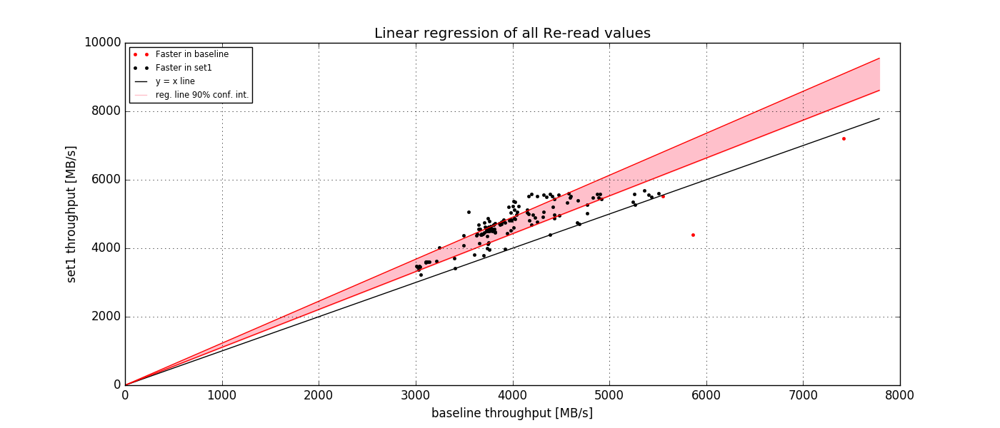
| Regression line |
|---|
| slope | 1.16619 |
| std. error | 0.03632 |
| ci. max 90% | 1.10606 |
| ci. min. 90% | 1.22632 |
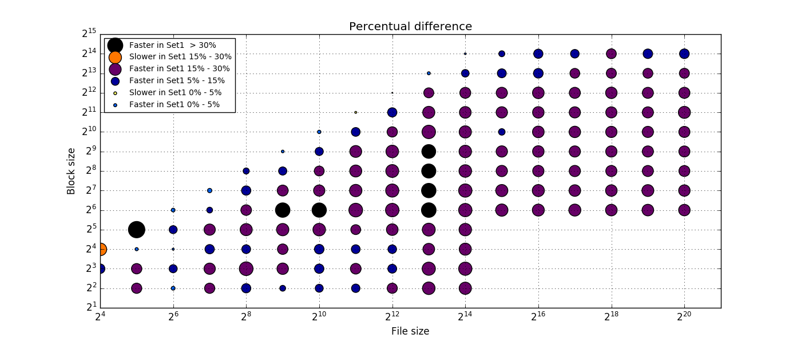
Back on top
Random read
| Random read |
File size [kB] |
4 |
8 |
16 |
32 |
64 |
128 |
256 |
512 |
1024 |
2048 |
4096 |
8192 |
16384 |
32768 |
65536 |
131072 |
262144 |
524288 |
1048576 |
|---|
| baseline | first quartile |
974.91 |
1949.81 |
2539.59 |
3116.95 |
3650.74 |
4008.14 |
4164.23 |
4334.75 |
4630.47 |
4796.76 |
4763.82 |
4585.95 |
4164.68 |
4232.15 |
4264.41 |
4310.18 |
4305.49 |
4340.04 |
4361.83 |
| median |
974.91 |
1949.81 |
2641.97 |
3466.99 |
3923.98 |
4235.87 |
4543.11 |
4714.76 |
5000.33 |
5077.2 |
5202.55 |
4984.49 |
4466.54 |
4426.59 |
4415.87 |
4458.51 |
4467.88 |
4477.36 |
4484.6 |
| third quartile |
974.91 |
1949.81 |
3077.68 |
3466.99 |
4173.89 |
4606.87 |
4859.31 |
5095.68 |
5153.94 |
5411.84 |
5346.81 |
5134.93 |
4572.75 |
4473.65 |
4495.97 |
4506.57 |
4511.96 |
4525.36 |
4539.35 |
| mean val. |
974.91 |
1966.01 |
2675.19 |
3305.21 |
3895.23 |
4229.2 |
4432.09 |
4673.05 |
4840.57 |
5002.04 |
5004.07 |
4805.32 |
4280.18 |
4232.38 |
4237.29 |
4269.05 |
4279.45 |
4289.99 |
4327.12 |
| standard dev. |
0.0 |
251.26 |
384.2 |
353.29 |
405.87 |
421.94 |
521.48 |
556.39 |
516.72 |
488.8 |
473.1 |
462.63 |
441.83 |
408.5 |
412.97 |
426.59 |
426.59 |
425.41 |
394.06 |
| ci. min. 90% |
974.91 |
1820.36 |
2500.47 |
3168.61 |
3756.35 |
4098.31 |
4283.04 |
4524.83 |
4711.14 |
4886.15 |
4897.3 |
4705.51 |
4188.72 |
4130.06 |
4133.85 |
4162.2 |
4172.6 |
4183.44 |
4228.42 |
| ci. max. 90% |
974.91 |
2111.66 |
2849.92 |
3441.81 |
4034.11 |
4360.1 |
4581.14 |
4821.27 |
4969.99 |
5117.94 |
5110.83 |
4905.13 |
4371.65 |
4334.7 |
4340.73 |
4375.9 |
4386.3 |
4396.54 |
4425.82 |
| geom. mean |
974.91 |
1952.03 |
2648.48 |
3286.88 |
3874.2 |
4208.12 |
4400.91 |
4638.85 |
4811.36 |
4976.5 |
4980.15 |
4781.75 |
4256.0 |
4211.46 |
4215.87 |
4246.33 |
4256.79 |
4267.53 |
4308.03 |
| minimum |
974.91 |
1502.73 |
1938.61 |
2631.67 |
3128.0 |
3365.01 |
3521.01 |
3598.37 |
3663.77 |
3697.37 |
3742.57 |
3827.44 |
3378.28 |
3367.67 |
3390.93 |
3398.29 |
3426.76 |
3458.34 |
3450.38 |
| maximum |
974.91 |
2558.86 |
3149.91 |
3995.4 |
4457.8 |
4818.57 |
5119.86 |
5507.14 |
5586.4 |
5574.54 |
5555.73 |
5311.93 |
4852.83 |
4681.66 |
4649.46 |
4696.92 |
4680.76 |
4704.58 |
4705.45 |
| set1 | first quartile |
1387.8 |
2613.05 |
3149.91 |
3466.99 |
4457.8 |
5002.48 |
5107.42 |
5092.67 |
5153.94 |
5296.49 |
5256.34 |
4766.75 |
4294.2 |
3706.26 |
4349.89 |
4334.75 |
4345.61 |
4377.48 |
4388.02 |
| median |
1860.61 |
2775.61 |
3899.63 |
4397.55 |
4783.15 |
5334.48 |
5553.73 |
5492.72 |
5371.76 |
5472.8 |
5465.24 |
5287.66 |
4639.14 |
4351.39 |
4480.21 |
4476.47 |
4494.55 |
4503.23 |
4520.01 |
| third quartile |
1860.61 |
4078.78 |
3899.63 |
4682.46 |
5263.33 |
5695.46 |
5673.94 |
5614.03 |
5586.4 |
5618.42 |
5586.25 |
5450.46 |
4781.94 |
4517.17 |
4533.17 |
4540.14 |
4539.01 |
4554.59 |
4627.68 |
| mean val. |
1697.49 |
3231.85 |
3580.48 |
4270.09 |
4811.67 |
5072.87 |
5280.12 |
5237.04 |
5248.75 |
5338.88 |
5332.75 |
5074.06 |
4416.06 |
4170.21 |
4294.46 |
4295.0 |
4302.99 |
4312.22 |
4472.18 |
| standard dev. |
348.24 |
747.05 |
407.04 |
893.9 |
901.3 |
848.36 |
674.26 |
613.98 |
592.81 |
529.8 |
508.19 |
607.18 |
534.01 |
579.41 |
426.95 |
424.63 |
429.24 |
431.47 |
684.28 |
| ci. min. 90% |
1365.48 |
2798.8 |
3395.37 |
3924.47 |
4503.27 |
4809.7 |
5087.41 |
5073.47 |
5100.27 |
5213.26 |
5218.07 |
4943.06 |
4305.51 |
4025.08 |
4187.52 |
4188.64 |
4195.48 |
4204.15 |
4300.78 |
| ci. max. 90% |
2029.5 |
3664.9 |
3765.59 |
4615.71 |
5120.08 |
5336.05 |
5472.83 |
5400.6 |
5397.23 |
5464.49 |
5447.43 |
5205.05 |
4526.61 |
4315.34 |
4401.4 |
4401.36 |
4410.5 |
4420.29 |
4643.57 |
| geom. mean |
1667.76 |
3157.92 |
3558.07 |
4152.66 |
4722.64 |
4994.9 |
5231.17 |
5197.08 |
5210.29 |
5309.28 |
5305.42 |
5035.12 |
4381.55 |
4117.22 |
4271.82 |
4272.63 |
4280.14 |
4289.15 |
4424.14 |
| minimum |
1279.43 |
2558.86 |
3005.45 |
1663.23 |
2707.94 |
3200.67 |
3330.87 |
3543.65 |
3458.35 |
3853.63 |
3886.49 |
3820.47 |
3362.87 |
1639.5 |
3426.86 |
3447.34 |
3451.02 |
3458.15 |
3465.23 |
| maximum |
2098.98 |
4197.96 |
3899.63 |
5283.95 |
6270.53 |
5971.0 |
5964.4 |
5894.09 |
5951.01 |
5971.37 |
6114.58 |
5975.0 |
5120.15 |
4781.74 |
4692.12 |
4707.25 |
4709.93 |
4713.42 |
6651.3 |
| ttest equality |
DIFF |
DIFF |
DIFF |
DIFF |
DIFF |
DIFF |
DIFF |
DIFF |
DIFF |
DIFF |
DIFF |
DIFF |
SAME |
SAME |
SAME |
SAME |
SAME |
SAME |
SAME |
| baseline set1 difference |
90.85 % |
42.35 % |
47.6 % |
26.84 % |
21.9 % |
25.94 % |
22.25 % |
16.5 % |
7.43 % |
7.79 % |
5.05 % |
6.08 % |
3.86 % |
-1.7 % |
1.46 % |
0.4 % |
0.6 % |
0.58 % |
0.79 % |
| ttest p-value |
0.0017 |
0.0001 |
0.0 |
0.0001 |
0.0 |
0.0 |
0.0 |
0.0 |
0.0008 |
0.0013 |
0.0007 |
0.0074 |
0.1164 |
0.5578 |
0.5201 |
0.7731 |
0.7947 |
0.8062 |
0.2211 |
| Random read |
Block size [kB] |
4 |
8 |
16 |
32 |
64 |
128 |
256 |
512 |
1024 |
2048 |
4096 |
8192 |
16384 |
|---|
| baseline | first quartile |
2800.34 |
3495.0 |
3895.04 |
4340.56 |
4622.23 |
4609.25 |
4431.68 |
4467.17 |
4490.16 |
4481.5 |
4292.0 |
3567.18 |
3427.36 |
| median |
3568.94 |
4318.94 |
4272.03 |
4637.87 |
4682.85 |
4673.28 |
4469.44 |
4505.82 |
4522.95 |
4504.02 |
4331.87 |
3577.83 |
3450.38 |
| third quartile |
3697.37 |
4615.72 |
4528.02 |
4777.78 |
4950.73 |
5085.17 |
5155.17 |
5380.7 |
5261.15 |
4933.0 |
4363.93 |
3614.24 |
3462.74 |
| mean val. |
3149.81 |
4024.75 |
4140.63 |
4538.49 |
4754.38 |
4820.73 |
4757.13 |
4842.4 |
4812.53 |
4721.82 |
4411.98 |
3637.67 |
3452.68 |
| standard dev. |
892.74 |
866.54 |
581.95 |
410.29 |
244.55 |
266.32 |
383.09 |
459.74 |
436.59 |
385.57 |
289.68 |
139.37 |
54.79 |
| ci. min. 90% |
2965.0 |
3837.81 |
4009.31 |
4441.21 |
4707.34 |
4767.66 |
4677.83 |
4743.21 |
4714.01 |
4630.4 |
4339.42 |
3600.55 |
3437.02 |
| ci. max. 90% |
3334.62 |
4211.7 |
4271.95 |
4635.77 |
4801.41 |
4873.8 |
4836.43 |
4941.58 |
4911.05 |
4813.24 |
4484.53 |
3674.8 |
3468.34 |
| geom. mean |
2964.29 |
3910.39 |
4096.58 |
4518.87 |
4748.1 |
4813.58 |
4742.06 |
4821.44 |
4793.78 |
4707.26 |
4403.45 |
3635.17 |
3452.27 |
| minimum |
974.91 |
1949.81 |
2641.97 |
3466.99 |
3843.67 |
4430.83 |
4020.53 |
4232.15 |
4325.22 |
4381.79 |
4051.78 |
3485.85 |
3367.67 |
| maximum |
4130.68 |
5207.71 |
5115.61 |
5280.17 |
5428.1 |
5311.93 |
5406.38 |
5570.84 |
5586.4 |
5523.16 |
5311.25 |
3991.82 |
3633.59 |
| set1 | first quartile |
3466.99 |
4410.72 |
4734.96 |
5283.95 |
4686.78 |
4648.4 |
4464.0 |
4493.99 |
4519.9 |
4510.21 |
4349.89 |
3587.41 |
3448.09 |
| median |
3745.56 |
4984.87 |
5206.36 |
5482.56 |
5649.31 |
5017.86 |
4645.56 |
4599.04 |
4555.51 |
4540.14 |
4387.5 |
3602.47 |
3458.15 |
| third quartile |
3895.51 |
5058.32 |
5318.64 |
5631.89 |
5813.06 |
5673.19 |
5472.37 |
5441.6 |
5440.25 |
5184.71 |
4451.05 |
3636.39 |
3473.1 |
| mean val. |
3498.48 |
4626.97 |
4938.31 |
5394.37 |
5296.14 |
5154.72 |
4924.66 |
4897.28 |
4848.4 |
4843.96 |
4559.62 |
3650.6 |
3409.42 |
| standard dev. |
629.72 |
646.74 |
672.24 |
358.18 |
649.46 |
521.57 |
504.57 |
482.56 |
551.9 |
498.64 |
410.75 |
136.43 |
312.39 |
| ci. min. 90% |
3368.12 |
4487.45 |
4786.61 |
5309.45 |
5171.22 |
5050.79 |
4820.21 |
4793.17 |
4723.85 |
4725.73 |
4456.74 |
3614.26 |
3320.13 |
| ci. max. 90% |
3628.84 |
4766.5 |
5090.01 |
5479.3 |
5421.06 |
5258.66 |
5029.12 |
5001.39 |
4972.94 |
4962.19 |
4662.5 |
3686.95 |
3498.7 |
| geom. mean |
3419.14 |
4572.66 |
4872.82 |
5381.65 |
5252.65 |
5128.93 |
4899.48 |
4874.38 |
4817.46 |
4820.81 |
4543.47 |
3648.25 |
3387.98 |
| minimum |
1279.43 |
2558.86 |
1663.23 |
4087.81 |
2707.94 |
4555.81 |
4308.64 |
4254.15 |
3679.84 |
4427.17 |
4291.83 |
3511.82 |
1639.5 |
| maximum |
4197.96 |
5194.81 |
5553.73 |
5831.72 |
6270.53 |
5971.37 |
5619.36 |
5680.24 |
5699.53 |
6651.3 |
6128.65 |
4151.85 |
3711.62 |
| ttest equality |
DIFF |
DIFF |
DIFF |
DIFF |
DIFF |
DIFF |
DIFF |
SAME |
SAME |
SAME |
DIFF |
SAME |
SAME |
| baseline set1 difference |
4.95 % |
15.42 % |
21.87 % |
18.21 % |
20.64 % |
7.37 % |
3.94 % |
2.07 % |
0.72 % |
0.8 % |
1.28 % |
0.69 % |
0.23 % |
| ttest p-value |
0.0112 |
0.0 |
0.0 |
0.0 |
0.0 |
0.0 |
0.0349 |
0.5248 |
0.7062 |
0.1738 |
0.0519 |
0.6762 |
0.4225 |
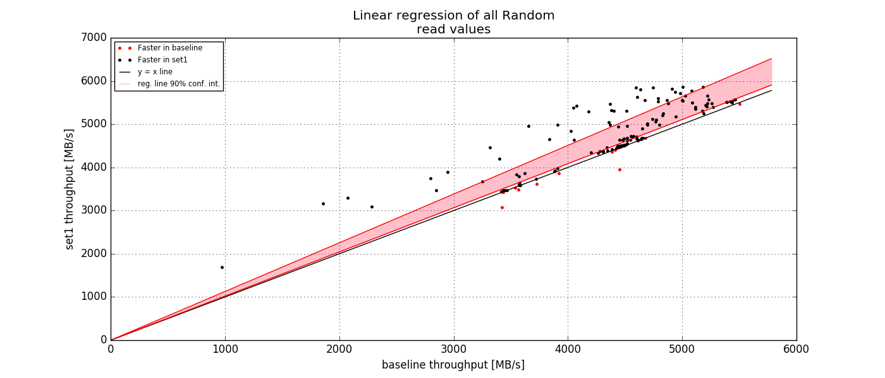
| Regression line |
|---|
| slope | 1.07458 |
| std. error | 0.03185 |
| ci. max 90% | 1.02185 |
| ci. min. 90% | 1.12731 |
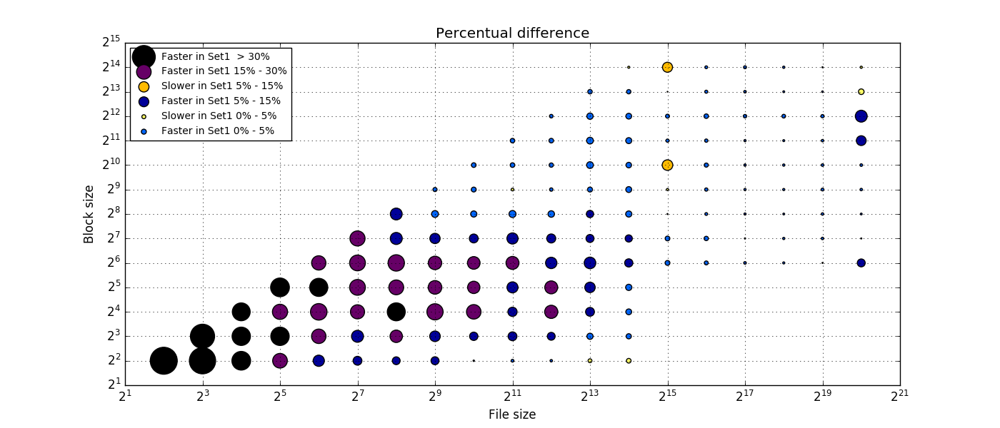
Back on top
Random write
| Random write |
File size [kB] |
4 |
8 |
16 |
32 |
64 |
128 |
256 |
512 |
1024 |
2048 |
4096 |
8192 |
16384 |
32768 |
65536 |
131072 |
262144 |
524288 |
1048576 |
|---|
| baseline | first quartile |
10.88 |
16.15 |
20.02 |
26.31 |
30.53 |
37.47 |
39.03 |
61.01 |
51.39 |
66.61 |
46.03 |
39.04 |
38.13 |
37.75 |
37.48 |
37.37 |
37.29 |
37.23 |
37.01 |
| median |
10.95 |
21.69 |
31.88 |
42.61 |
70.23 |
92.84 |
125.75 |
168.71 |
214.5 |
68.89 |
47.66 |
39.72 |
38.45 |
37.8 |
37.52 |
37.39 |
37.32 |
37.29 |
37.26 |
| third quartile |
15.27 |
32.7 |
62.01 |
75.55 |
124.78 |
193.53 |
362.9 |
386.61 |
434.02 |
72.29 |
48.47 |
40.22 |
38.66 |
37.82 |
37.57 |
37.42 |
37.33 |
37.29 |
37.27 |
| mean val. |
13.16 |
24.12 |
39.18 |
50.56 |
94.29 |
133.18 |
184.45 |
223.18 |
248.07 |
61.47 |
43.59 |
37.84 |
36.68 |
37.49 |
37.38 |
37.31 |
36.73 |
37.03 |
36.61 |
| standard dev. |
3.27 |
9.69 |
22.51 |
31.93 |
80.02 |
118.88 |
166.93 |
187.33 |
193.16 |
19.62 |
9.81 |
6.39 |
5.82 |
1.49 |
1.0 |
0.42 |
2.11 |
0.64 |
2.42 |
| ci. min. 90% |
10.04 |
18.5 |
28.94 |
38.22 |
66.9 |
96.3 |
136.74 |
173.28 |
199.69 |
56.82 |
41.38 |
36.46 |
35.48 |
37.12 |
37.13 |
37.21 |
36.2 |
36.87 |
36.0 |
| ci. max. 90% |
16.28 |
29.74 |
49.41 |
62.91 |
121.67 |
170.06 |
232.16 |
273.09 |
296.45 |
66.12 |
45.81 |
39.21 |
37.89 |
37.87 |
37.63 |
37.42 |
37.26 |
37.19 |
37.22 |
| geom. mean |
12.86 |
22.31 |
33.43 |
41.26 |
64.21 |
83.85 |
108.6 |
132.7 |
148.82 |
56.41 |
41.95 |
37.02 |
35.99 |
37.46 |
37.37 |
37.31 |
36.65 |
37.03 |
36.51 |
| minimum |
10.79 |
11.72 |
14.18 |
14.47 |
15.42 |
15.84 |
15.33 |
16.75 |
16.88 |
17.5 |
17.02 |
16.83 |
16.59 |
30.67 |
30.82 |
35.32 |
26.39 |
34.08 |
23.21 |
| maximum |
17.91 |
36.5 |
81.84 |
118.42 |
318.99 |
408.7 |
532.05 |
546.45 |
606.83 |
77.75 |
49.9 |
42.2 |
39.53 |
38.08 |
37.74 |
37.52 |
37.39 |
37.32 |
37.29 |
| set1 | first quartile |
549.69 |
783.82 |
1043.47 |
1485.65 |
1848.61 |
2018.0 |
2154.14 |
2347.01 |
2611.96 |
2706.17 |
2704.95 |
2654.87 |
2378.83 |
2543.31 |
2643.41 |
2659.29 |
2658.44 |
2670.84 |
2868.24 |
| median |
568.78 |
866.75 |
1430.74 |
1831.05 |
2303.43 |
2699.33 |
3085.81 |
3135.69 |
3334.62 |
3450.96 |
3460.07 |
3156.05 |
2765.8 |
2764.14 |
2836.48 |
2847.61 |
2855.36 |
2869.47 |
3019.59 |
| third quartile |
568.78 |
1066.87 |
1650.56 |
2122.43 |
2736.2 |
3124.38 |
3373.73 |
3427.83 |
3484.2 |
3496.99 |
3512.22 |
3373.39 |
2889.66 |
2833.16 |
2884.98 |
2902.23 |
2915.85 |
2942.05 |
3596.09 |
| mean val. |
579.49 |
914.41 |
1390.94 |
1799.11 |
2231.5 |
2539.07 |
2734.07 |
2853.05 |
2975.19 |
3046.87 |
3086.22 |
2926.18 |
2519.74 |
2701.51 |
2762.96 |
2770.45 |
2776.96 |
2814.02 |
3215.12 |
| standard dev. |
46.28 |
160.6 |
285.9 |
440.22 |
603.85 |
704.05 |
733.8 |
732.24 |
717.76 |
701.04 |
685.62 |
631.47 |
509.71 |
162.12 |
168.0 |
169.09 |
171.76 |
174.92 |
484.18 |
| ci. min. 90% |
535.37 |
821.31 |
1260.92 |
1628.9 |
2024.87 |
2320.66 |
2524.34 |
2657.98 |
2795.41 |
2880.65 |
2931.5 |
2789.95 |
2414.22 |
2660.9 |
2720.88 |
2728.1 |
2733.94 |
2770.21 |
3093.85 |
| ci. max. 90% |
623.61 |
1007.51 |
1520.96 |
1969.32 |
2438.12 |
2757.48 |
2943.8 |
3048.12 |
3154.97 |
3213.08 |
3240.94 |
3062.42 |
2625.26 |
2742.12 |
2805.04 |
2812.81 |
2819.98 |
2857.84 |
3336.4 |
| geom. mean |
578.09 |
902.09 |
1362.51 |
1744.52 |
2144.72 |
2429.36 |
2616.66 |
2738.65 |
2865.67 |
2942.12 |
2986.0 |
2839.11 |
2454.16 |
2696.64 |
2757.79 |
2765.24 |
2771.59 |
2808.55 |
3181.81 |
| minimum |
549.69 |
715.37 |
1043.47 |
1151.72 |
1298.99 |
1373.18 |
1288.48 |
1366.4 |
1404.28 |
1416.56 |
1410.46 |
1331.32 |
1174.22 |
2379.54 |
2429.02 |
2453.14 |
2460.05 |
2469.59 |
2563.91 |
| maximum |
660.49 |
1137.55 |
1733.5 |
2391.58 |
3128.0 |
3386.75 |
3521.01 |
3573.84 |
3647.84 |
3669.87 |
3710.29 |
3719.26 |
2995.15 |
2912.53 |
2935.78 |
2948.35 |
2947.27 |
3147.46 |
4367.65 |
| ttest equality |
DIFF |
DIFF |
DIFF |
DIFF |
DIFF |
DIFF |
DIFF |
DIFF |
DIFF |
DIFF |
DIFF |
DIFF |
DIFF |
DIFF |
DIFF |
DIFF |
DIFF |
DIFF |
DIFF |
| baseline set1 difference |
5096.53 % |
3896.89 % |
4388.18 % |
4196.86 % |
3180.0 % |
2807.46 % |
2354.0 % |
1758.65 % |
1454.6 % |
4909.54 % |
7159.88 % |
7846.67 % |
7092.66 % |
7213.33 % |
7459.22 % |
7516.64 % |
7551.74 % |
7596.02 % |
8003.3 % |
| ttest p-value |
0.0 |
0.0 |
0.0 |
0.0 |
0.0 |
0.0 |
0.0 |
0.0 |
0.0 |
0.0 |
0.0 |
0.0 |
0.0 |
0.0 |
0.0 |
0.0 |
0.0 |
0.0 |
0.0 |
| Random write |
Block size [kB] |
4 |
8 |
16 |
32 |
64 |
128 |
256 |
512 |
1024 |
2048 |
4096 |
8192 |
16384 |
|---|
| baseline | first quartile |
16.31 |
31.11 |
47.97 |
47.91 |
37.35 |
37.39 |
37.37 |
37.37 |
37.32 |
37.29 |
37.31 |
37.29 |
37.3 |
| median |
17.08 |
36.52 |
63.52 |
102.01 |
39.75 |
39.27 |
38.55 |
38.16 |
37.79 |
37.58 |
37.61 |
37.47 |
37.42 |
| third quartile |
17.75 |
38.41 |
69.37 |
122.18 |
193.81 |
319.59 |
74.91 |
54.56 |
46.98 |
40.18 |
38.79 |
37.95 |
37.78 |
| mean val. |
16.72 |
34.57 |
59.42 |
89.36 |
97.74 |
134.45 |
136.51 |
116.15 |
87.18 |
41.91 |
38.86 |
37.8 |
37.55 |
| standard dev. |
1.85 |
5.35 |
13.65 |
36.72 |
82.37 |
148.16 |
174.55 |
166.97 |
145.43 |
11.09 |
2.98 |
0.85 |
0.71 |
| ci. min. 90% |
16.34 |
33.41 |
56.34 |
80.65 |
81.89 |
104.92 |
100.37 |
80.12 |
54.36 |
39.28 |
38.12 |
37.57 |
37.34 |
| ci. max. 90% |
17.11 |
35.72 |
62.5 |
98.06 |
113.58 |
163.97 |
172.64 |
152.17 |
120.0 |
44.54 |
39.61 |
38.02 |
37.75 |
| geom. mean |
16.61 |
34.12 |
57.78 |
80.63 |
69.67 |
77.1 |
71.77 |
62.46 |
51.73 |
40.82 |
38.76 |
37.79 |
37.54 |
| minimum |
10.79 |
22.25 |
37.67 |
38.07 |
23.21 |
36.34 |
34.08 |
36.29 |
28.7 |
28.03 |
36.33 |
36.28 |
34.94 |
| maximum |
21.06 |
44.11 |
92.05 |
141.25 |
318.99 |
461.74 |
541.23 |
546.45 |
606.83 |
75.05 |
47.84 |
39.83 |
39.35 |
| set1 | first quartile |
1161.93 |
1719.87 |
2175.84 |
2707.94 |
2666.99 |
2806.48 |
2855.36 |
2900.9 |
2927.01 |
2925.81 |
2864.17 |
2525.6 |
2447.38 |
| median |
1366.4 |
2008.78 |
2556.76 |
3069.88 |
2985.5 |
3160.99 |
3187.67 |
2947.44 |
2953.11 |
2947.81 |
2895.89 |
2532.27 |
2460.05 |
| third quartile |
1412.41 |
2129.16 |
2655.93 |
3168.12 |
3399.35 |
3524.58 |
3428.9 |
3444.99 |
3479.52 |
3349.55 |
3050.18 |
2570.11 |
2477.36 |
| mean val. |
1228.76 |
1861.55 |
2406.28 |
2927.0 |
3044.38 |
3169.46 |
3146.05 |
3149.24 |
3149.58 |
3122.63 |
3032.36 |
2598.53 |
2547.99 |
| standard dev. |
263.3 |
338.96 |
316.15 |
300.8 |
365.75 |
359.32 |
304.5 |
291.88 |
337.58 |
318.24 |
325.96 |
193.36 |
242.54 |
| ci. min. 90% |
1174.25 |
1788.42 |
2334.94 |
2855.68 |
2974.03 |
3097.85 |
3083.02 |
3086.27 |
3073.4 |
3047.18 |
2950.72 |
2547.02 |
2478.66 |
| ci. max. 90% |
1283.27 |
1934.68 |
2477.63 |
2998.32 |
3114.73 |
3241.06 |
3209.09 |
3212.21 |
3225.76 |
3198.09 |
3114.0 |
2650.04 |
2617.31 |
| geom. mean |
1191.86 |
1824.07 |
2383.52 |
2910.78 |
3022.96 |
3149.47 |
3131.58 |
3136.15 |
3132.19 |
3108.26 |
3017.63 |
2592.44 |
2538.11 |
| minimum |
549.69 |
866.75 |
1567.63 |
2228.9 |
2615.22 |
2763.11 |
2706.78 |
2784.78 |
2539.27 |
2863.02 |
2799.14 |
2420.57 |
2351.17 |
| maximum |
1446.91 |
2171.84 |
2755.05 |
3261.76 |
3874.44 |
3719.26 |
3738.03 |
3835.41 |
4099.17 |
4367.65 |
4246.74 |
3500.96 |
3401.72 |
| ttest equality |
DIFF |
DIFF |
DIFF |
DIFF |
DIFF |
DIFF |
DIFF |
DIFF |
DIFF |
DIFF |
DIFF |
DIFF |
DIFF |
| baseline set1 difference |
7899.48 % |
5399.76 % |
3925.4 % |
2909.44 % |
7410.14 % |
7949.58 % |
8169.38 % |
7622.97 % |
7715.33 % |
7744.09 % |
7600.32 % |
6657.73 % |
6474.51 % |
| ttest p-value |
0.0 |
0.0 |
0.0 |
0.0 |
0.0 |
0.0 |
0.0 |
0.0 |
0.0 |
0.0 |
0.0 |
0.0 |
0.0 |
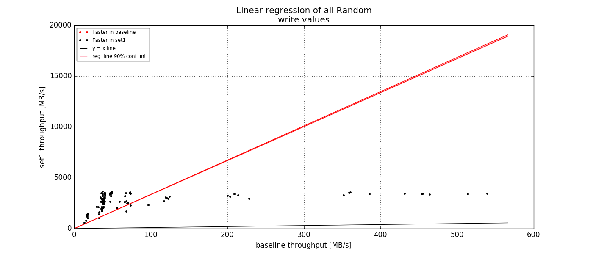
| Regression line |
|---|
| slope | 33.58204 |
| std. error | 0.07859 |
| ci. max 90% | 33.45193 |
| ci. min. 90% | 33.71215 |
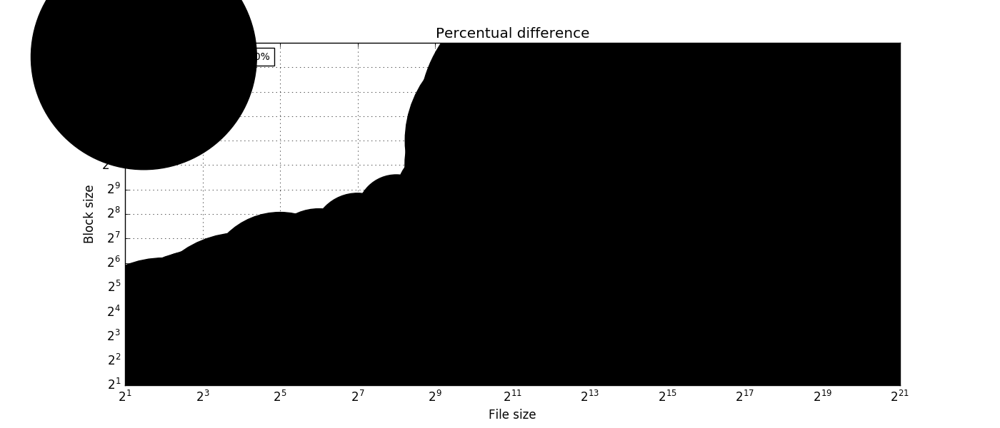
Back on top
Backwards read
| Backwards read |
File size [kB] |
4 |
8 |
16 |
32 |
64 |
128 |
256 |
512 |
1024 |
2048 |
4096 |
8192 |
16384 |
32768 |
65536 |
131072 |
262144 |
524288 |
1048576 |
|---|
| baseline | first quartile |
4.1 |
3.45 |
3.64 |
5.06 |
4.52 |
3.83 |
5.57 |
6.28 |
6.68 |
7.87 |
6.77 |
11.14 |
13.25 |
51.95 |
51.85 |
51.61 |
51.5 |
51.65 |
51.45 |
| median |
4.29 |
5.57 |
6.22 |
8.2 |
8.96 |
13.55 |
13.86 |
24.79 |
25.8 |
42.34 |
49.83 |
51.33 |
52.9 |
71.89 |
71.37 |
71.1 |
71.31 |
71.26 |
70.79 |
| third quartile |
4.31 |
7.73 |
14.47 |
15.78 |
19.26 |
28.55 |
54.55 |
58.94 |
72.34 |
69.98 |
76.79 |
80.6 |
90.46 |
99.98 |
98.8 |
98.19 |
97.93 |
97.79 |
97.62 |
| mean val. |
4.24 |
5.74 |
8.23 |
11.68 |
15.47 |
19.58 |
27.28 |
34.45 |
40.85 |
45.0 |
47.11 |
50.94 |
54.74 |
75.1 |
74.4 |
73.57 |
74.17 |
74.14 |
74.03 |
| standard dev. |
0.15 |
2.53 |
5.45 |
9.59 |
13.97 |
19.95 |
27.0 |
32.12 |
35.63 |
37.21 |
38.4 |
39.44 |
40.15 |
27.45 |
27.24 |
26.42 |
26.55 |
26.48 |
26.42 |
| ci. min. 90% |
4.1 |
4.28 |
5.75 |
7.97 |
10.69 |
13.39 |
19.56 |
25.89 |
31.93 |
36.17 |
38.44 |
42.43 |
46.43 |
68.23 |
67.57 |
66.95 |
67.52 |
67.51 |
67.41 |
| ci. max. 90% |
4.39 |
7.21 |
10.71 |
15.39 |
20.25 |
25.77 |
35.0 |
43.0 |
49.78 |
53.82 |
55.77 |
59.45 |
63.05 |
81.98 |
81.22 |
80.19 |
80.82 |
80.77 |
80.65 |
| geom. mean |
4.24 |
5.23 |
6.67 |
8.39 |
9.94 |
10.85 |
14.16 |
17.72 |
21.28 |
24.13 |
25.08 |
27.36 |
30.36 |
69.1 |
68.29 |
67.79 |
68.4 |
68.4 |
68.34 |
| minimum |
4.08 |
3.13 |
2.92 |
2.56 |
2.12 |
1.56 |
1.57 |
1.54 |
1.57 |
1.55 |
1.6 |
1.58 |
1.55 |
25.51 |
24.36 |
24.47 |
24.89 |
24.67 |
25.32 |
| maximum |
4.43 |
9.41 |
16.78 |
28.67 |
41.98 |
59.38 |
78.39 |
92.23 |
100.9 |
106.17 |
108.61 |
110.01 |
110.84 |
110.73 |
109.29 |
108.56 |
108.23 |
108.06 |
107.98 |
| set1 | first quartile |
382.75 |
644.97 |
1114.45 |
1642.39 |
2303.43 |
2791.89 |
3203.67 |
3549.92 |
3920.62 |
4106.41 |
4312.57 |
4388.84 |
4139.76 |
3695.54 |
4289.83 |
4285.24 |
4333.33 |
4365.44 |
4384.28 |
| median |
382.75 |
657.92 |
1114.45 |
1729.05 |
2387.34 |
3051.63 |
3521.01 |
3821.3 |
4220.45 |
4469.62 |
4453.96 |
4533.89 |
4485.34 |
4341.25 |
4483.05 |
4468.68 |
4489.17 |
4498.17 |
4517.56 |
| third quartile |
391.91 |
657.92 |
1164.76 |
1831.82 |
2707.94 |
3349.12 |
3930.33 |
4162.62 |
4383.65 |
4544.08 |
4579.18 |
4608.14 |
4584.31 |
4493.73 |
4524.61 |
4526.32 |
4536.76 |
4546.31 |
4551.68 |
| mean val. |
388.17 |
653.77 |
1126.19 |
1732.26 |
2420.75 |
3038.89 |
3503.64 |
3841.29 |
4099.16 |
4272.67 |
4397.19 |
4412.79 |
4280.6 |
4191.44 |
4291.06 |
4289.35 |
4303.64 |
4322.95 |
4331.68 |
| standard dev. |
29.87 |
28.35 |
58.61 |
128.08 |
227.63 |
318.21 |
467.98 |
387.93 |
407.62 |
406.53 |
337.58 |
337.13 |
457.87 |
450.19 |
431.84 |
430.22 |
442.06 |
440.56 |
444.54 |
| ci. min. 90% |
359.68 |
637.34 |
1099.54 |
1682.74 |
2342.86 |
2940.17 |
3369.89 |
3737.94 |
3997.06 |
4176.28 |
4321.01 |
4340.06 |
4185.81 |
4078.68 |
4182.89 |
4181.6 |
4192.92 |
4212.6 |
4220.33 |
| ci. max. 90% |
416.65 |
670.21 |
1152.85 |
1781.78 |
2498.64 |
3137.6 |
3637.4 |
3944.63 |
4201.26 |
4369.06 |
4473.37 |
4485.52 |
4375.39 |
4304.2 |
4399.22 |
4397.11 |
4414.37 |
4433.3 |
4443.03 |
| geom. mean |
387.26 |
653.22 |
1124.77 |
1727.79 |
2410.56 |
3022.59 |
3470.77 |
3821.5 |
4077.73 |
4252.22 |
4383.24 |
4399.05 |
4254.55 |
4166.43 |
4267.89 |
4266.43 |
4279.39 |
4298.99 |
4307.3 |
| minimum |
350.04 |
597.89 |
1043.47 |
1564.0 |
2083.72 |
2407.14 |
2194.57 |
3084.93 |
3175.56 |
3384.13 |
3404.6 |
3535.09 |
3316.01 |
3412.97 |
3432.16 |
3443.91 |
3356.76 |
3452.71 |
3462.26 |
| maximum |
433.37 |
715.37 |
1218.01 |
1961.99 |
2824.65 |
3571.3 |
4099.11 |
4426.19 |
4545.16 |
4774.92 |
5121.55 |
4857.47 |
4844.07 |
4729.51 |
4712.14 |
4725.86 |
4735.38 |
4744.08 |
4750.94 |
| ttest equality |
DIFF |
DIFF |
DIFF |
DIFF |
DIFF |
DIFF |
DIFF |
DIFF |
DIFF |
DIFF |
DIFF |
DIFF |
DIFF |
DIFF |
DIFF |
DIFF |
DIFF |
DIFF |
DIFF |
| baseline set1 difference |
8825.94 % |
11702.84 % |
17817.98 % |
20996.8 % |
26530.07 % |
22418.35 % |
25303.45 % |
15311.63 % |
16257.82 % |
10455.94 % |
8837.6 % |
8733.23 % |
8378.85 % |
5938.53 % |
6181.42 % |
6184.84 % |
6195.16 % |
6212.18 % |
6281.63 % |
| ttest p-value |
0.0 |
0.0 |
0.0 |
0.0 |
0.0 |
0.0 |
0.0 |
0.0 |
0.0 |
0.0 |
0.0 |
0.0 |
0.0 |
0.0 |
0.0 |
0.0 |
0.0 |
0.0 |
0.0 |
| Backwards read |
Block size [kB] |
4 |
8 |
16 |
32 |
64 |
128 |
256 |
512 |
1024 |
2048 |
4096 |
8192 |
16384 |
|---|
| baseline | first quartile |
1.62 |
3.24 |
6.53 |
12.92 |
25.17 |
50.03 |
70.0 |
51.72 |
70.83 |
86.86 |
97.85 |
104.4 |
108.06 |
| median |
1.69 |
3.37 |
6.71 |
13.49 |
25.78 |
51.33 |
70.97 |
52.42 |
71.85 |
87.63 |
98.77 |
105.1 |
108.54 |
| third quartile |
3.4 |
6.16 |
10.38 |
18.98 |
27.14 |
52.4 |
71.58 |
59.29 |
78.86 |
94.65 |
102.39 |
107.34 |
110.39 |
| mean val. |
2.64 |
4.83 |
8.97 |
16.35 |
27.41 |
51.63 |
71.26 |
59.55 |
77.58 |
91.76 |
100.9 |
105.53 |
109.0 |
| standard dev. |
1.35 |
2.32 |
3.78 |
5.43 |
4.41 |
2.71 |
2.18 |
13.39 |
10.75 |
6.99 |
4.06 |
4.93 |
1.16 |
| ci. min. 90% |
2.36 |
4.33 |
8.12 |
15.06 |
26.56 |
51.09 |
70.81 |
56.66 |
75.16 |
90.1 |
99.88 |
104.22 |
108.67 |
| ci. max. 90% |
2.92 |
5.33 |
9.83 |
17.64 |
28.26 |
52.17 |
71.72 |
62.44 |
80.01 |
93.41 |
101.92 |
106.84 |
109.34 |
| geom. mean |
2.36 |
4.41 |
8.35 |
15.63 |
27.12 |
51.57 |
71.23 |
58.33 |
76.93 |
91.51 |
100.82 |
105.4 |
109.0 |
| minimum |
1.54 |
3.06 |
6.04 |
12.07 |
23.99 |
47.33 |
67.47 |
51.04 |
70.5 |
86.56 |
97.51 |
78.2 |
107.29 |
| maximum |
6.27 |
11.85 |
18.07 |
29.42 |
41.98 |
59.38 |
78.39 |
92.23 |
100.9 |
106.17 |
108.61 |
110.01 |
110.84 |
| set1 | first quartile |
1564.0 |
2083.82 |
2398.31 |
3069.82 |
4133.17 |
4346.98 |
4403.95 |
4470.48 |
4500.82 |
4474.28 |
4286.41 |
3581.22 |
3433.8 |
| median |
2906.21 |
3544.39 |
3473.22 |
4086.24 |
4658.65 |
4588.45 |
4472.31 |
4503.48 |
4526.32 |
4498.65 |
4334.25 |
3588.51 |
3452.71 |
| third quartile |
3413.05 |
4108.43 |
4310.48 |
4407.95 |
4719.76 |
4664.87 |
4495.02 |
4534.38 |
4560.71 |
4536.58 |
4371.56 |
3614.73 |
3465.09 |
| mean val. |
2444.91 |
3080.35 |
3257.85 |
3719.35 |
4326.78 |
4409.02 |
4407.85 |
4474.58 |
4480.87 |
4510.78 |
4318.42 |
3622.29 |
3444.65 |
| standard dev. |
1126.47 |
1287.68 |
1081.56 |
913.5 |
623.03 |
441.41 |
168.39 |
133.57 |
211.15 |
64.26 |
165.89 |
106.56 |
35.0 |
| ci. min. 90% |
2211.71 |
2802.55 |
3013.79 |
3502.76 |
4206.94 |
4321.06 |
4372.99 |
4445.76 |
4433.22 |
4495.55 |
4276.87 |
3593.9 |
3434.65 |
| ci. max. 90% |
2678.11 |
3358.15 |
3501.92 |
3935.94 |
4446.61 |
4496.99 |
4442.71 |
4503.4 |
4528.52 |
4526.02 |
4359.97 |
3650.67 |
3454.65 |
| geom. mean |
2039.69 |
2689.68 |
3034.95 |
3585.5 |
4274.4 |
4382.63 |
4404.54 |
4472.51 |
4475.51 |
4510.34 |
4314.88 |
3620.81 |
3444.48 |
| minimum |
350.04 |
644.97 |
1114.45 |
1729.05 |
2707.94 |
2597.98 |
3793.65 |
3821.3 |
3673.9 |
4380.7 |
3347.27 |
3418.79 |
3316.01 |
| maximum |
3637.18 |
4592.84 |
4656.58 |
4756.25 |
5121.55 |
4857.47 |
4648.2 |
4656.71 |
4775.88 |
4697.65 |
4540.76 |
4030.17 |
3500.17 |
| ttest equality |
DIFF |
DIFF |
DIFF |
DIFF |
DIFF |
DIFF |
DIFF |
DIFF |
DIFF |
DIFF |
DIFF |
DIFF |
DIFF |
| baseline set1 difference |
172119.62 % |
105208.3 % |
51639.6 % |
30195.8 % |
17971.3 % |
8839.87 % |
6202.07 % |
8491.47 % |
6199.55 % |
5033.46 % |
4288.41 % |
3314.52 % |
3081.14 % |
| ttest p-value |
0.0 |
0.0 |
0.0 |
0.0 |
0.0 |
0.0 |
0.0 |
0.0 |
0.0 |
0.0 |
0.0 |
0.0 |
0.0 |
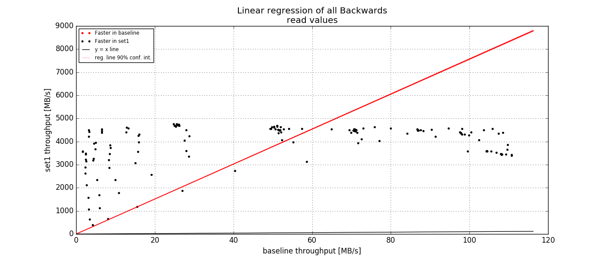
| Regression line |
|---|
| slope | 75.69856 |
| std. error | 0.07718 |
| ci. max 90% | 75.57079 |
| ci. min. 90% | 75.82633 |
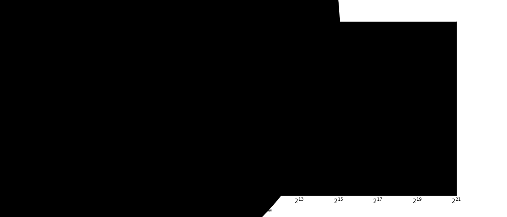
Back on top
Record rewrite
| Record rewrite |
File size [kB] |
4 |
8 |
16 |
32 |
64 |
128 |
256 |
512 |
1024 |
2048 |
4096 |
8192 |
16384 |
32768 |
65536 |
131072 |
262144 |
524288 |
1048576 |
|---|
| baseline | first quartile |
10.73 |
17.78 |
20.78 |
28.46 |
50.16 |
66.13 |
81.02 |
113.79 |
106.76 |
30.47 |
21.03 |
22.94 |
23.22 |
37.7 |
37.46 |
35.42 |
35.33 |
36.24 |
36.22 |
| median |
11.03 |
23.93 |
31.06 |
45.41 |
76.21 |
112.11 |
179.46 |
249.19 |
374.67 |
61.31 |
42.58 |
37.81 |
38.35 |
37.79 |
37.54 |
37.39 |
37.32 |
37.29 |
37.27 |
| third quartile |
16.76 |
36.57 |
58.64 |
72.05 |
149.13 |
204.0 |
377.16 |
463.59 |
511.01 |
71.27 |
47.87 |
40.45 |
39.12 |
38.19 |
37.69 |
37.43 |
37.33 |
37.29 |
37.27 |
| mean val. |
13.6 |
28.3 |
39.88 |
55.34 |
109.89 |
151.01 |
218.54 |
283.86 |
327.8 |
51.53 |
35.33 |
30.96 |
30.12 |
36.28 |
35.82 |
35.65 |
35.45 |
35.43 |
35.42 |
| standard dev. |
3.91 |
15.08 |
24.22 |
35.95 |
79.94 |
115.21 |
154.34 |
193.34 |
197.96 |
23.36 |
15.1 |
12.61 |
11.85 |
3.39 |
3.5 |
3.34 |
3.32 |
3.31 |
3.32 |
| ci. min. 90% |
9.87 |
19.56 |
28.87 |
41.44 |
82.54 |
115.26 |
174.43 |
232.35 |
278.21 |
45.99 |
31.92 |
28.24 |
27.66 |
35.43 |
34.94 |
34.81 |
34.62 |
34.6 |
34.59 |
| ci. max. 90% |
17.33 |
37.04 |
50.9 |
69.24 |
137.24 |
186.75 |
262.66 |
335.36 |
377.38 |
57.07 |
38.74 |
33.68 |
32.57 |
37.13 |
36.69 |
36.48 |
36.28 |
36.26 |
36.25 |
| geom. mean |
13.18 |
24.89 |
33.82 |
46.16 |
85.58 |
116.07 |
163.7 |
208.66 |
240.95 |
43.88 |
30.45 |
26.93 |
26.34 |
36.11 |
35.63 |
35.47 |
35.28 |
35.26 |
35.25 |
| minimum |
10.62 |
11.83 |
15.38 |
17.25 |
31.79 |
38.12 |
37.42 |
42.7 |
31.21 |
10.26 |
6.78 |
5.69 |
5.3 |
27.97 |
27.12 |
27.21 |
27.39 |
27.51 |
27.5 |
| maximum |
18.86 |
57.51 |
81.84 |
154.78 |
268.09 |
412.56 |
523.03 |
602.32 |
608.33 |
77.41 |
50.23 |
42.87 |
39.85 |
38.5 |
37.86 |
37.55 |
37.4 |
37.33 |
37.28 |
| set1 | first quartile |
549.69 |
866.75 |
1155.12 |
1625.11 |
2169.96 |
2511.06 |
2659.3 |
2866.6 |
3214.5 |
3231.21 |
3281.11 |
3098.61 |
2741.17 |
3858.18 |
3938.21 |
3956.84 |
3952.51 |
3988.5 |
3917.83 |
| median |
568.78 |
984.08 |
1430.74 |
1906.57 |
2626.54 |
3131.49 |
3373.73 |
3447.53 |
3651.01 |
3762.88 |
3875.71 |
3904.26 |
3908.31 |
4099.9 |
4142.15 |
4140.9 |
4153.41 |
4160.37 |
4159.07 |
| third quartile |
568.78 |
998.85 |
1567.63 |
2086.94 |
2985.5 |
3386.75 |
3815.9 |
3846.79 |
3983.93 |
3987.36 |
4052.67 |
4077.76 |
4121.46 |
4227.22 |
4275.48 |
4258.42 |
4259.99 |
4282.4 |
4284.57 |
| mean val. |
574.37 |
934.69 |
1363.71 |
1839.93 |
2490.3 |
2884.2 |
3168.41 |
3304.6 |
3424.64 |
3508.79 |
3592.1 |
3565.66 |
3527.85 |
3842.02 |
3879.07 |
3893.37 |
3903.51 |
3915.46 |
3937.67 |
| standard dev. |
35.16 |
108.22 |
204.13 |
344.97 |
570.41 |
693.22 |
774.6 |
792.67 |
806.3 |
782.12 |
778.74 |
797.8 |
851.4 |
661.1 |
643.53 |
631.95 |
631.65 |
636.21 |
599.35 |
| ci. min. 90% |
540.85 |
871.96 |
1270.88 |
1706.55 |
2295.12 |
2669.15 |
2947.01 |
3093.43 |
3222.68 |
3323.35 |
3416.37 |
3393.55 |
3351.6 |
3676.43 |
3717.88 |
3735.08 |
3745.3 |
3756.1 |
3787.55 |
| ci. max. 90% |
607.89 |
997.43 |
1456.54 |
1973.31 |
2685.48 |
3099.24 |
3389.8 |
3515.77 |
3626.6 |
3694.23 |
3767.83 |
3737.78 |
3704.11 |
4007.61 |
4040.25 |
4051.65 |
4061.72 |
4074.81 |
4087.79 |
| geom. mean |
573.54 |
928.87 |
1348.89 |
1805.83 |
2417.82 |
2783.64 |
3053.37 |
3189.12 |
3305.57 |
3397.33 |
3483.57 |
3455.1 |
3405.25 |
3777.12 |
3818.54 |
3835.29 |
3845.72 |
3856.85 |
3886.45 |
| minimum |
549.69 |
765.5 |
1043.47 |
1300.24 |
1525.82 |
1373.18 |
1515.71 |
1638.65 |
1623.3 |
1643.28 |
1661.96 |
1688.12 |
1651.67 |
2529.03 |
2619.73 |
2644.79 |
2671.26 |
2671.62 |
2661.85 |
| maximum |
634.9 |
1099.39 |
1567.63 |
2228.9 |
3128.0 |
3571.3 |
3974.8 |
4170.9 |
4402.06 |
4515.33 |
4494.53 |
4522.28 |
4555.99 |
4564.33 |
4579.65 |
4569.94 |
4578.37 |
4569.22 |
4576.76 |
| ttest equality |
DIFF |
DIFF |
DIFF |
DIFF |
DIFF |
DIFF |
DIFF |
DIFF |
DIFF |
DIFF |
DIFF |
DIFF |
DIFF |
DIFF |
DIFF |
DIFF |
DIFF |
DIFF |
DIFF |
| baseline set1 difference |
5054.68 % |
4012.54 % |
4506.0 % |
4098.51 % |
3346.54 % |
2693.17 % |
1779.9 % |
1283.5 % |
874.47 % |
6037.12 % |
9001.97 % |
10226.13 % |
10090.49 % |
10748.04 % |
10933.38 % |
10975.56 % |
11029.37 % |
11058.25 % |
11059.72 % |
| ttest p-value |
0.0 |
0.0 |
0.0 |
0.0 |
0.0 |
0.0 |
0.0 |
0.0 |
0.0 |
0.0 |
0.0 |
0.0 |
0.0 |
0.0 |
0.0 |
0.0 |
0.0 |
0.0 |
0.0 |
| Record rewrite |
Block size [kB] |
4 |
8 |
16 |
32 |
64 |
128 |
256 |
512 |
1024 |
2048 |
4096 |
8192 |
16384 |
|---|
| baseline | first quartile |
10.39 |
17.43 |
21.03 |
28.44 |
27.79 |
31.83 |
37.53 |
37.36 |
37.35 |
37.32 |
37.32 |
37.3 |
37.29 |
| median |
18.86 |
36.44 |
66.22 |
117.73 |
30.78 |
34.64 |
39.85 |
38.9 |
37.89 |
37.78 |
37.49 |
37.45 |
37.41 |
| third quartile |
41.09 |
70.49 |
106.6 |
154.76 |
225.24 |
353.74 |
71.51 |
55.36 |
47.83 |
40.26 |
38.46 |
38.06 |
37.71 |
| mean val. |
23.51 |
43.46 |
70.55 |
112.22 |
112.3 |
147.23 |
146.57 |
130.15 |
85.02 |
42.19 |
38.78 |
37.93 |
37.56 |
| standard dev. |
15.06 |
28.5 |
47.02 |
81.21 |
121.59 |
179.75 |
192.13 |
197.59 |
136.58 |
10.4 |
2.98 |
1.01 |
0.56 |
| ci. min. 90% |
20.39 |
37.31 |
59.94 |
92.97 |
88.91 |
111.41 |
106.8 |
87.52 |
54.2 |
39.72 |
38.04 |
37.67 |
37.4 |
| ci. max. 90% |
26.62 |
49.61 |
81.17 |
131.48 |
135.68 |
183.05 |
186.34 |
172.78 |
115.85 |
44.65 |
39.53 |
38.2 |
37.72 |
| geom. mean |
18.19 |
33.34 |
53.76 |
80.22 |
63.43 |
72.35 |
74.02 |
64.37 |
52.11 |
41.26 |
38.68 |
37.92 |
37.56 |
| minimum |
5.3 |
9.81 |
16.23 |
23.04 |
27.12 |
31.33 |
37.28 |
34.3 |
35.33 |
36.78 |
36.04 |
36.78 |
36.47 |
| maximum |
46.78 |
96.71 |
180.9 |
277.17 |
425.01 |
608.33 |
552.84 |
602.32 |
561.43 |
74.46 |
47.77 |
40.65 |
39.27 |
| set1 | first quartile |
1300.24 |
2076.9 |
2722.07 |
3386.75 |
4057.92 |
4285.18 |
3993.04 |
3950.36 |
3946.37 |
3943.38 |
3744.54 |
2765.18 |
2587.44 |
| median |
1636.61 |
2600.29 |
3164.05 |
3773.22 |
4333.63 |
4489.11 |
4172.37 |
4081.06 |
4112.11 |
4105.33 |
3931.02 |
2842.73 |
2664.23 |
| third quartile |
1677.69 |
2677.59 |
3249.71 |
3898.21 |
4381.6 |
4528.57 |
4255.33 |
4148.63 |
4162.81 |
4142.55 |
3986.54 |
2862.06 |
2686.45 |
| mean val. |
1432.74 |
2297.64 |
2884.33 |
3523.28 |
4148.93 |
4335.27 |
4072.13 |
3988.83 |
4001.15 |
4014.8 |
3841.51 |
2830.6 |
2630.24 |
| standard dev. |
356.57 |
556.95 |
551.21 |
542.21 |
380.85 |
334.7 |
260.92 |
237.48 |
231.84 |
193.31 |
203.43 |
111.23 |
101.32 |
| ci. min. 90% |
1358.92 |
2177.49 |
2759.94 |
3394.73 |
4075.67 |
4268.58 |
4018.12 |
3937.59 |
3948.83 |
3968.96 |
3790.55 |
2800.96 |
2601.28 |
| ci. max. 90% |
1506.55 |
2417.8 |
3008.72 |
3651.84 |
4222.18 |
4401.97 |
4126.14 |
4040.06 |
4053.47 |
4060.63 |
3892.46 |
2860.23 |
2659.2 |
| geom. mean |
1372.11 |
2208.5 |
2818.8 |
3473.18 |
4129.25 |
4321.09 |
4063.3 |
3981.38 |
3994.16 |
4010.0 |
3836.0 |
2828.53 |
2628.3 |
| minimum |
549.69 |
969.3 |
1567.63 |
2054.24 |
2985.5 |
3280.78 |
3330.87 |
3164.05 |
3377.58 |
3466.64 |
3316.44 |
2633.07 |
2380.27 |
| maximum |
1715.25 |
2741.17 |
3343.11 |
3929.45 |
4445.68 |
4579.65 |
4284.98 |
4410.98 |
4182.53 |
4201.89 |
4074.74 |
3163.46 |
2860.95 |
| ttest equality |
DIFF |
DIFF |
DIFF |
DIFF |
DIFF |
DIFF |
DIFF |
DIFF |
DIFF |
DIFF |
DIFF |
DIFF |
DIFF |
| baseline set1 difference |
8578.84 % |
7036.12 % |
4678.25 % |
3105.05 % |
13978.34 % |
12858.9 % |
10370.55 % |
10391.84 % |
10753.42 % |
10767.04 % |
10385.45 % |
7491.58 % |
7022.6 % |
| ttest p-value |
0.0 |
0.0 |
0.0 |
0.0 |
0.0 |
0.0 |
0.0 |
0.0 |
0.0 |
0.0 |
0.0 |
0.0 |
0.0 |
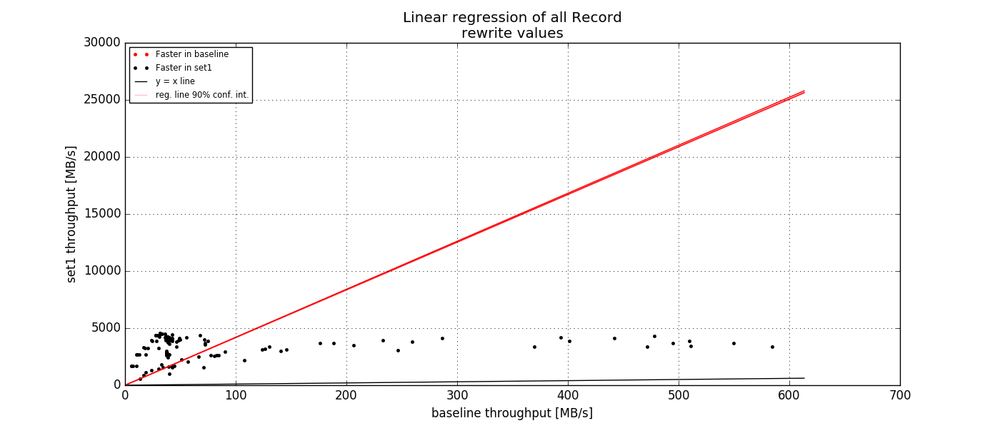
| Regression line |
|---|
| slope | 41.9166 |
| std. error | 0.08306 |
| ci. max 90% | 41.77909 |
| ci. min. 90% | 42.0541 |
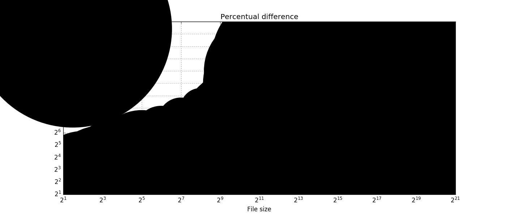
Back on top
Strided Read
| Strided Read |
File size [kB] |
4 |
8 |
16 |
32 |
64 |
128 |
256 |
512 |
1024 |
2048 |
4096 |
8192 |
16384 |
32768 |
65536 |
131072 |
262144 |
524288 |
1048576 |
|---|
| baseline | first quartile |
4.06 |
5.25 |
9.47 |
17.28 |
29.82 |
46.66 |
23.33 |
23.72 |
21.67 |
19.37 |
20.36 |
27.8 |
29.9 |
53.71 |
53.2 |
52.76 |
52.65 |
52.74 |
52.53 |
| median |
4.25 |
6.58 |
9.98 |
17.82 |
30.61 |
48.19 |
78.94 |
91.07 |
98.71 |
88.43 |
68.37 |
65.78 |
55.76 |
76.84 |
78.32 |
78.13 |
77.44 |
77.73 |
76.67 |
| third quartile |
4.84 |
8.1 |
14.89 |
20.44 |
33.16 |
51.38 |
96.56 |
114.49 |
112.84 |
147.76 |
217.59 |
202.84 |
192.24 |
364.98 |
382.71 |
103.35 |
100.55 |
99.1 |
98.37 |
| mean val. |
4.44 |
6.72 |
11.6 |
19.31 |
32.7 |
44.25 |
67.67 |
87.74 |
105.12 |
107.49 |
127.03 |
147.83 |
173.45 |
276.03 |
284.65 |
253.3 |
191.41 |
77.74 |
77.1 |
| standard dev. |
0.46 |
1.66 |
3.53 |
5.94 |
4.79 |
15.85 |
35.52 |
66.69 |
106.82 |
103.21 |
137.81 |
171.23 |
232.05 |
315.71 |
363.31 |
363.42 |
336.77 |
25.33 |
24.36 |
| ci. min. 90% |
4.01 |
5.76 |
10.0 |
17.01 |
31.06 |
39.33 |
57.52 |
69.97 |
78.36 |
83.02 |
95.93 |
110.89 |
125.41 |
196.96 |
193.65 |
162.27 |
107.06 |
71.39 |
71.0 |
| ci. max. 90% |
4.88 |
7.69 |
13.2 |
21.61 |
34.34 |
49.17 |
77.83 |
105.51 |
131.87 |
131.97 |
158.13 |
184.77 |
221.49 |
355.11 |
375.65 |
344.32 |
275.77 |
84.08 |
83.21 |
| geom. mean |
4.43 |
6.54 |
11.11 |
18.4 |
32.4 |
38.92 |
51.35 |
56.6 |
58.66 |
59.68 |
61.18 |
65.65 |
68.09 |
146.71 |
136.4 |
117.16 |
95.48 |
73.39 |
73.03 |
| minimum |
4.05 |
4.88 |
5.83 |
8.74 |
28.18 |
6.48 |
8.96 |
8.49 |
8.57 |
7.0 |
6.01 |
6.14 |
5.38 |
42.27 |
40.08 |
39.7 |
39.9 |
38.83 |
39.3 |
| maximum |
5.02 |
8.99 |
17.29 |
31.41 |
42.89 |
60.79 |
100.36 |
204.17 |
369.84 |
359.5 |
578.03 |
551.77 |
781.21 |
992.07 |
1136.06 |
1119.8 |
1142.39 |
114.62 |
111.2 |
| set1 | first quartile |
484.65 |
866.75 |
1480.87 |
2228.9 |
2985.5 |
3596.31 |
3937.84 |
4019.07 |
4133.11 |
4475.25 |
4530.39 |
4723.28 |
4395.45 |
3788.27 |
4458.33 |
4331.04 |
4348.93 |
4360.34 |
4393.11 |
| median |
499.42 |
969.3 |
1567.63 |
2228.9 |
3091.11 |
3804.54 |
4248.59 |
4463.87 |
4589.93 |
4967.19 |
5043.04 |
5171.56 |
4787.74 |
4577.25 |
4515.33 |
4488.56 |
4489.81 |
4500.27 |
4533.94 |
| third quartile |
499.42 |
969.3 |
1567.63 |
2391.58 |
3128.0 |
4422.82 |
4390.92 |
4739.1 |
4953.09 |
5245.99 |
5282.83 |
5355.17 |
4953.85 |
4737.18 |
4643.75 |
4547.41 |
4546.17 |
4555.68 |
4636.0 |
| mean val. |
493.52 |
877.3 |
1537.71 |
2333.19 |
3142.28 |
3878.91 |
4166.72 |
4435.25 |
4671.58 |
4911.57 |
4929.95 |
4933.23 |
4589.99 |
4440.56 |
4399.95 |
4300.4 |
4294.53 |
4314.96 |
4384.61 |
| standard dev. |
8.09 |
189.12 |
84.38 |
157.81 |
224.88 |
658.48 |
486.53 |
600.71 |
768.52 |
744.07 |
564.79 |
574.71 |
646.81 |
640.45 |
520.46 |
441.92 |
449.88 |
432.64 |
429.17 |
| ci. min. 90% |
485.8 |
767.67 |
1499.33 |
2272.18 |
3065.33 |
3674.64 |
4027.66 |
4275.22 |
4479.08 |
4735.15 |
4802.5 |
4809.24 |
4456.09 |
4280.14 |
4269.59 |
4189.71 |
4181.85 |
4206.59 |
4277.12 |
| ci. max. 90% |
501.23 |
986.93 |
1576.08 |
2394.21 |
3219.22 |
4083.18 |
4305.78 |
4595.28 |
4864.07 |
5087.99 |
5057.4 |
5057.21 |
4723.89 |
4600.97 |
4530.31 |
4411.09 |
4407.22 |
4423.32 |
4492.11 |
| geom. mean |
493.46 |
848.21 |
1535.55 |
2328.35 |
3134.94 |
3822.67 |
4137.18 |
4395.13 |
4610.77 |
4855.8 |
4896.15 |
4897.16 |
4541.65 |
4394.09 |
4367.54 |
4276.01 |
4269.18 |
4291.78 |
4361.96 |
| minimum |
484.65 |
356.93 |
1400.17 |
2228.9 |
2855.42 |
2705.22 |
3160.21 |
3351.12 |
3391.24 |
3436.82 |
3593.47 |
3698.76 |
3347.27 |
3390.47 |
3361.5 |
3356.77 |
3373.44 |
3453.37 |
3464.02 |
| maximum |
499.42 |
969.3 |
1733.5 |
2631.67 |
3650.74 |
5002.48 |
5119.86 |
5550.87 |
6337.67 |
6621.86 |
5907.87 |
5722.3 |
5524.82 |
5512.29 |
5213.78 |
4741.43 |
4722.99 |
4697.59 |
4818.96 |
| ttest equality |
DIFF |
DIFF |
DIFF |
DIFF |
DIFF |
DIFF |
DIFF |
DIFF |
DIFF |
DIFF |
DIFF |
DIFF |
DIFF |
DIFF |
DIFF |
DIFF |
DIFF |
DIFF |
DIFF |
| baseline set1 difference |
11651.17 % |
14641.82 % |
15611.62 % |
12406.61 % |
9999.55 % |
7795.13 % |
5282.35 % |
4801.8 % |
4549.69 % |
5517.29 % |
7276.09 % |
7761.58 % |
8485.92 % |
5856.87 % |
5665.42 % |
5645.14 % |
5697.47 % |
5689.87 % |
5813.74 % |
| ttest p-value |
0.0 |
0.0 |
0.0 |
0.0 |
0.0 |
0.0 |
0.0 |
0.0 |
0.0 |
0.0 |
0.0 |
0.0 |
0.0 |
0.0 |
0.0 |
0.0 |
0.0 |
0.0 |
0.0 |
| Strided Read |
Block size [kB] |
4 |
8 |
16 |
32 |
64 |
128 |
256 |
512 |
1024 |
2048 |
4096 |
8192 |
16384 |
|---|
| baseline | first quartile |
7.2 |
6.74 |
18.73 |
30.58 |
40.53 |
51.42 |
77.05 |
52.85 |
71.24 |
87.89 |
100.47 |
109.34 |
111.19 |
| median |
8.59 |
9.41 |
20.29 |
33.19 |
43.53 |
57.56 |
78.17 |
53.76 |
74.13 |
98.27 |
108.57 |
150.16 |
202.45 |
| third quartile |
10.53 |
17.85 |
30.96 |
48.29 |
59.05 |
76.14 |
91.78 |
111.73 |
217.59 |
286.54 |
338.23 |
438.43 |
678.71 |
| mean val. |
10.96 |
15.56 |
31.16 |
56.35 |
78.45 |
88.95 |
120.91 |
128.41 |
187.2 |
250.86 |
309.97 |
345.33 |
390.49 |
| standard dev. |
6.91 |
12.95 |
23.55 |
48.57 |
85.19 |
79.11 |
105.92 |
142.54 |
214.77 |
283.48 |
339.88 |
346.64 |
364.11 |
| ci. min. 90% |
9.53 |
12.77 |
25.85 |
44.83 |
62.06 |
73.19 |
98.98 |
97.66 |
138.73 |
183.64 |
224.83 |
252.99 |
286.42 |
| ci. max. 90% |
12.39 |
18.35 |
36.48 |
67.86 |
94.84 |
104.72 |
142.83 |
159.16 |
235.66 |
318.07 |
395.1 |
437.68 |
494.56 |
| geom. mean |
9.47 |
12.03 |
25.8 |
44.89 |
58.7 |
72.32 |
99.71 |
89.07 |
124.27 |
162.59 |
197.96 |
227.12 |
261.6 |
| minimum |
4.05 |
5.38 |
8.74 |
25.06 |
38.83 |
49.2 |
70.5 |
52.43 |
70.51 |
86.84 |
98.23 |
105.74 |
108.58 |
| maximum |
33.16 |
53.7 |
99.96 |
204.17 |
369.84 |
359.5 |
578.03 |
551.77 |
781.21 |
992.07 |
1136.06 |
1119.8 |
1142.39 |
| set1 | first quartile |
2228.9 |
3251.49 |
3128.0 |
4248.8 |
4641.62 |
4631.96 |
4458.33 |
4498.65 |
4524.37 |
4516.68 |
4391.51 |
3593.41 |
3380.76 |
| median |
3208.56 |
4113.69 |
4080.83 |
4508.65 |
4700.01 |
4703.95 |
4533.95 |
4566.09 |
4567.21 |
4555.12 |
4483.72 |
3650.9 |
3405.71 |
| third quartile |
3491.17 |
4458.84 |
4469.25 |
4870.54 |
4944.56 |
5425.31 |
5298.51 |
4970.82 |
5145.13 |
5227.32 |
5009.02 |
3709.56 |
3456.33 |
| mean val. |
2747.49 |
3645.52 |
3797.0 |
4253.92 |
4632.92 |
4997.93 |
4826.33 |
4763.05 |
4760.51 |
4826.86 |
4667.71 |
3700.76 |
3416.84 |
| standard dev. |
1090.71 |
1240.5 |
1043.63 |
887.0 |
642.68 |
670.29 |
503.1 |
363.84 |
437.73 |
388.04 |
328.24 |
188.57 |
42.9 |
| ci. min. 90% |
2521.7 |
3377.9 |
3561.49 |
4043.62 |
4509.31 |
4864.36 |
4722.18 |
4684.55 |
4661.73 |
4734.85 |
4585.49 |
3650.52 |
3404.58 |
| ci. max. 90% |
2973.28 |
3913.14 |
4032.51 |
4464.23 |
4756.53 |
5131.5 |
4930.48 |
4841.54 |
4859.29 |
4918.86 |
4749.92 |
3750.99 |
3429.11 |
| geom. mean |
2374.9 |
3321.06 |
3611.71 |
4138.56 |
4581.12 |
4954.43 |
4801.74 |
4749.89 |
4740.76 |
4812.04 |
4656.65 |
3696.5 |
3416.58 |
| minimum |
356.93 |
866.75 |
1531.01 |
2228.9 |
2705.22 |
3571.3 |
4164.23 |
4296.51 |
3784.32 |
4455.38 |
4305.38 |
3509.99 |
3347.27 |
| maximum |
3831.46 |
5002.48 |
5119.86 |
5420.04 |
6252.64 |
6621.86 |
5907.87 |
5529.0 |
5524.82 |
5512.29 |
5226.18 |
4616.37 |
3499.13 |
| ttest equality |
DIFF |
DIFF |
DIFF |
DIFF |
DIFF |
DIFF |
DIFF |
DIFF |
DIFF |
DIFF |
DIFF |
DIFF |
DIFF |
| baseline set1 difference |
37252.96 % |
43615.46 % |
20017.34 % |
13483.78 % |
10697.59 % |
8071.7 % |
5699.91 % |
8393.13 % |
6060.69 % |
4535.15 % |
4029.64 % |
2331.36 % |
1582.29 % |
| ttest p-value |
0.0 |
0.0 |
0.0 |
0.0 |
0.0 |
0.0 |
0.0 |
0.0 |
0.0 |
0.0 |
0.0 |
0.0 |
0.0 |
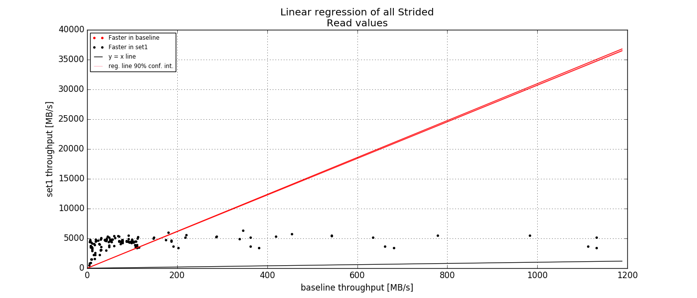
| Regression line |
|---|
| slope | 30.8352 |
| std. error | 0.08163 |
| ci. max 90% | 30.70006 |
| ci. min. 90% | 30.97034 |
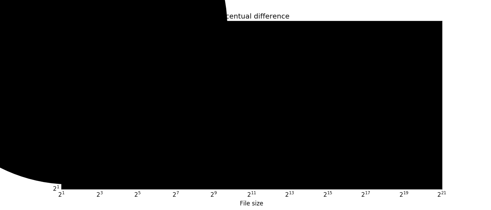
Back on top
Fwrite
| Fwrite |
File size [kB] |
4 |
8 |
16 |
32 |
64 |
128 |
256 |
512 |
1024 |
2048 |
4096 |
8192 |
16384 |
32768 |
65536 |
131072 |
262144 |
524288 |
1048576 |
|---|
| baseline | first quartile |
13.51 |
26.59 |
26.25 |
30.18 |
48.07 |
54.77 |
75.77 |
105.31 |
85.11 |
68.91 |
47.51 |
39.92 |
38.55 |
38.13 |
37.67 |
37.47 |
37.36 |
37.29 |
37.27 |
| median |
18.77 |
29.35 |
45.3 |
61.6 |
92.73 |
108.75 |
159.22 |
200.07 |
229.2 |
73.4 |
50.24 |
40.96 |
38.97 |
39.02 |
38.14 |
37.66 |
37.42 |
37.34 |
37.29 |
| third quartile |
19.84 |
32.74 |
71.68 |
100.22 |
230.6 |
318.48 |
419.64 |
511.07 |
506.57 |
93.39 |
56.11 |
44.7 |
42.13 |
43.19 |
40.04 |
38.59 |
37.9 |
37.57 |
37.36 |
| mean val. |
17.01 |
30.1 |
50.04 |
70.83 |
131.84 |
173.74 |
251.69 |
312.73 |
325.63 |
154.82 |
59.57 |
45.81 |
43.81 |
44.54 |
40.08 |
38.39 |
37.44 |
37.22 |
36.89 |
| standard dev. |
4.74 |
4.73 |
23.57 |
47.89 |
96.58 |
142.03 |
220.89 |
270.06 |
269.52 |
232.87 |
25.91 |
12.1 |
11.76 |
11.65 |
3.92 |
1.64 |
1.53 |
1.39 |
1.66 |
| ci. min. 90% |
12.49 |
27.36 |
39.32 |
52.31 |
98.8 |
129.68 |
188.56 |
240.79 |
258.12 |
99.61 |
53.73 |
43.2 |
41.38 |
41.62 |
39.1 |
37.97 |
37.05 |
36.87 |
36.48 |
| ci. max. 90% |
21.53 |
32.84 |
60.76 |
89.34 |
164.89 |
217.8 |
314.83 |
384.68 |
393.14 |
210.03 |
65.42 |
48.42 |
46.25 |
47.45 |
41.07 |
38.8 |
37.82 |
37.57 |
37.31 |
| geom. mean |
16.43 |
29.77 |
44.49 |
55.44 |
96.63 |
119.53 |
166.22 |
207.18 |
217.14 |
95.95 |
56.1 |
44.67 |
42.71 |
43.4 |
39.92 |
38.35 |
37.4 |
37.19 |
36.85 |
| minimum |
10.73 |
24.03 |
20.46 |
17.92 |
24.06 |
29.4 |
40.37 |
41.83 |
43.74 |
35.8 |
34.9 |
36.1 |
34.07 |
37.79 |
37.56 |
35.56 |
29.61 |
28.71 |
29.47 |
| maximum |
22.21 |
38.11 |
86.82 |
169.82 |
325.32 |
516.64 |
704.31 |
994.0 |
938.99 |
936.77 |
143.28 |
85.67 |
83.59 |
75.6 |
50.25 |
42.76 |
39.79 |
38.48 |
37.86 |
| set1 | first quartile |
391.91 |
866.75 |
946.84 |
1407.49 |
1525.82 |
1834.42 |
1856.87 |
2112.94 |
2283.48 |
2335.65 |
2364.92 |
2375.47 |
2079.81 |
2076.84 |
2028.4 |
1961.54 |
1940.12 |
1933.61 |
2010.95 |
| median |
391.91 |
866.75 |
1430.74 |
1642.39 |
2019.51 |
2337.67 |
2629.29 |
2692.8 |
2718.62 |
2757.44 |
2826.92 |
2665.32 |
2297.48 |
2167.89 |
2133.76 |
2127.38 |
2124.06 |
2125.08 |
2163.61 |
| third quartile |
433.37 |
866.75 |
1549.32 |
1770.47 |
2225.22 |
2776.87 |
3160.67 |
3049.05 |
3057.51 |
2962.28 |
2963.23 |
2760.14 |
2427.89 |
2332.73 |
2340.21 |
2338.16 |
2340.91 |
2351.01 |
2417.65 |
| mean val. |
408.49 |
821.71 |
1302.22 |
1581.99 |
1880.32 |
2238.8 |
2467.52 |
2580.59 |
2630.45 |
2636.14 |
2601.55 |
2481.56 |
2187.28 |
2138.63 |
2181.72 |
2146.46 |
2138.66 |
2139.43 |
2198.07 |
| standard dev. |
22.71 |
163.73 |
299.87 |
314.13 |
492.38 |
600.8 |
675.83 |
661.13 |
629.93 |
598.47 |
524.33 |
414.34 |
341.46 |
232.27 |
152.55 |
185.24 |
198.73 |
213.15 |
237.98 |
| ci. min. 90% |
386.84 |
726.8 |
1165.85 |
1460.54 |
1711.83 |
2052.42 |
2274.36 |
2404.47 |
2472.67 |
2494.25 |
2483.23 |
2392.17 |
2116.59 |
2080.45 |
2143.51 |
2100.06 |
2088.88 |
2086.05 |
2138.46 |
| ci. max. 90% |
430.15 |
916.62 |
1438.59 |
1703.45 |
2048.8 |
2425.18 |
2660.69 |
2756.72 |
2788.23 |
2778.04 |
2719.87 |
2570.95 |
2257.96 |
2196.8 |
2219.94 |
2192.86 |
2188.44 |
2192.82 |
2257.68 |
| geom. mean |
408.0 |
799.74 |
1267.16 |
1549.43 |
1809.46 |
2151.38 |
2365.81 |
2483.05 |
2543.44 |
2557.91 |
2538.9 |
2438.26 |
2154.78 |
2124.91 |
2176.51 |
2138.63 |
2129.58 |
2128.97 |
2185.37 |
| minimum |
391.91 |
373.19 |
864.53 |
1076.07 |
812.08 |
1288.79 |
1275.94 |
1244.0 |
1343.98 |
1365.15 |
1385.08 |
1363.29 |
1270.74 |
1464.59 |
1992.72 |
1914.07 |
1877.31 |
1863.38 |
1850.24 |
| maximum |
433.37 |
969.3 |
1733.5 |
1961.99 |
2626.54 |
3051.63 |
3330.87 |
3450.37 |
3546.06 |
3571.43 |
3418.48 |
2881.0 |
2493.38 |
2382.16 |
2377.68 |
2379.05 |
2380.88 |
2434.58 |
2626.96 |
| ttest equality |
DIFF |
DIFF |
DIFF |
DIFF |
DIFF |
DIFF |
DIFF |
DIFF |
DIFF |
DIFF |
DIFF |
DIFF |
DIFF |
DIFF |
DIFF |
DIFF |
DIFF |
DIFF |
DIFF |
| baseline set1 difference |
1987.78 % |
2853.08 % |
3058.58 % |
2566.34 % |
2077.74 % |
2049.68 % |
1551.39 % |
1245.91 % |
1086.14 % |
3656.49 % |
5526.69 % |
6406.82 % |
5795.84 % |
5456.46 % |
5495.03 % |
5548.73 % |
5576.12 % |
5591.04 % |
5702.57 % |
| ttest p-value |
0.0 |
0.0 |
0.0 |
0.0 |
0.0 |
0.0 |
0.0 |
0.0 |
0.0 |
0.0 |
0.0 |
0.0 |
0.0 |
0.0 |
0.0 |
0.0 |
0.0 |
0.0 |
0.0 |
| Fwrite |
Block size [kB] |
4 |
8 |
16 |
32 |
64 |
128 |
256 |
512 |
1024 |
2048 |
4096 |
8192 |
16384 |
|---|
| baseline | first quartile |
26.78 |
39.03 |
47.62 |
48.72 |
37.49 |
37.44 |
37.46 |
37.43 |
37.47 |
37.5 |
37.89 |
37.88 |
38.48 |
| median |
38.29 |
48.29 |
80.9 |
119.32 |
40.29 |
39.87 |
39.07 |
39.14 |
39.02 |
39.53 |
40.03 |
39.88 |
39.76 |
| third quartile |
44.79 |
68.91 |
96.98 |
169.77 |
227.32 |
319.57 |
95.13 |
77.44 |
69.13 |
54.13 |
47.53 |
44.83 |
49.92 |
| mean val. |
35.56 |
53.41 |
78.45 |
118.64 |
119.68 |
163.85 |
177.08 |
159.26 |
158.86 |
53.46 |
46.09 |
46.09 |
45.76 |
| standard dev. |
10.13 |
17.02 |
30.3 |
70.2 |
117.0 |
204.52 |
257.84 |
259.24 |
259.32 |
30.37 |
14.19 |
14.32 |
12.92 |
| ci. min. 90% |
33.46 |
49.74 |
71.61 |
102.0 |
97.17 |
123.09 |
123.7 |
103.33 |
100.34 |
46.26 |
42.53 |
42.27 |
42.07 |
| ci. max. 90% |
37.66 |
57.09 |
85.29 |
135.29 |
142.18 |
204.6 |
230.45 |
215.18 |
217.37 |
60.66 |
49.64 |
49.9 |
49.46 |
| geom. mean |
33.84 |
50.71 |
72.57 |
97.91 |
77.42 |
82.96 |
79.08 |
71.01 |
69.2 |
48.2 |
44.48 |
44.48 |
44.36 |
| minimum |
10.73 |
24.03 |
38.28 |
38.26 |
36.77 |
36.74 |
36.57 |
28.71 |
37.04 |
29.47 |
31.85 |
37.3 |
33.55 |
| maximum |
49.48 |
84.9 |
161.06 |
325.32 |
516.64 |
704.31 |
994.0 |
938.99 |
936.77 |
143.28 |
85.67 |
83.59 |
75.6 |
| set1 | first quartile |
1084.98 |
1682.6 |
2060.11 |
2285.62 |
2323.19 |
2359.8 |
2342.0 |
2373.71 |
2124.82 |
2012.86 |
1944.79 |
1877.1 |
1875.75 |
| median |
1298.99 |
1812.49 |
2283.48 |
2635.99 |
2452.17 |
2535.48 |
2484.96 |
2448.5 |
2139.9 |
2083.15 |
2002.76 |
1958.84 |
1916.71 |
| third quartile |
1372.66 |
1965.17 |
2338.9 |
2713.44 |
2845.76 |
2913.85 |
2865.15 |
2850.76 |
2569.75 |
2471.67 |
2321.16 |
2177.73 |
2111.91 |
| mean val. |
1173.92 |
1743.23 |
2108.32 |
2503.01 |
2583.38 |
2652.13 |
2641.45 |
2661.36 |
2413.33 |
2306.9 |
2199.37 |
2046.52 |
2007.4 |
| standard dev. |
294.91 |
319.11 |
357.02 |
290.66 |
302.77 |
313.36 |
343.32 |
366.04 |
443.66 |
462.95 |
450.99 |
294.17 |
208.22 |
| ci. min. 90% |
1112.87 |
1674.38 |
2027.75 |
2434.09 |
2525.15 |
2589.69 |
2570.37 |
2582.39 |
2313.22 |
2197.14 |
2086.4 |
1968.15 |
1947.89 |
| ci. max. 90% |
1234.97 |
1812.07 |
2188.88 |
2571.93 |
2641.62 |
2714.58 |
2712.52 |
2740.33 |
2513.45 |
2416.67 |
2312.33 |
2124.89 |
2066.91 |
| geom. mean |
1117.34 |
1704.17 |
2069.77 |
2484.99 |
2566.45 |
2634.58 |
2620.68 |
2638.33 |
2378.16 |
2268.87 |
2161.58 |
2027.23 |
1997.47 |
| minimum |
373.19 |
783.82 |
812.08 |
1825.37 |
1921.84 |
2334.33 |
2300.34 |
2287.37 |
1917.76 |
1925.39 |
1484.22 |
1464.59 |
1584.55 |
| maximum |
1402.1 |
2024.47 |
2386.1 |
2782.8 |
3248.32 |
3356.49 |
3377.58 |
3450.37 |
3546.06 |
3571.43 |
3418.48 |
2774.74 |
2481.76 |
| ttest equality |
DIFF |
DIFF |
DIFF |
DIFF |
DIFF |
DIFF |
DIFF |
DIFF |
DIFF |
DIFF |
DIFF |
DIFF |
DIFF |
| baseline set1 difference |
3292.5 % |
3653.31 % |
2722.65 % |
2109.18 % |
5986.29 % |
6259.43 % |
6260.7 % |
6155.88 % |
5384.73 % |
5169.56 % |
4902.62 % |
4812.27 % |
4720.61 % |
| ttest p-value |
0.0 |
0.0 |
0.0 |
0.0 |
0.0 |
0.0 |
0.0 |
0.0 |
0.0 |
0.0 |
0.0 |
0.0 |
0.0 |
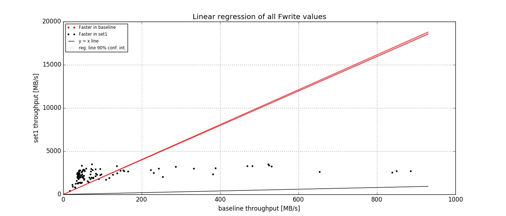
| Regression line |
|---|
| slope | 20.07243 |
| std. error | 0.07845 |
| ci. max 90% | 19.94256 |
| ci. min. 90% | 20.2023 |
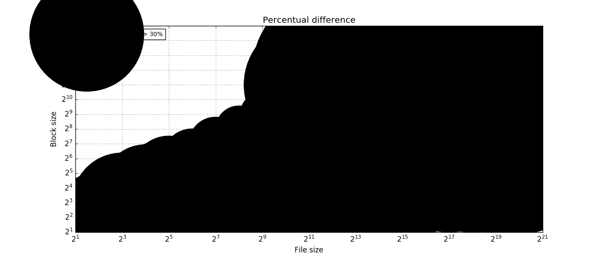
Back on top
Frewrite
| Frewrite |
File size [kB] |
4 |
8 |
16 |
32 |
64 |
128 |
256 |
512 |
1024 |
2048 |
4096 |
8192 |
16384 |
32768 |
65536 |
131072 |
262144 |
524288 |
1048576 |
|---|
| baseline | first quartile |
12.13 |
24.62 |
26.83 |
30.43 |
50.24 |
61.91 |
74.12 |
82.8 |
91.87 |
68.62 |
47.74 |
40.16 |
38.48 |
38.25 |
37.7 |
37.46 |
37.36 |
37.3 |
37.27 |
| median |
12.57 |
29.7 |
42.23 |
74.16 |
97.68 |
123.78 |
118.47 |
194.14 |
213.9 |
74.45 |
49.46 |
41.1 |
39.06 |
39.09 |
38.07 |
37.68 |
37.46 |
37.35 |
37.29 |
| third quartile |
13.42 |
34.71 |
54.71 |
97.79 |
164.89 |
309.53 |
387.03 |
442.48 |
489.71 |
94.13 |
56.73 |
44.65 |
42.24 |
43.26 |
40.01 |
38.63 |
37.91 |
37.58 |
37.41 |
| mean val. |
13.95 |
30.16 |
44.38 |
69.72 |
125.97 |
195.92 |
235.92 |
284.32 |
317.11 |
152.72 |
59.73 |
46.33 |
43.86 |
44.32 |
39.75 |
38.24 |
37.76 |
37.3 |
36.99 |
| standard dev. |
4.14 |
6.69 |
17.96 |
41.85 |
102.08 |
188.29 |
205.69 |
241.5 |
257.76 |
227.61 |
26.19 |
13.27 |
11.98 |
12.06 |
4.36 |
2.18 |
0.79 |
1.23 |
1.67 |
| ci. min. 90% |
10.0 |
26.29 |
36.21 |
53.54 |
91.04 |
137.51 |
177.13 |
219.99 |
252.55 |
98.75 |
53.82 |
43.47 |
41.38 |
41.3 |
38.66 |
37.69 |
37.56 |
36.99 |
36.57 |
| ci. max. 90% |
17.9 |
34.04 |
52.54 |
85.89 |
160.9 |
254.33 |
294.71 |
348.66 |
381.68 |
206.68 |
65.64 |
49.19 |
46.34 |
47.34 |
40.84 |
38.78 |
37.95 |
37.6 |
37.41 |
| geom. mean |
13.54 |
29.48 |
40.75 |
56.34 |
95.93 |
127.49 |
158.55 |
190.79 |
214.75 |
95.02 |
56.22 |
45.02 |
42.73 |
43.09 |
39.53 |
38.18 |
37.75 |
37.27 |
36.95 |
| minimum |
10.53 |
21.28 |
20.17 |
18.28 |
32.07 |
26.65 |
40.3 |
36.08 |
44.53 |
35.3 |
35.43 |
36.34 |
36.56 |
30.82 |
28.17 |
30.42 |
35.9 |
29.77 |
28.93 |
| maximum |
21.12 |
40.07 |
76.22 |
140.82 |
445.97 |
757.85 |
656.26 |
841.62 |
884.91 |
919.52 |
146.68 |
94.1 |
84.21 |
76.55 |
50.17 |
42.7 |
39.83 |
38.5 |
37.86 |
| set1 | first quartile |
322.48 |
567.39 |
713.86 |
1064.81 |
1298.99 |
1507.42 |
1617.42 |
1855.82 |
1911.88 |
1977.72 |
1990.58 |
2122.33 |
2179.86 |
2126.53 |
2052.01 |
2018.26 |
1943.81 |
1935.34 |
1974.7 |
| median |
328.96 |
597.89 |
925.58 |
1257.95 |
1682.51 |
1853.97 |
2176.35 |
2249.15 |
2369.92 |
2421.12 |
2430.14 |
2386.3 |
2327.28 |
2299.52 |
2250.6 |
2127.51 |
2125.78 |
2127.38 |
2128.35 |
| third quartile |
328.96 |
597.89 |
1114.45 |
1481.38 |
1902.27 |
2232.86 |
2646.59 |
2800.72 |
2738.14 |
2874.0 |
2668.44 |
2507.81 |
2398.82 |
2355.16 |
2352.16 |
2340.38 |
2343.61 |
2346.51 |
2355.78 |
| mean val. |
332.11 |
591.56 |
933.07 |
1262.57 |
1621.01 |
1915.97 |
2179.34 |
2313.46 |
2354.61 |
2392.74 |
2366.69 |
2309.33 |
2221.72 |
2304.37 |
2211.93 |
2161.67 |
2142.98 |
2138.02 |
2151.49 |
| standard dev. |
14.66 |
38.21 |
193.4 |
301.06 |
445.84 |
549.61 |
677.53 |
721.6 |
692.83 |
629.97 |
555.41 |
492.42 |
405.66 |
253.82 |
142.55 |
173.52 |
195.56 |
205.6 |
204.85 |
| ci. min. 90% |
318.14 |
569.41 |
845.12 |
1146.17 |
1468.45 |
1745.47 |
1985.69 |
2121.22 |
2181.07 |
2243.37 |
2241.35 |
2203.1 |
2137.74 |
2240.8 |
2176.22 |
2118.2 |
2093.99 |
2086.52 |
2100.18 |
| ci. max. 90% |
346.09 |
613.71 |
1021.02 |
1378.97 |
1773.56 |
2086.47 |
2372.99 |
2505.69 |
2528.14 |
2542.1 |
2492.03 |
2415.56 |
2305.69 |
2367.95 |
2247.63 |
2205.13 |
2191.96 |
2189.51 |
2202.8 |
| geom. mean |
331.86 |
590.43 |
914.12 |
1227.44 |
1559.75 |
1838.02 |
2073.14 |
2200.4 |
2250.59 |
2302.59 |
2294.18 |
2251.15 |
2179.38 |
2291.82 |
2207.38 |
2154.85 |
2134.22 |
2128.28 |
2141.83 |
| minimum |
322.48 |
521.74 |
684.05 |
846.69 |
1024.78 |
1115.97 |
1111.01 |
1170.41 |
1200.5 |
1223.22 |
1233.36 |
1233.22 |
1228.32 |
1974.58 |
1960.42 |
1930.91 |
1886.17 |
1870.01 |
1858.79 |
| maximum |
357.68 |
644.97 |
1289.93 |
1729.05 |
2323.85 |
2982.2 |
3474.34 |
3842.3 |
4065.01 |
3510.16 |
3369.73 |
3352.83 |
3118.18 |
2938.23 |
2382.01 |
2384.02 |
2381.39 |
2377.18 |
2408.69 |
| ttest equality |
DIFF |
DIFF |
DIFF |
DIFF |
DIFF |
DIFF |
DIFF |
DIFF |
DIFF |
DIFF |
DIFF |
DIFF |
DIFF |
DIFF |
DIFF |
DIFF |
DIFF |
DIFF |
DIFF |
| baseline set1 difference |
2517.96 % |
1913.1 % |
2091.67 % |
1596.18 % |
1622.54 % |
1397.85 % |
1737.02 % |
1058.52 % |
1007.97 % |
3151.94 % |
4813.74 % |
5705.78 % |
5858.72 % |
5782.79 % |
5812.0 % |
5546.16 % |
5574.82 % |
5596.44 % |
5607.41 % |
| ttest p-value |
0.0 |
0.0 |
0.0 |
0.0 |
0.0 |
0.0 |
0.0 |
0.0 |
0.0 |
0.0 |
0.0 |
0.0 |
0.0 |
0.0 |
0.0 |
0.0 |
0.0 |
0.0 |
0.0 |
| Frewrite |
Block size [kB] |
4 |
8 |
16 |
32 |
64 |
128 |
256 |
512 |
1024 |
2048 |
4096 |
8192 |
16384 |
|---|
| baseline | first quartile |
26.65 |
40.3 |
48.69 |
48.35 |
37.39 |
37.45 |
37.39 |
37.42 |
37.49 |
37.61 |
37.91 |
38.35 |
38.4 |
| median |
36.79 |
53.18 |
77.78 |
115.8 |
40.23 |
40.07 |
39.38 |
39.25 |
39.09 |
39.51 |
39.99 |
39.89 |
39.79 |
| third quartile |
43.15 |
68.69 |
98.62 |
151.65 |
197.93 |
309.53 |
96.52 |
76.51 |
68.67 |
54.59 |
47.51 |
44.82 |
49.96 |
| mean val. |
35.21 |
55.1 |
77.13 |
115.03 |
121.27 |
156.62 |
167.51 |
152.93 |
154.62 |
53.48 |
46.81 |
46.23 |
46.04 |
| standard dev. |
10.5 |
16.35 |
29.62 |
79.19 |
140.07 |
190.59 |
236.3 |
246.55 |
250.77 |
30.76 |
15.38 |
14.61 |
13.01 |
| ci. min. 90% |
33.03 |
51.57 |
70.45 |
96.25 |
94.33 |
118.64 |
118.59 |
99.74 |
98.03 |
46.19 |
42.95 |
42.34 |
42.33 |
| ci. max. 90% |
37.38 |
58.62 |
83.82 |
133.8 |
148.21 |
194.6 |
216.43 |
206.12 |
211.21 |
60.77 |
50.66 |
50.12 |
49.76 |
| geom. mean |
33.22 |
52.57 |
71.3 |
94.19 |
75.63 |
81.57 |
77.79 |
70.5 |
68.76 |
48.09 |
45.02 |
44.57 |
44.64 |
| minimum |
10.53 |
21.76 |
38.29 |
38.26 |
29.77 |
34.52 |
30.82 |
30.42 |
37.06 |
28.17 |
36.91 |
37.28 |
35.9 |
| maximum |
50.1 |
87.34 |
140.82 |
445.97 |
757.85 |
656.26 |
841.62 |
884.91 |
919.52 |
146.68 |
94.1 |
84.21 |
76.55 |
| set1 | first quartile |
863.42 |
1257.93 |
1711.21 |
2159.29 |
2315.07 |
2355.37 |
2347.33 |
2375.49 |
2127.44 |
2015.04 |
1955.18 |
1888.86 |
1907.24 |
| median |
1174.47 |
1617.42 |
1927.17 |
2194.23 |
2333.9 |
2374.75 |
2384.5 |
2413.33 |
2153.22 |
2076.27 |
2029.04 |
2008.02 |
2021.41 |
| third quartile |
1228.42 |
1698.3 |
1978.07 |
2217.95 |
2370.48 |
2465.4 |
2621.6 |
2720.76 |
2639.25 |
2508.45 |
2398.82 |
2401.05 |
2395.84 |
| mean val. |
1015.75 |
1449.84 |
1797.7 |
2109.9 |
2341.33 |
2464.49 |
2543.11 |
2605.36 |
2391.59 |
2324.89 |
2284.44 |
2201.27 |
2188.41 |
| standard dev. |
286.53 |
344.13 |
297.12 |
251.52 |
214.51 |
260.11 |
352.91 |
378.88 |
424.72 |
447.07 |
482.93 |
409.52 |
363.21 |
| ci. min. 90% |
956.43 |
1375.6 |
1730.65 |
2050.27 |
2300.07 |
2412.65 |
2470.05 |
2523.62 |
2295.74 |
2218.89 |
2163.48 |
2092.18 |
2084.6 |
| ci. max. 90% |
1075.07 |
1524.08 |
1864.75 |
2169.54 |
2382.59 |
2516.32 |
2616.17 |
2687.1 |
2487.43 |
2430.89 |
2405.4 |
2310.37 |
2292.22 |
| geom. mean |
958.49 |
1393.09 |
1764.89 |
2091.37 |
2331.0 |
2453.01 |
2523.04 |
2582.44 |
2359.54 |
2288.08 |
2241.07 |
2167.87 |
2161.73 |
| minimum |
322.48 |
521.74 |
925.58 |
1353.97 |
1503.09 |
2166.28 |
2299.52 |
2336.1 |
1979.71 |
1996.08 |
1933.08 |
1859.55 |
1858.79 |
| maximum |
1245.36 |
1721.9 |
2004.47 |
2323.85 |
2982.2 |
3474.34 |
3842.3 |
4065.01 |
3510.16 |
3369.73 |
3352.83 |
3118.18 |
2938.23 |
| ttest equality |
DIFF |
DIFF |
DIFF |
DIFF |
DIFF |
DIFF |
DIFF |
DIFF |
DIFF |
DIFF |
DIFF |
DIFF |
DIFF |
| baseline set1 difference |
3092.37 % |
2941.23 % |
2377.81 % |
1794.8 % |
5700.9 % |
5826.47 % |
5955.42 % |
6048.15 % |
5408.53 % |
5154.88 % |
4973.59 % |
4934.12 % |
4980.32 % |
| ttest p-value |
0.0 |
0.0 |
0.0 |
0.0 |
0.0 |
0.0 |
0.0 |
0.0 |
0.0 |
0.0 |
0.0 |
0.0 |
0.0 |
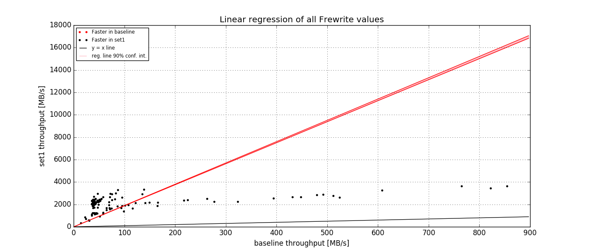
| Regression line |
|---|
| slope | 18.89444 |
| std. error | 0.0765 |
| ci. max 90% | 18.76779 |
| ci. min. 90% | 19.02108 |
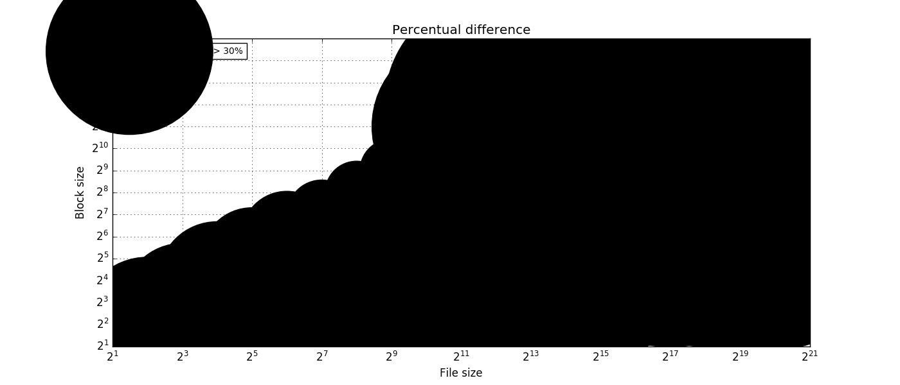
Back on top
Fread
| Fread |
File size [kB] |
4 |
8 |
16 |
32 |
64 |
128 |
256 |
512 |
1024 |
2048 |
4096 |
8192 |
16384 |
32768 |
65536 |
131072 |
262144 |
524288 |
1048576 |
|---|
| baseline | first quartile |
3.78 |
4.94 |
10.25 |
9.59 |
16.09 |
18.87 |
30.97 |
40.92 |
40.42 |
39.17 |
39.17 |
39.34 |
39.46 |
39.62 |
39.69 |
39.68 |
39.58 |
39.65 |
39.67 |
| median |
3.83 |
6.71 |
10.64 |
14.16 |
16.53 |
25.09 |
40.79 |
52.36 |
43.71 |
40.88 |
40.16 |
39.86 |
39.92 |
65.99 |
65.72 |
65.64 |
65.45 |
65.44 |
65.54 |
| third quartile |
3.94 |
8.68 |
15.01 |
20.68 |
32.72 |
46.76 |
69.75 |
60.56 |
47.26 |
54.25 |
69.97 |
72.31 |
84.26 |
96.2 |
95.57 |
95.32 |
95.19 |
95.14 |
95.02 |
| mean val. |
4.14 |
6.86 |
12.08 |
15.71 |
24.44 |
32.27 |
48.06 |
54.23 |
52.09 |
51.68 |
54.1 |
56.9 |
60.51 |
69.24 |
68.92 |
68.72 |
68.68 |
68.67 |
68.64 |
| standard dev. |
0.72 |
1.99 |
2.56 |
6.58 |
10.84 |
15.78 |
19.19 |
17.5 |
19.89 |
21.4 |
23.68 |
26.17 |
27.55 |
27.9 |
27.6 |
27.45 |
27.43 |
27.38 |
27.36 |
| ci. min. 90% |
3.45 |
5.71 |
10.91 |
13.16 |
20.74 |
27.37 |
42.57 |
49.57 |
47.11 |
46.61 |
48.75 |
51.25 |
54.81 |
62.25 |
62.01 |
61.85 |
61.81 |
61.81 |
61.79 |
| ci. max. 90% |
4.83 |
8.02 |
13.24 |
18.25 |
28.15 |
37.16 |
53.54 |
58.89 |
57.07 |
56.75 |
59.44 |
62.54 |
66.22 |
76.23 |
75.83 |
75.6 |
75.55 |
75.52 |
75.49 |
| geom. mean |
4.1 |
6.6 |
11.84 |
14.44 |
22.4 |
28.97 |
44.68 |
51.81 |
49.32 |
48.53 |
50.2 |
52.0 |
55.2 |
63.65 |
63.43 |
63.27 |
63.24 |
63.25 |
63.23 |
| minimum |
3.72 |
4.64 |
9.36 |
9.13 |
15.73 |
16.32 |
27.95 |
35.04 |
36.92 |
37.08 |
37.84 |
21.35 |
38.53 |
39.09 |
39.2 |
39.21 |
39.27 |
39.19 |
39.23 |
| maximum |
5.42 |
9.6 |
16.11 |
26.67 |
43.44 |
61.52 |
78.81 |
93.77 |
101.41 |
106.22 |
108.72 |
110.19 |
110.88 |
108.48 |
107.75 |
107.42 |
107.25 |
107.17 |
107.13 |
| set1 | first quartile |
391.91 |
969.3 |
1567.63 |
2228.9 |
2736.2 |
3241.76 |
3959.79 |
3936.05 |
4369.95 |
4464.86 |
4464.04 |
4386.44 |
4052.76 |
3731.4 |
4283.81 |
4283.08 |
4326.15 |
4365.55 |
4393.53 |
| median |
391.91 |
969.3 |
1567.63 |
2391.58 |
2985.5 |
3571.3 |
4164.23 |
4238.33 |
4444.03 |
4576.92 |
4598.0 |
4579.37 |
4535.05 |
4361.43 |
4502.3 |
4491.22 |
4501.1 |
4515.42 |
4531.59 |
| third quartile |
391.91 |
998.85 |
1650.56 |
2391.58 |
3128.0 |
3690.76 |
4231.44 |
4316.91 |
4569.93 |
4660.84 |
4675.54 |
4670.84 |
4679.57 |
4525.54 |
4542.22 |
4561.32 |
4552.8 |
4560.15 |
4565.2 |
| mean val. |
393.36 |
974.48 |
1602.74 |
2253.91 |
2973.37 |
3487.37 |
4032.98 |
4113.02 |
4401.49 |
4505.63 |
4508.74 |
4486.01 |
4369.4 |
4196.74 |
4313.15 |
4311.07 |
4321.99 |
4338.78 |
4350.22 |
| standard dev. |
26.83 |
75.79 |
88.76 |
277.35 |
210.6 |
388.63 |
319.83 |
310.51 |
265.17 |
249.58 |
274.22 |
297.15 |
451.37 |
451.35 |
449.48 |
445.72 |
453.37 |
452.78 |
457.87 |
| ci. min. 90% |
367.77 |
930.55 |
1562.37 |
2146.68 |
2901.3 |
3366.82 |
3941.56 |
4030.3 |
4335.07 |
4446.46 |
4446.86 |
4421.91 |
4275.96 |
4083.69 |
4200.57 |
4199.42 |
4208.43 |
4225.37 |
4235.53 |
| ci. max. 90% |
418.94 |
1018.41 |
1643.1 |
2361.15 |
3045.43 |
3607.93 |
4124.39 |
4195.74 |
4467.91 |
4564.81 |
4570.62 |
4550.12 |
4462.84 |
4309.79 |
4425.74 |
4422.71 |
4435.54 |
4452.19 |
4464.9 |
| geom. mean |
392.63 |
971.87 |
1600.47 |
2231.73 |
2966.04 |
3464.93 |
4019.77 |
4100.94 |
4393.09 |
4498.35 |
4500.02 |
4475.86 |
4344.56 |
4171.92 |
4288.25 |
4286.62 |
4296.67 |
4313.59 |
4324.52 |
| minimum |
357.68 |
866.75 |
1430.74 |
1193.67 |
2600.49 |
2610.92 |
3248.32 |
3267.58 |
3663.77 |
3794.37 |
3809.71 |
3826.13 |
3340.28 |
3417.75 |
3430.89 |
3446.79 |
3441.46 |
3458.67 |
3464.2 |
| maximum |
433.37 |
1137.55 |
1733.5 |
2436.02 |
3284.78 |
4167.44 |
4643.71 |
4551.05 |
4761.89 |
4832.69 |
4825.47 |
4920.14 |
4978.1 |
4799.01 |
4813.1 |
4800.83 |
4817.73 |
4821.41 |
4828.14 |
| ttest equality |
DIFF |
DIFF |
DIFF |
DIFF |
DIFF |
DIFF |
DIFF |
DIFF |
DIFF |
DIFF |
DIFF |
DIFF |
DIFF |
DIFF |
DIFF |
DIFF |
DIFF |
DIFF |
DIFF |
| baseline set1 difference |
10124.56 % |
14341.54 % |
14639.29 % |
16787.15 % |
17961.88 % |
14134.34 % |
10109.17 % |
7994.17 % |
10065.96 % |
11095.09 % |
11350.28 % |
11387.56 % |
11260.1 % |
6509.0 % |
6751.17 % |
6741.73 % |
6777.65 % |
6800.36 % |
6813.83 % |
| ttest p-value |
0.0 |
0.0 |
0.0 |
0.0 |
0.0 |
0.0 |
0.0 |
0.0 |
0.0 |
0.0 |
0.0 |
0.0 |
0.0 |
0.0 |
0.0 |
0.0 |
0.0 |
0.0 |
0.0 |
| Fread |
Block size [kB] |
4 |
8 |
16 |
32 |
64 |
128 |
256 |
512 |
1024 |
2048 |
4096 |
8192 |
16384 |
|---|
| baseline | first quartile |
10.41 |
14.52 |
18.99 |
32.02 |
39.46 |
39.54 |
39.61 |
46.41 |
65.56 |
82.64 |
95.14 |
102.82 |
107.16 |
| median |
29.71 |
34.75 |
38.97 |
39.53 |
39.77 |
39.72 |
39.71 |
46.8 |
65.99 |
83.07 |
95.54 |
103.01 |
107.38 |
| third quartile |
38.53 |
38.69 |
39.72 |
40.5 |
43.07 |
46.8 |
43.18 |
51.41 |
69.97 |
86.15 |
97.37 |
104.1 |
108.41 |
| mean val. |
25.02 |
27.08 |
31.95 |
36.76 |
42.12 |
45.4 |
45.52 |
52.96 |
70.39 |
86.35 |
97.56 |
104.2 |
107.92 |
| standard dev. |
14.09 |
12.85 |
10.63 |
6.78 |
4.43 |
10.66 |
11.82 |
14.08 |
10.19 |
6.99 |
4.2 |
2.39 |
1.22 |
| ci. min. 90% |
22.1 |
24.31 |
29.55 |
35.16 |
41.27 |
43.28 |
43.07 |
49.92 |
68.09 |
84.69 |
96.51 |
103.57 |
107.57 |
| ci. max. 90% |
27.93 |
29.86 |
34.34 |
38.37 |
42.97 |
47.52 |
47.97 |
56.0 |
72.69 |
88.0 |
98.61 |
104.84 |
108.27 |
| geom. mean |
19.55 |
23.26 |
29.87 |
36.07 |
41.91 |
44.41 |
44.36 |
51.42 |
69.8 |
86.1 |
97.48 |
104.18 |
107.92 |
| minimum |
3.72 |
7.83 |
14.82 |
23.95 |
37.85 |
39.23 |
37.84 |
21.35 |
64.94 |
82.5 |
94.97 |
102.39 |
106.52 |
| maximum |
42.64 |
42.83 |
52.83 |
49.32 |
54.8 |
78.81 |
78.37 |
93.77 |
101.41 |
106.22 |
108.72 |
110.19 |
110.88 |
| set1 | first quartile |
2086.94 |
2567.2 |
3056.75 |
3578.07 |
4292.19 |
4429.97 |
4426.19 |
4495.86 |
4513.7 |
4494.03 |
4278.34 |
3579.71 |
3441.17 |
| median |
3378.11 |
4197.83 |
4129.83 |
4341.02 |
4721.47 |
4654.03 |
4491.22 |
4522.24 |
4542.22 |
4516.29 |
4326.15 |
3588.67 |
3455.96 |
| third quartile |
3839.52 |
4651.75 |
4572.57 |
4614.06 |
4787.55 |
4695.38 |
4529.85 |
4553.4 |
4580.37 |
4545.77 |
4377.92 |
3615.27 |
3465.96 |
| mean val. |
2865.82 |
3582.52 |
3746.46 |
3986.54 |
4475.36 |
4485.39 |
4476.0 |
4522.77 |
4508.7 |
4521.94 |
4309.97 |
3624.82 |
3452.47 |
| standard dev. |
1195.36 |
1277.86 |
1005.83 |
820.22 |
487.99 |
376.66 |
113.2 |
91.49 |
201.15 |
66.65 |
138.4 |
112.26 |
28.15 |
| ci. min. 90% |
2618.36 |
3306.84 |
3519.48 |
3792.06 |
4381.5 |
4410.33 |
4452.56 |
4503.03 |
4463.31 |
4506.14 |
4275.3 |
3594.91 |
3444.42 |
| ci. max. 90% |
3113.28 |
3858.2 |
3973.44 |
4181.01 |
4569.22 |
4560.45 |
4499.43 |
4542.5 |
4554.09 |
4537.74 |
4344.63 |
3654.72 |
3460.51 |
| geom. mean |
2442.08 |
3262.96 |
3578.98 |
3874.75 |
4445.31 |
4467.09 |
4474.57 |
4521.85 |
4503.88 |
4521.46 |
4307.7 |
3623.19 |
3452.35 |
| minimum |
357.68 |
969.3 |
1567.63 |
1193.67 |
2985.5 |
2719.25 |
4099.11 |
4272.88 |
3729.64 |
4345.41 |
3730.38 |
3487.83 |
3340.28 |
| maximum |
4012.34 |
4920.14 |
4810.8 |
4861.62 |
4978.1 |
4886.47 |
4753.56 |
4715.87 |
4750.58 |
4700.29 |
4586.69 |
4052.56 |
3499.06 |
| ttest equality |
DIFF |
DIFF |
DIFF |
DIFF |
DIFF |
DIFF |
DIFF |
DIFF |
DIFF |
DIFF |
DIFF |
DIFF |
DIFF |
| baseline set1 difference |
11270.68 % |
11979.93 % |
10496.74 % |
10880.97 % |
11772.66 % |
11617.61 % |
11211.18 % |
9562.63 % |
6782.97 % |
5336.9 % |
4428.11 % |
3383.65 % |
3118.5 % |
| ttest p-value |
0.0 |
0.0 |
0.0 |
0.0 |
0.0 |
0.0 |
0.0 |
0.0 |
0.0 |
0.0 |
0.0 |
0.0 |
0.0 |
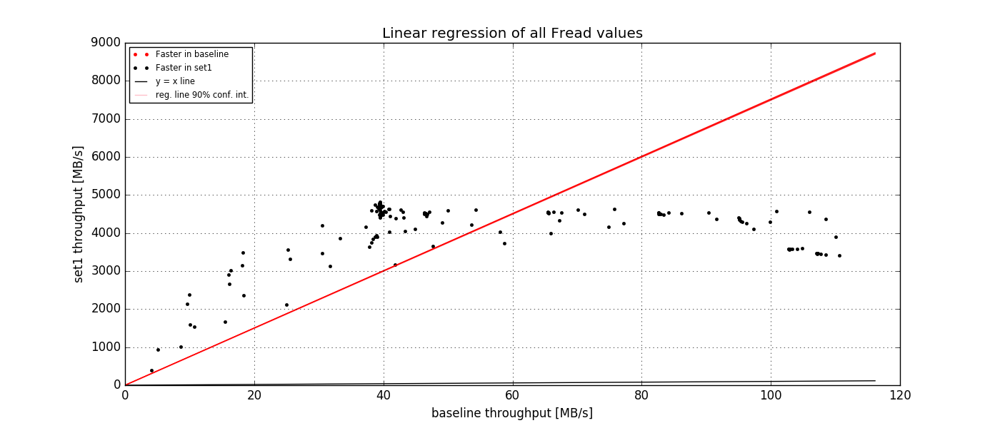
| Regression line |
|---|
| slope | 75.09816 |
| std. error | 0.08109 |
| ci. max 90% | 74.96392 |
| ci. min. 90% | 75.23239 |
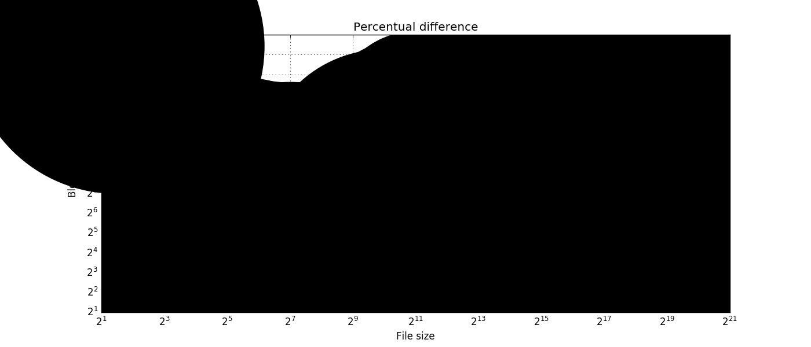
Back on top
Freread
| Freread |
File size [kB] |
4 |
8 |
16 |
32 |
64 |
128 |
256 |
512 |
1024 |
2048 |
4096 |
8192 |
16384 |
32768 |
65536 |
131072 |
262144 |
524288 |
1048576 |
|---|
| baseline | first quartile |
1279.43 |
1574.95 |
2539.59 |
3011.89 |
2824.65 |
3235.44 |
3446.03 |
3635.93 |
3873.55 |
4045.13 |
4160.19 |
3637.55 |
3423.96 |
3528.53 |
3588.43 |
3622.69 |
3642.36 |
3669.72 |
3684.38 |
| median |
1279.43 |
1949.81 |
2641.97 |
3135.27 |
3128.0 |
3621.32 |
3900.87 |
3954.64 |
4096.78 |
4232.81 |
4232.6 |
3872.05 |
3611.73 |
3677.72 |
3733.1 |
3754.11 |
3773.63 |
3789.45 |
3795.91 |
| third quartile |
1279.43 |
1949.81 |
2641.97 |
3466.99 |
3504.33 |
3797.69 |
3974.8 |
4204.35 |
4254.7 |
4289.08 |
4289.96 |
3956.29 |
3697.7 |
3733.06 |
3780.68 |
3794.28 |
3802.8 |
3799.12 |
3819.77 |
| mean val. |
1240.2 |
1921.68 |
2632.71 |
3126.72 |
3094.79 |
3539.06 |
3669.68 |
3880.48 |
4034.85 |
4121.78 |
4150.04 |
3776.49 |
3522.11 |
3547.52 |
3590.54 |
3619.83 |
3633.3 |
3647.5 |
3657.5 |
| standard dev. |
155.55 |
379.48 |
309.62 |
280.89 |
718.4 |
411.94 |
403.97 |
444.9 |
329.99 |
278.56 |
242.13 |
259.23 |
264.84 |
295.34 |
313.58 |
321.9 |
323.26 |
325.44 |
330.19 |
| ci. min. 90% |
1091.9 |
1701.7 |
2491.9 |
3018.12 |
2848.97 |
3411.27 |
3554.21 |
3761.96 |
3952.2 |
4055.74 |
4095.4 |
3720.57 |
3467.28 |
3473.55 |
3512.0 |
3539.2 |
3552.33 |
3565.99 |
3574.79 |
| ci. max. 90% |
1388.5 |
2141.66 |
2773.51 |
3235.33 |
3340.61 |
3666.85 |
3785.14 |
3999.0 |
4117.51 |
4187.83 |
4204.68 |
3832.42 |
3576.93 |
3621.5 |
3669.08 |
3700.45 |
3714.27 |
3729.02 |
3740.2 |
| geom. mean |
1231.6 |
1890.23 |
2616.16 |
3114.44 |
3003.37 |
3515.12 |
3646.64 |
3852.23 |
4020.91 |
4111.97 |
4142.45 |
3767.24 |
3511.78 |
3534.64 |
3576.15 |
3604.76 |
3618.17 |
3632.21 |
3641.78 |
| minimum |
974.91 |
1574.95 |
2198.77 |
2579.87 |
1426.2 |
2719.25 |
2782.8 |
2305.05 |
3105.04 |
3350.34 |
3386.73 |
3159.61 |
2955.32 |
2927.46 |
2954.62 |
2953.06 |
2996.53 |
3000.56 |
3013.14 |
| maximum |
1387.8 |
2558.86 |
3149.91 |
3466.99 |
4173.89 |
4167.44 |
4248.59 |
4463.87 |
4486.82 |
4472.0 |
4377.27 |
4056.97 |
3859.09 |
3878.7 |
3933.59 |
3972.21 |
3962.97 |
3973.7 |
3982.61 |
| set1 | first quartile |
1279.43 |
1574.95 |
2407.35 |
3135.27 |
3650.74 |
4071.13 |
4231.44 |
4343.68 |
4735.02 |
4748.61 |
4890.17 |
4751.5 |
3964.18 |
3664.67 |
4324.04 |
4329.89 |
4327.98 |
4373.71 |
4397.49 |
| median |
1279.43 |
1574.95 |
2641.97 |
3466.99 |
3923.98 |
4377.37 |
4562.88 |
4741.46 |
5030.31 |
5128.12 |
5235.02 |
4937.17 |
4483.25 |
4318.49 |
4496.95 |
4495.66 |
4507.75 |
4520.57 |
4537.08 |
| third quartile |
1279.43 |
1949.81 |
2895.94 |
3466.99 |
4173.89 |
4637.5 |
4997.84 |
5117.52 |
5237.6 |
5419.68 |
5401.89 |
5108.93 |
4621.57 |
4546.08 |
4548.69 |
4550.96 |
4557.5 |
4561.5 |
4582.37 |
| mean val. |
1218.53 |
1730.01 |
2643.85 |
3377.06 |
3785.49 |
4265.93 |
4543.29 |
4731.36 |
4925.1 |
5029.11 |
5094.04 |
4836.26 |
4313.24 |
4173.06 |
4312.72 |
4320.87 |
4328.53 |
4343.7 |
4357.78 |
| standard dev. |
136.19 |
219.74 |
357.3 |
344.93 |
600.97 |
497.46 |
494.57 |
503.82 |
494.77 |
484.62 |
426.98 |
420.11 |
430.49 |
434.02 |
444.28 |
446.35 |
453.07 |
453.29 |
462.67 |
| ci. min. 90% |
1088.69 |
1602.63 |
2481.36 |
3243.69 |
3579.85 |
4111.61 |
4401.94 |
4597.14 |
4801.18 |
4914.2 |
4997.69 |
4745.63 |
4224.12 |
4064.35 |
4201.44 |
4209.07 |
4215.05 |
4230.16 |
4241.9 |
| ci. max. 90% |
1348.36 |
1857.39 |
2806.34 |
3510.43 |
3991.13 |
4420.25 |
4684.65 |
4865.58 |
5049.03 |
5144.01 |
5190.39 |
4926.89 |
4402.36 |
4281.77 |
4424.0 |
4432.67 |
4442.01 |
4457.24 |
4473.67 |
| geom. mean |
1211.73 |
1717.84 |
2621.7 |
3360.19 |
3726.83 |
4235.39 |
4516.33 |
4704.4 |
4899.25 |
5004.86 |
5075.01 |
4817.15 |
4290.56 |
4150.03 |
4288.36 |
4296.34 |
4303.28 |
4318.49 |
4331.55 |
| minimum |
974.91 |
1502.73 |
2198.77 |
2800.34 |
1959.14 |
2852.4 |
3734.17 |
3732.88 |
3873.55 |
3929.45 |
3872.14 |
3842.34 |
3362.2 |
3425.42 |
3431.24 |
3446.41 |
3446.29 |
3460.16 |
3460.25 |
| maximum |
1279.43 |
2073.18 |
3149.91 |
3995.4 |
4457.8 |
5002.48 |
5221.84 |
5550.87 |
5556.8 |
5615.59 |
5587.18 |
5614.11 |
4829.43 |
4745.73 |
4807.67 |
4816.59 |
4804.17 |
4821.91 |
4837.03 |
| ttest equality |
SAME |
SAME |
SAME |
DIFF |
DIFF |
DIFF |
DIFF |
DIFF |
DIFF |
DIFF |
DIFF |
DIFF |
DIFF |
DIFF |
DIFF |
DIFF |
DIFF |
DIFF |
DIFF |
| baseline set1 difference |
0.0 % |
-19.23 % |
0.0 % |
10.58 % |
25.45 % |
20.88 % |
16.97 % |
19.9 % |
22.79 % |
21.15 % |
23.68 % |
27.51 % |
24.13 % |
17.42 % |
20.46 % |
19.75 % |
19.45 % |
19.29 % |
19.53 % |
| ttest p-value |
0.8205 |
0.1838 |
0.9279 |
0.0162 |
0.0006 |
0.0 |
0.0 |
0.0 |
0.0 |
0.0 |
0.0 |
0.0 |
0.0 |
0.0 |
0.0 |
0.0 |
0.0 |
0.0 |
0.0 |
| Freread |
Block size [kB] |
4 |
8 |
16 |
32 |
64 |
128 |
256 |
512 |
1024 |
2048 |
4096 |
8192 |
16384 |
|---|
| baseline | first quartile |
2579.87 |
3108.79 |
3260.89 |
3673.47 |
3880.29 |
3851.94 |
3739.73 |
3744.43 |
3743.18 |
3736.64 |
3569.69 |
3094.23 |
2971.64 |
| median |
3105.63 |
3652.76 |
3649.64 |
3896.19 |
3964.2 |
3916.07 |
3789.56 |
3794.32 |
3804.37 |
3782.45 |
3629.67 |
3105.69 |
2999.77 |
| third quartile |
3386.73 |
3933.83 |
3867.23 |
4029.87 |
4068.9 |
4133.55 |
4186.74 |
4275.91 |
4130.32 |
3810.62 |
3677.43 |
3119.12 |
3016.06 |
| mean val. |
2858.56 |
3448.24 |
3551.46 |
3836.42 |
3886.47 |
3969.85 |
3915.78 |
3946.69 |
3922.77 |
3853.99 |
3645.6 |
3114.04 |
2993.95 |
| standard dev. |
681.91 |
705.98 |
455.44 |
273.04 |
441.61 |
191.66 |
238.33 |
282.56 |
269.28 |
228.04 |
139.74 |
54.27 |
26.72 |
| ci. min. 90% |
2717.39 |
3295.93 |
3448.69 |
3771.69 |
3801.53 |
3931.66 |
3866.44 |
3885.73 |
3862.0 |
3799.92 |
3610.6 |
3099.58 |
2986.31 |
| ci. max. 90% |
2999.72 |
3600.54 |
3654.24 |
3901.16 |
3971.41 |
4008.04 |
3965.11 |
4007.65 |
3983.54 |
3908.05 |
3680.6 |
3128.5 |
3001.58 |
| geom. mean |
2751.89 |
3360.93 |
3520.51 |
3826.67 |
3849.92 |
3965.34 |
3908.75 |
3937.02 |
3914.05 |
3847.69 |
3643.06 |
3113.59 |
2993.83 |
| minimum |
974.91 |
1574.95 |
2539.59 |
3208.56 |
1426.2 |
3561.13 |
3534.5 |
3550.77 |
3561.13 |
3539.72 |
3386.29 |
3009.26 |
2927.46 |
| maximum |
3609.86 |
4377.27 |
4277.93 |
4273.78 |
4379.96 |
4415.51 |
4320.0 |
4463.87 |
4486.82 |
4472.0 |
4043.87 |
3311.14 |
3035.51 |
| set1 | first quartile |
2800.34 |
3466.99 |
3923.98 |
4450.45 |
4741.28 |
4661.08 |
4485.49 |
4511.88 |
4528.49 |
4506.73 |
4322.12 |
3586.33 |
3446.35 |
| median |
3734.17 |
4517.84 |
4316.85 |
4726.42 |
4804.17 |
4743.54 |
4538.37 |
4549.81 |
4556.92 |
4534.72 |
4373.71 |
3597.28 |
3458.01 |
| third quartile |
3891.52 |
4728.62 |
4567.43 |
4832.4 |
4996.11 |
5116.77 |
5195.97 |
5413.06 |
5383.94 |
4940.98 |
4436.9 |
3641.06 |
3464.79 |
| mean val. |
3250.76 |
4066.9 |
4196.38 |
4540.19 |
4835.0 |
4865.29 |
4804.34 |
4874.32 |
4802.57 |
4737.64 |
4427.98 |
3642.03 |
3454.17 |
| standard dev. |
968.87 |
951.97 |
582.1 |
527.82 |
262.19 |
308.88 |
398.61 |
457.8 |
520.18 |
384.75 |
303.65 |
123.5 |
23.08 |
| ci. min. 90% |
3050.19 |
3861.53 |
4065.02 |
4415.05 |
4784.57 |
4803.74 |
4721.82 |
4775.55 |
4685.18 |
4646.41 |
4351.92 |
3609.13 |
3447.57 |
| ci. max. 90% |
3451.34 |
4272.28 |
4327.73 |
4665.34 |
4885.43 |
4926.84 |
4886.86 |
4973.08 |
4919.95 |
4828.86 |
4504.03 |
3674.93 |
3460.77 |
| geom. mean |
3054.47 |
3925.34 |
4151.91 |
4502.85 |
4827.78 |
4855.53 |
4788.2 |
4853.74 |
4774.76 |
4723.17 |
4418.15 |
3640.09 |
3454.09 |
| minimum |
974.91 |
1574.95 |
2539.59 |
2244.27 |
3843.67 |
3954.0 |
4036.0 |
4282.66 |
3658.77 |
4321.41 |
3747.88 |
3536.34 |
3362.2 |
| maximum |
4314.23 |
5235.02 |
5229.15 |
5243.2 |
5479.52 |
5614.11 |
5541.4 |
5600.6 |
5615.59 |
5577.89 |
5284.49 |
4138.53 |
3496.15 |
| ttest equality |
DIFF |
DIFF |
DIFF |
DIFF |
DIFF |
DIFF |
DIFF |
DIFF |
DIFF |
DIFF |
DIFF |
DIFF |
DIFF |
| baseline set1 difference |
20.24 % |
23.68 % |
18.28 % |
21.31 % |
21.19 % |
21.13 % |
19.76 % |
19.91 % |
19.78 % |
19.89 % |
20.5 % |
15.83 % |
15.28 % |
| ttest p-value |
0.0086 |
0.0001 |
0.0 |
0.0 |
0.0 |
0.0 |
0.0 |
0.0 |
0.0 |
0.0 |
0.0 |
0.0 |
0.0 |
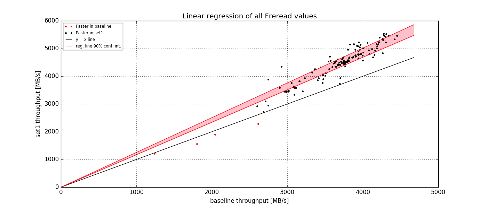
| Regression line |
|---|
| slope | 1.21242 |
| std. error | 0.02491 |
| ci. max 90% | 1.17118 |
| ci. min. 90% | 1.25365 |
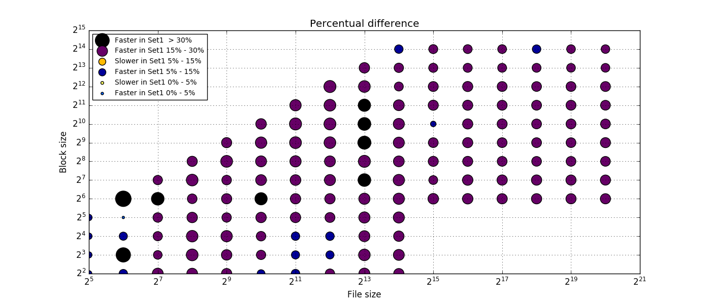
Back on top
ALL
| ALL |
File size [kB] |
4 |
8 |
16 |
32 |
64 |
128 |
256 |
512 |
1024 |
2048 |
4096 |
8192 |
16384 |
32768 |
65536 |
131072 |
262144 |
524288 |
1048576 |
|---|
| baseline | first quartile |
6.24 |
11.59 |
16.19 |
18.36 |
30.53 |
43.21 |
56.24 |
66.0 |
51.74 |
49.8 |
46.17 |
39.64 |
38.53 |
37.87 |
37.59 |
37.42 |
37.33 |
37.29 |
37.27 |
| median |
10.97 |
21.76 |
28.1 |
41.62 |
71.51 |
95.94 |
122.97 |
176.46 |
206.66 |
71.97 |
49.17 |
41.08 |
39.67 |
46.76 |
42.86 |
39.88 |
39.68 |
39.54 |
39.54 |
| third quartile |
21.12 |
39.62 |
81.38 |
123.23 |
262.72 |
399.96 |
530.31 |
724.77 |
870.4 |
769.09 |
286.14 |
319.88 |
338.23 |
364.98 |
382.71 |
121.81 |
110.54 |
108.06 |
107.97 |
| mean val. |
455.64 |
800.32 |
818.45 |
841.33 |
942.71 |
1013.67 |
1070.66 |
1132.75 |
1183.81 |
1121.34 |
1106.07 |
1026.01 |
939.86 |
932.49 |
935.6 |
939.02 |
936.13 |
930.38 |
934.79 |
| standard dev. |
1003.42 |
1811.17 |
1576.49 |
1488.38 |
1633.48 |
1679.86 |
1710.32 |
1763.42 |
1816.36 |
1895.02 |
1902.1 |
1766.51 |
1603.1 |
1586.64 |
1595.58 |
1609.38 |
1615.38 |
1622.55 |
1631.15 |
| ci. min. 90% |
247.92 |
537.14 |
631.87 |
688.96 |
793.25 |
873.42 |
938.5 |
1005.32 |
1060.09 |
998.91 |
988.91 |
921.85 |
849.05 |
824.42 |
826.92 |
829.4 |
826.1 |
819.86 |
823.68 |
| ci. max. 90% |
663.36 |
1063.49 |
1005.04 |
993.71 |
1092.18 |
1153.92 |
1202.81 |
1260.18 |
1307.53 |
1243.78 |
1223.23 |
1130.18 |
1030.67 |
1040.56 |
1044.28 |
1048.64 |
1046.16 |
1040.9 |
1045.89 |
| geom. mean |
29.05 |
49.06 |
70.84 |
88.83 |
132.13 |
165.9 |
210.87 |
242.05 |
257.28 |
160.42 |
134.55 |
123.87 |
121.24 |
141.24 |
137.5 |
134.81 |
132.02 |
129.22 |
129.0 |
| minimum |
3.72 |
3.13 |
2.92 |
2.56 |
2.12 |
1.56 |
1.57 |
1.54 |
1.57 |
1.55 |
1.6 |
1.58 |
1.55 |
25.51 |
24.36 |
24.47 |
24.89 |
24.67 |
23.21 |
| maximum |
3906.25 |
7812.5 |
8395.92 |
5283.95 |
5263.33 |
5472.41 |
5553.73 |
5625.32 |
5654.18 |
5649.63 |
5555.73 |
5311.93 |
4852.83 |
4681.66 |
4649.46 |
4696.92 |
4680.76 |
4704.58 |
4705.45 |
| set1 | first quartile |
357.68 |
644.97 |
1043.47 |
1353.97 |
1738.29 |
2010.26 |
2231.93 |
2425.01 |
2564.06 |
2606.13 |
2626.24 |
2577.98 |
2408.89 |
2403.15 |
2412.99 |
2416.87 |
2425.21 |
2427.71 |
2491.19 |
| median |
499.42 |
929.8 |
1567.63 |
2086.94 |
2707.94 |
3220.33 |
3618.2 |
3773.22 |
3953.88 |
4027.56 |
4224.08 |
4029.2 |
3669.8 |
3628.51 |
3610.54 |
3603.21 |
3589.36 |
3592.28 |
3695.2 |
| third quartile |
1279.43 |
1949.81 |
2641.97 |
3466.99 |
3866.11 |
4167.44 |
4390.92 |
4543.66 |
4735.02 |
4831.99 |
4926.06 |
4789.52 |
4588.39 |
4427.17 |
4502.6 |
4494.87 |
4505.3 |
4516.34 |
4531.59 |
| mean val. |
990.18 |
1794.8 |
1997.49 |
2409.34 |
2811.37 |
3157.76 |
3416.48 |
3543.22 |
3673.62 |
3762.36 |
3793.86 |
3701.58 |
3443.29 |
3406.45 |
3465.38 |
3452.1 |
3456.46 |
3469.26 |
3541.1 |
| standard dev. |
1075.18 |
2013.77 |
1456.06 |
1393.62 |
1377.88 |
1397.08 |
1401.52 |
1376.0 |
1396.66 |
1405.01 |
1390.92 |
1343.72 |
1242.12 |
1120.02 |
1132.89 |
1131.82 |
1138.42 |
1141.69 |
1135.17 |
| ci. min. 90% |
767.6 |
1502.18 |
1825.15 |
2266.67 |
2685.29 |
3041.12 |
3308.19 |
3443.79 |
3578.48 |
3671.59 |
3708.18 |
3622.35 |
3372.93 |
3330.16 |
3388.22 |
3375.0 |
3378.92 |
3391.49 |
3463.78 |
| ci. max. 90% |
1212.76 |
2087.41 |
2169.82 |
2552.01 |
2937.45 |
3274.4 |
3524.78 |
3642.65 |
3768.75 |
3853.14 |
3879.53 |
3780.81 |
3513.65 |
3482.74 |
3542.55 |
3529.19 |
3534.0 |
3547.03 |
3618.42 |
| geom. mean |
632.87 |
1131.14 |
1559.17 |
2001.79 |
2418.0 |
2775.06 |
3047.1 |
3199.19 |
3330.42 |
3422.94 |
3461.27 |
3387.32 |
3162.56 |
3185.67 |
3240.64 |
3226.18 |
3228.07 |
3240.26 |
3322.87 |
| minimum |
125.25 |
163.18 |
283.94 |
346.93 |
381.13 |
412.56 |
489.12 |
666.65 |
709.24 |
721.24 |
732.48 |
739.38 |
733.47 |
1203.1 |
1219.28 |
1219.0 |
1219.78 |
1222.2 |
1268.67 |
| maximum |
3906.25 |
7812.5 |
7442.46 |
5283.95 |
6270.53 |
5971.0 |
5964.4 |
5894.09 |
6337.67 |
6621.86 |
6114.58 |
5975.0 |
5524.82 |
5512.29 |
5213.78 |
4834.9 |
4851.06 |
4853.04 |
6651.3 |
| ttest equality |
DIFF |
DIFF |
DIFF |
DIFF |
DIFF |
DIFF |
DIFF |
DIFF |
DIFF |
DIFF |
DIFF |
DIFF |
DIFF |
DIFF |
DIFF |
DIFF |
DIFF |
DIFF |
DIFF |
| baseline set1 difference |
4450.73 % |
4172.83 % |
5477.87 % |
4913.92 % |
3686.81 % |
3256.64 % |
2842.26 % |
2038.24 % |
1813.25 % |
5496.22 % |
8490.26 % |
9708.29 % |
9151.51 % |
7660.54 % |
8323.19 % |
8934.94 % |
8946.73 % |
8984.26 % |
9245.93 % |
| ttest p-value |
0.004 |
0.0 |
0.0 |
0.0 |
0.0 |
0.0 |
0.0 |
0.0 |
0.0 |
0.0 |
0.0 |
0.0 |
0.0 |
0.0 |
0.0 |
0.0 |
0.0 |
0.0 |
0.0 |
| ALL |
Block size [kB] |
4 |
8 |
16 |
32 |
64 |
128 |
256 |
512 |
1024 |
2048 |
4096 |
8192 |
16384 |
|---|
| baseline | first quartile |
15.38 |
25.37 |
38.78 |
39.54 |
37.73 |
39.39 |
39.36 |
39.33 |
38.81 |
38.42 |
37.94 |
37.84 |
37.78 |
| median |
36.79 |
39.76 |
62.25 |
92.99 |
47.52 |
52.52 |
70.98 |
52.75 |
70.65 |
83.01 |
95.34 |
102.94 |
107.36 |
| third quartile |
48.24 |
82.97 |
130.61 |
224.0 |
327.99 |
468.19 |
532.05 |
623.93 |
779.39 |
542.97 |
635.7 |
772.4 |
1122.73 |
| mean val. |
775.07 |
946.44 |
962.6 |
1012.95 |
1050.85 |
1085.83 |
1075.91 |
1080.26 |
1077.92 |
1050.19 |
1008.82 |
864.64 |
835.46 |
| standard dev. |
1432.01 |
1724.39 |
1692.9 |
1722.72 |
1784.24 |
1802.56 |
1773.52 |
1797.06 |
1788.69 |
1770.28 |
1670.55 |
1389.44 |
1320.56 |
| ci. min. 90% |
693.96 |
844.76 |
858.33 |
901.65 |
956.77 |
987.44 |
975.45 |
974.29 |
967.74 |
935.82 |
895.03 |
764.24 |
733.42 |
| ci. max. 90% |
856.19 |
1048.12 |
1066.88 |
1124.25 |
1144.93 |
1184.22 |
1176.38 |
1186.22 |
1188.09 |
1164.57 |
1122.61 |
965.05 |
937.5 |
| geom. mean |
59.25 |
85.59 |
118.69 |
156.42 |
155.98 |
175.52 |
179.81 |
170.59 |
176.58 |
166.85 |
168.05 |
164.8 |
166.66 |
| minimum |
1.54 |
3.06 |
6.04 |
12.07 |
23.21 |
29.2 |
30.82 |
21.35 |
28.7 |
27.2 |
31.85 |
36.28 |
33.04 |
| maximum |
7812.5 |
7812.5 |
8395.92 |
5280.17 |
5428.1 |
5472.41 |
5553.73 |
5625.32 |
5654.18 |
5649.63 |
5346.8 |
4006.11 |
3633.59 |
| set1 | first quartile |
1112.61 |
1603.81 |
1961.99 |
2237.48 |
2441.37 |
2535.01 |
2568.11 |
2627.81 |
2609.67 |
2608.34 |
2568.45 |
2280.56 |
2222.34 |
| median |
1644.3 |
2630.46 |
3149.91 |
3773.22 |
4360.13 |
4515.93 |
4334.02 |
4385.94 |
4182.53 |
4465.13 |
4260.93 |
3568.75 |
3379.27 |
| third quartile |
3721.23 |
4566.39 |
4488.55 |
4706.0 |
4780.39 |
4702.58 |
4516.94 |
4540.33 |
4555.03 |
4537.17 |
4389.53 |
3600.0 |
3454.42 |
| mean val. |
2242.6 |
2955.93 |
3146.2 |
3498.86 |
3771.91 |
3852.09 |
3785.29 |
3801.62 |
3752.9 |
3743.49 |
3585.24 |
2981.12 |
2828.66 |
| standard dev. |
1391.64 |
1625.56 |
1398.93 |
1357.2 |
1328.89 |
1294.74 |
1209.11 |
1190.17 |
1221.3 |
1227.33 |
1142.41 |
817.36 |
738.77 |
| ci. min. 90% |
2163.77 |
2860.08 |
3060.03 |
3411.17 |
3701.84 |
3781.42 |
3716.79 |
3731.44 |
3677.68 |
3664.2 |
3507.42 |
2922.06 |
2771.58 |
| ci. max. 90% |
2321.43 |
3051.78 |
3232.36 |
3586.55 |
3841.98 |
3922.76 |
3853.78 |
3871.79 |
3828.13 |
3822.79 |
3663.05 |
3040.18 |
2885.75 |
| geom. mean |
1741.93 |
2439.79 |
2771.09 |
3171.52 |
3476.4 |
3577.03 |
3541.02 |
3566.67 |
3505.01 |
3489.49 |
3354.98 |
2842.17 |
2710.0 |
| minimum |
125.25 |
290.48 |
447.64 |
624.73 |
771.45 |
1041.49 |
1111.01 |
1225.83 |
1261.48 |
1282.9 |
1302.61 |
1211.66 |
1202.93 |
| maximum |
6818.58 |
7812.5 |
5553.73 |
5831.72 |
6270.53 |
6621.86 |
5907.87 |
5748.68 |
5708.04 |
6651.3 |
6128.65 |
4616.37 |
3711.62 |
| ttest equality |
DIFF |
DIFF |
DIFF |
DIFF |
DIFF |
DIFF |
DIFF |
DIFF |
DIFF |
DIFF |
DIFF |
DIFF |
DIFF |
| baseline set1 difference |
4369.78 % |
6515.48 % |
4960.25 % |
3957.87 % |
9075.08 % |
8498.41 % |
6005.6 % |
8214.5 % |
5820.37 % |
5279.29 % |
4369.11 % |
3366.76 % |
3047.74 % |
| ttest p-value |
0.0 |
0.0 |
0.0 |
0.0 |
0.0 |
0.0 |
0.0 |
0.0 |
0.0 |
0.0 |
0.0 |
0.0 |
0.0 |
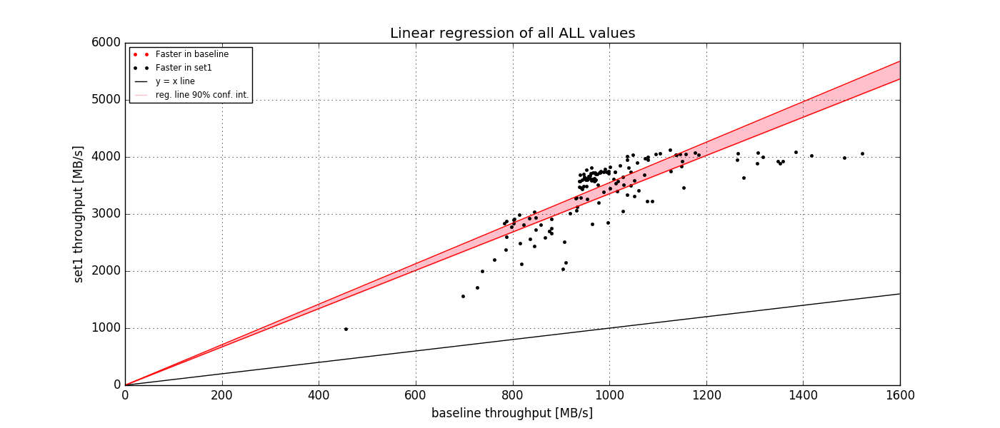
| Regression line |
|---|
| slope | 3.45174 |
| std. error | 0.05869 |
| ci. max 90% | 3.35458 |
| ci. min. 90% | 3.54889 |
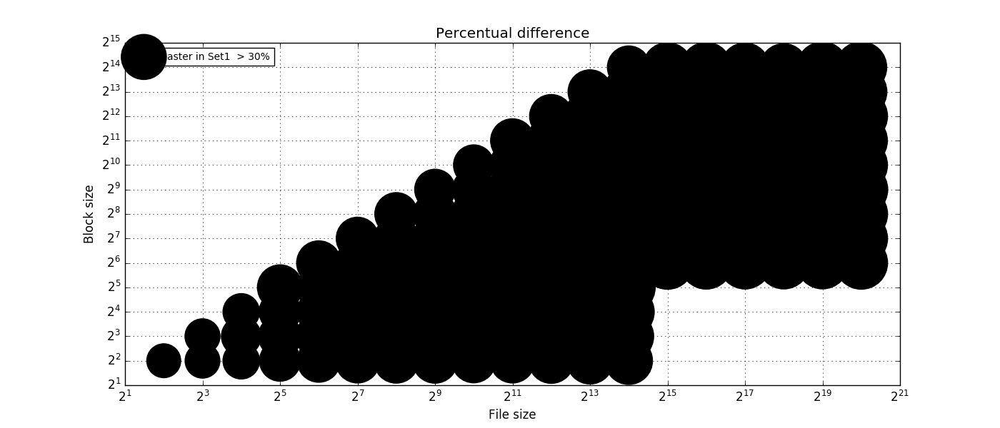
Back on top
Plotted values are median with first and third quartile errorbars.
mean => Arithmetic mean
standar dev. => Sample standard deviation
ci. max 90%, ci.min => confidence interval at confidence level 90% => it means that mean value of the distribution lies with 90% propability in interval ci_min-ci_max
geom. mean => Geometric mean
median => Second quartile = cuts data set in half = 50th percentile
first quartile => cuts off lowest 25% of data = 25th percentile
third quartile => cuts off highest 25% of data, or lowest 75% = 75th percentile
minimum => Lowest value of data set
maximum => Hightest value of data set
baseline set1 difference => Difference of medians of both sets in percennt.
ttest p-value => Student's t-test p-value = probability the both data sets are equal
ttest equality => If p-value is higher than 0.1, data sets are considered being equal with 90% probability. Otherwise the data sets are considered being different.
Linear regression of all results regression line is in y = ax form, b coeficient is zero.
for details about operations performed see Iozone documentation